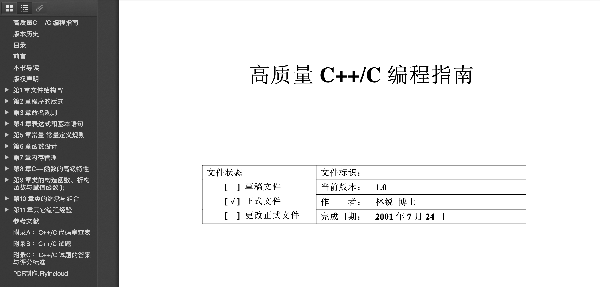

编程语言手册
该手册的目的是在长时间不接触某一门语言后，能够通过该手册快速回想起基本的语法和用法。
工作过程中接触到什么编程语言，就记录什么语言的内容，文档结构和内容在持续优化中。
👈 从左侧目录开始阅读。
Bash 脚本语法
这里记录 Shell 脚本的用法，主要是 bash。
学习资料：
bash 的命令行参数
-c "ls" : 执行字符串中的命令
-- : 命令行参数结束符
参考
Bash 的变量与数据结构
主要学习资料： bash - GNU Bourne-Again SHell。
编程常用操作
用 read 实现多变量赋值
用下面的命令可以同时定义多个变量，并赋值：
read a b c <<< "1 2 3";echo "$a|$b|$c"
读取命令行参数
内置命令 getopts
最新代码 getopts.sh。
用 getopts 解析命令行参数，getopts 不支持长格式，只能用 -h 这样的短格式：
while getopts "p:h:" option ;do
if [[ $option == "p" ]];then
echo "listener port: $OPTARG"
fi
if [[ $option == "h" ]];then
read name value <<< "${OPTARG//:/ }";
headers="$headers\nproxy_set_header $name $value;"
fi
done
echo $headers
执行效果如下：
$ ./getopts.sh -p 80 -h h1:v1 -h h2:v2
listener port: 80
proxy_set_header h1 v1;
proxy_set_header h2 v2;
用遍历参数的方式实现
最新代码 loop.sh。
#! /bin/sh
#
# loop.sh
# Copyright (C) 2019 lijiaocn <lijiaocn@foxmail.com wechat:lijiaocn>
#
# Distributed under terms of the GPL license.
#
function help(){
echo "usage: $0 [-f file] [-n name] [arguments...]"
}
while :; do
case $1 in
-h|-\?|--help)
help
exit
;;
-f|--file)
if [[ $2 == "" || ${2:0:1} == "-" ]];then
echo 'ERROR: "--file" requires a non-empty option argument.' 2>&1
exit 1
fi
file=$2
shift
;;
-n|--name)
if [[ $2 == "" || ${2:0:1} == "-" ]];then
echo 'ERROR: "--name" requires a non-empty option argument.' 2>&1
exit 1
fi
name=$2
shift
;;
-|--)
shift
break
;;
*)
break
;;
esac
shift
done
echo "file is: $file"
echo "name is: $name"
echo "arguments: $*"
一个复杂一些的示例：docker-nginx-tranproxy/entrypoint.sh
变量值读取
Bash 的变量值读取支持很多扩展方式（Parameter Expansion）。
未定义变量
针对变量是否定义，存在以下几种处理方法：
${parameter:-word}: 如果变量没有定义或者 null，返回默认值 word
${parameter:=word}: 如果变量没有定义或者 null，为变量赋值 word，并返回 word
${parameter:?word}: 如果变量没有定义或者 null，在错误输出中显示 word
${parameter:+word}: 如果定义变量，注意是是定义了！用 word 替代（返回 word）
示例：
echo "未定义的变量，使用默认值：${notdef1:-word} $notdef1"
echo "未定义的变量，赋值默认值：${notdef2:=word} $notdef2"
echo "已定义的变量，使用替代数值：${notdef2:+valueinstead}"
echo "未定义的变量，打印错误信息：${notdef3:?notdef}"
执行结果为：
未定义的变量，使用默认值：word
未定义的变量，赋值默认值：word word
已定义的变量，使用替代数值：valueinstead
./variable.sh: line 13: notdef3: notdef
字符串处理
如果变量的值是字符串，在读取时可以直接进行处理。
下面的用法对非字符串变量也可以使用，譬如@和*，譬如数组，操作含义也相应变化，变量为字符串时，这些操作的含义是最好理解的：
${parameter:offset} :第一个字符以后的字符，不包括第一个
${parameter:offset:length} :第一个字符以后的两个字符，不包括第一个
:如果变量是 @，显示从 offset 开始的 length 个命令行参数
:如果变量是 Array[@] 或 Array[*] ，显示从 offset 开始的 length 个数组成员
${#parameter} :字符串长度
:如果变量是 @ 或 *，返回命令行参数个数
:如果变量是 Array[@] 或 Array[*]，返回数组的成员数量
${parameter#word} :从字符串头开始，去掉 word 匹配的部分，最短匹配
${parameter##word} :从字符串头开始，去掉 word 匹配的部分，最长匹配
${parameter%word} :从字符串尾开始，去掉 word 匹配的部分，最短匹配
${parameter%%word} :从字符串尾开始，去掉 word 匹配的部分，最长匹配
${parameter/pattern/string} :字符后换，默认只替换第一个
pattern 以 "/" 开头，全替换
pattern 以 "#" 开头，从首字母开始匹配
pattern 以 "%" 开头，从尾字母开始匹配
:如果变量是 @ 或 *，对所有命令行参数进行处理，返回处理后的列表
:如果变量是 Array[@] 或 Array[*]，对数组所有成员进行处理，返回处理后的列表
示例：
str="abcddeddfghijka"
echo "第0个字符后: ${str:0}"
echo "第1个字符后: ${str:1}"
echo "第1个字符后的两个字符: ${str:1:2}"
echo "字符串长度：${#str}"
echo "head match #abc: ${str#abc}"
echo "head match ##abc: ${str##abc}"
echo "head match #abc*: ${str#abc*}"
echo "head match ##abc*: ${str##abc*}"
echo "tail match %ijk: ${str%ijk}"
echo "tail match %%ijk: ${str%%ijk}"
echo "tail match %*ijk: ${str%*ijk}"
echo "tail match %%*ijk: ${str%%*ijk}"
echo "replace /d/D（替换一个）: ${str/d/D}"
echo "replace //d/D（全部替换）: ${str//d/D}"
echo "replace /#a/A（从开始处匹配替换）: ${str/#a/A}"
echo "replace /%a/A（从结尾处匹配替换）: ${str/%a/A}"
执行结果为：
第0个字符后: abcddeddfghijka
第1个字符后: bcddeddfghijka
第1个字符后的两个字符: bc
字符串长度：15
head match #abc: ddeddfghijka
head match ##abc: ddeddfghijka
head match #abc*: ddeddfghijka
head match ##abc*:
tail match %ijk: abcddeddfghijka
tail match %%ijk: abcddeddfghijka
tail match %*ijk: abcddeddfghijka
tail match %%*ijk: abcddeddfghijka
replace /d/D（替换一个）: abcDdeddfghijka
replace //d/D（全部替换）: abcDDeDDfghijka
replace /#a/A（从开始处匹配替换）: Abcddeddfghijka
replace /%a/A（从结尾处匹配替换）: abcddeddfghijkA
读取变量名
注意读取的是变量的名字，不是变量值，
${!prefix*}，${!prefix@}: 返回以 prefix 为前缀的已经定义的变量名
示例：
prefixV1="a"
prefixV2="b"
prefixV3="c"
echo ${!prefix*}
echo ${!prefix@}
执行结果为：
prefixV1 prefixV2 prefixV3
prefixV1 prefixV2 prefixV3
读取数组信息
见数组章节。
${!name[@]}，${!name[*]}：读取数组的 key 值
数组
使用下面的形式赋予值时，会自动创建数组变量：
array["0"]="value0"
array["1"]="value1"
array["2"]="value2"
array["5"]="value5"
如果要声明一个数组类型的变量，用 declare -a 声明：
# 声明数组变量 array
declare -a array
用下面的方式生成一个带有值数组变量：
array=("value0" "value1" "value2" "value3")
读取数组中指定位置的值：
echo ${array[1]}
读取数组的信息：
# 打印数组中的所有值
for i in ${array[@]}
do
echo "data: $i"
done
# 打印数组中有值的 index
for i in ${!array[@]}
do
echo "index: $i"
done
# 打印数组内元素个数
echo "array size: ${#array[@]}"
参考
常用的 Bash 内置的命令
Bash 有很多内置命令，譬如 :、.、source、alias、bg 等。
trap
设置信号处理函数，信号发生后，触发函数的执行。
除了支持 man signal 中列出的 32 个系统信号，还支持 DEBUG、ERR、EXIT，分别在每个命令执行前后触发、出错时触发、退出时触发。
function debug {
echo "DEBUG"
}
trap debug DEBUG
function err {
echo "ERR"
}
trap err ERR
function cleanup {
echo "EXIT"
}
trap cleanup EXIT
echo "exec command..."
ls /noexit
执行结果如下：
DEBUG
DEBUG
DEBUG
exec command...
DEBUG
ls: /noexit: No such file or directory
DEBUG
ERR
DEBUG
EXIT
参考
C语言速查手册
C语言编程（这里特指linux c）中，最常用的资料是man手册和头文件。
C语言中的字符串操作
编程过程中，如果不是在处理数值，就是在处理字符串。 by me ...
字符串长度
man strlen、man strnlen
#include <string.h>
size_t strlen(const char *s);
size_t strnlen(const char *s, size_t maxlen);
man wcslen、man wcsnlen
#include <wchar.h>
size_t wcslen(const wchar_t *s);
size_t wcsnlen(const wchar_t *s, size_t maxlen);
字符串比较
man strcmp
#include <string.h>
int strcmp(const char *s1, const char *s2);
int strncmp(const char *s1, const char *s2, size_t n);
字符串复制
man strdup
#include <string.h>
char *strdup(const char *s);
char *strndup(const char *s, size_t n);
char *strdupa(const char *s);
char *strndupa(const char *s, size_t n);
注意返回的是一个指针，指针指向的内存是用malloc函数分配的，不再使用的时候需要调用free函数释放。
按照指定的分隔符，将字符串分割
man strtok
#include <string.h>
char *strtok(char *str, const char *delim);
char *strtok_r(char *str, const char *delim, char **saveptr);
注意：
- strtok是线程不安全的，线程安全需要使用strtok_r。
- 传入的字符串的内容会被改写，用
\0分割成了多个token，如果需要保留原先字符串，需要复制保留。
示例1：
#include <stdio.h>
#include <string.h>
int main(int argc, char *argv[])
{
char str[100];
sprintf(str,"a b c d e f");
char *delim = " ";
char *token = NULL;
token = strtok(str, delim);
while (NULL != token) {
printf("%s\n", token);
token = strtok(NULL, delim);
}
return 0;
}
示例2:
/*
* main.c
* Copyright (C) 2019 lijiaocn <lijiaocn@foxmail.com>
*
* Distributed under terms of the GPL license.
*/
#include <stdio.h>
#include <string.h>
#define str_iterate_parts(__iterator, __splitme, __separators) \
for (char *__p = NULL, *__it = strtok_r(__splitme, __separators, &__p); \
(__iterator = __it); \
__iterator = __it = strtok_r(NULL, __separators, &__p))
int main(int argc, char *argv[])
{
char str[100];
sprintf(str,"a b c d e f");
printf("before: %s\n", str);
char *delim = " ";
char *token = NULL;
char *saveptr = NULL;
/*
token = strtok_r(str, delim, &saveptr);
while (NULL != token) {
printf("%s\n", token);
token = strtok_r(NULL, delim, &saveptr);
}
*/
int i = 0;
str_iterate_parts(token, str, delim){
if (i >= 3 ) break;
printf("%s\n", token);
i++;
}
printf("after : %s\n", str);
return 0;
}
定位指定字符
#include <string.h>
char *strchr(const char *s, int c);
char *strrchr(const char *s, int c);
#define _GNU_SOURCE /* See feature_test_macros(7) */
#include <string.h>
char *strchrnul(const char *s, int c);
定位子字符串
#include <string.h>
char *strstr(const char *haystack, const char *needle);
#define _GNU_SOURCE /* See feature_test_macros(7) */
#include <string.h>
char *strcasestr(const char *haystack, const char *needle);
输入字符串转换
man scanf
#include <stdio.h>
int scanf(const char *format, ...);
int fscanf(FILE *stream, const char *format, ...);
int sscanf(const char *str, const char *format, ...);
#include <stdarg.h>
int vscanf(const char *format, va_list ap);
int vsscanf(const char *str, const char *format, va_list ap);
int vfscanf(FILE *stream, const char *format, va_list ap);
fscanf和sscanf可能有妙用。
C语言中的时间操作
获取当前时间
获取相对指定时钟的当前时间：
man clock_gettime
#include <time.h>
int clock_getres(clockid_t clk_id, struct timespec *res);
int clock_gettime(clockid_t clk_id, struct timespec *tp);
int clock_settime(clockid_t clk_id, const struct timespec *tp);
Link with -lrt (only for glibc versions before 2.17).
*res是返回的当前时间，定义如下：
struct timespec {
time_t tv_sec; /* seconds */
long tv_nsec; /* nanoseconds */
};
时钟clk_id可以取以下值：
CLOCK_REALTIME：
System-wide clock that measures real (i.e., wall-clock) time. Setting this clock requires
appropriate privileges. This clock is affected by discontinuous jumps in the system time
(e.g., if the system administrator manually changes the clock), and by the incremental adjust‐
ments performed by adjtime(3) and NTP.
CLOCK_REALTIME_COARSE (since Linux 2.6.32; Linux-specific)：
A faster but less precise version of CLOCK_REALTIME. Use when you need very fast, but not
fine-grained timestamps.
CLOCK_MONOTONIC：
Clock that cannot be set and represents monotonic time since some unspecified starting
point. This clock is not affected by discontinuous jumps in the system time (e.g., if
the system administrator manually changes the clock), but is affected by the incremental
adjustments performed by adjtime(3) and NTP.
CLOCK_MONOTONIC_COARSE (since Linux 2.6.32; Linux-specific)：
A faster but less precise version of CLOCK_MONOTONIC. Use when you need very fast, but
not fine-grained timestamps.
CLOCK_MONOTONIC_RAW (since Linux 2.6.28; Linux-specific)：
Similar to CLOCK_MONOTONIC, but provides access to a raw hardware-based time that is not
subject to NTP adjustments or the incremental adjustments performed by adjtime(3).
CLOCK_BOOTTIME (since Linux 2.6.39; Linux-specific)：
Identical to CLOCK_MONOTONIC, except it also includes any time that the system is sus‐
pended. This allows applications to get a suspend-aware monotonic clock without having
to deal with the complications of CLOCK_REALTIME, which may have discontinuities if the
time is changed using settimeofday(2).
CLOCK_PROCESS_CPUTIME_ID：
High-resolution per-process timer from the CPU.
CLOCK_THREAD_CPUTIME_ID：
Thread-specific CPU-time clock.
其中CLOCK_BOOTTIME可以简单理解为系统启动以后过去的时间，Introduce CLOCK_BOOTTIME 。
获取指定进程的启动时间和运行时长
lxcfs中的做法，适用于linux。
/proc/[PID]/stat文件的第22个字段是进程创建时间，单位是系统时钟嘀嗒数：
starttime %llu (was %lu before Linux 2.6)
(22) The time the process started after system boot. In kernels before Linux 2.6, this value was expressed in jiffies.
Since Linux 2.6, the value is expressed in clock ticks (divide by sysconf(_SC_CLK_TCK)).
将其取出后除以系统的时钟频率，得到的就是以秒为单位的启动时间，这个时间是相对于系统启动时间的，实现如下：
static uint64_t get_reaper_start_time_in_sec(pid_t pid)
{
uint64_t clockticks;
int64_t ticks_per_sec;
clockticks = get_reaper_start_time(pid);
if (clockticks == 0 && errno == EINVAL) {
lxcfs_debug("failed to retrieve start time of pid %d\n", pid);
return 0;
}
ticks_per_sec = sysconf(_SC_CLK_TCK);
if (ticks_per_sec < 0 && errno == EINVAL) {
lxcfs_debug(
"%s\n",
"failed to determine number of clock ticks in a second");
return 0;
}
return (clockticks /= ticks_per_sec);
}
函数sysconf()的用法见：系统配置->sysconf。
/proc/[PID]/stat文件的第22个字段的读取方法：
static uint64_t get_reaper_start_time(pid_t pid)
{
int ret;
FILE *f;
uint64_t starttime;
/* strlen("/proc/") = 6
* +
* LXCFS_NUMSTRLEN64
* +
* strlen("/stat") = 5
* +
* \0 = 1
* */
#define __PROC_PID_STAT_LEN (6 + LXCFS_NUMSTRLEN64 + 5 + 1)
char path[__PROC_PID_STAT_LEN];
pid_t qpid;
qpid = lookup_initpid_in_store(pid);
if (qpid <= 0) {
/* Caller can check for EINVAL on 0. */
errno = EINVAL;
return 0;
}
ret = snprintf(path, __PROC_PID_STAT_LEN, "/proc/%d/stat", qpid);
if (ret < 0 || ret >= __PROC_PID_STAT_LEN) {
/* Caller can check for EINVAL on 0. */
errno = EINVAL;
return 0;
}
f = fopen(path, "r");
if (!f) {
/* Caller can check for EINVAL on 0. */
errno = EINVAL;
return 0;
}
/* Note that the *scanf() argument supression requires that length
* modifiers such as "l" are omitted. Otherwise some compilers will yell
* at us. It's like telling someone you're not married and then asking
* if you can bring your wife to the party.
*/
ret = fscanf(f, "%*d " /* (1) pid %d */
"%*s " /* (2) comm %s */
"%*c " /* (3) state %c */
"%*d " /* (4) ppid %d */
"%*d " /* (5) pgrp %d */
"%*d " /* (6) session %d */
"%*d " /* (7) tty_nr %d */
"%*d " /* (8) tpgid %d */
"%*u " /* (9) flags %u */
"%*u " /* (10) minflt %lu */
"%*u " /* (11) cminflt %lu */
"%*u " /* (12) majflt %lu */
"%*u " /* (13) cmajflt %lu */
"%*u " /* (14) utime %lu */
"%*u " /* (15) stime %lu */
"%*d " /* (16) cutime %ld */
"%*d " /* (17) cstime %ld */
"%*d " /* (18) priority %ld */
"%*d " /* (19) nice %ld */
"%*d " /* (20) num_threads %ld */
"%*d " /* (21) itrealvalue %ld */
"%" PRIu64, /* (22) starttime %llu */
&starttime);
if (ret != 1) {
fclose(f);
/* Caller can check for EINVAL on 0. */
errno = EINVAL;
return 0;
}
fclose(f);
errno = 0;
return starttime;
}
用当前时间减去进程的启动时间，就是进程的运行时长，当前时间需要是相对系统启动的时间，用系统调用clock_gettime()获取：
static uint64_t get_reaper_age(pid_t pid)
{
uint64_t procstart, uptime, procage;
/* We need to substract the time the process has started since system
* boot minus the time when the system has started to get the actual
* reaper age.
*/
procstart = get_reaper_start_time_in_sec(pid);
procage = procstart;
if (procstart > 0) {
int ret;
struct timespec spec;
ret = clock_gettime(CLOCK_BOOTTIME, &spec);
if (ret < 0)
return 0;
/* We could make this more precise here by using the tv_nsec
* field in the timespec struct and convert it to milliseconds
* and then create a double for the seconds and milliseconds but
* that seems more work than it is worth.
*/
uptime = spec.tv_sec;
procage = uptime - procstart;
}
return procage;
}
动态链接库操作
打开/关闭动态链接库
#include <dlfcn.h>
void *dlopen(const char *filename, int flag);
int dlclose(void *handle);
读取动态链接库的操作错误
#include <dlfcn.h>
char *dlerror(void);
获取动态链接库中的符号地址
#include <dlfcn.h>
void *dlsym(void *handle, const char *symbol);
例如：
static int do_proc_open(const char *path, struct fuse_file_info *fi)
{
int (*proc_open)(const char *path, struct fuse_file_info *fi);
char *error;
dlerror(); /* Clear any existing error */
proc_open = (int (*)(const char *path, struct fuse_file_info *fi)) dlsym(dlopen_handle, "proc_open");
error = dlerror();
if (error != NULL) {
lxcfs_error("%s\n", error);
return -1;
}
return proc_open(path, fi);
}
信号量操作
信号量列表
man 7 signal
Signal Value Action Comment
──────────────────────────────────────────────────────────────────────
SIGHUP 1 Term Hangup detected on controlling terminal
or death of controlling process
SIGINT 2 Term Interrupt from keyboard
SIGQUIT 3 Core Quit from keyboard
SIGILL 4 Core Illegal Instruction
SIGABRT 6 Core Abort signal from abort(3)
SIGFPE 8 Core Floating point exception
SIGKILL 9 Term Kill signal
SIGSEGV 11 Core Invalid memory reference
SIGPIPE 13 Term Broken pipe: write to pipe with no
readers
SIGALRM 14 Term Timer signal from alarm(2)
SIGTERM 15 Term Termination signal
SIGUSR1 30,10,16 Term User-defined signal 1
SIGUSR2 31,12,17 Term User-defined signal 2
SIGCHLD 20,17,18 Ign Child stopped or terminated
SIGCONT 19,18,25 Cont Continue if stopped
SIGSTOP 17,19,23 Stop Stop process
SIGTSTP 18,20,24 Stop Stop typed at terminal
SIGTTIN 21,21,26 Stop Terminal input for background process
SIGTTOU 22,22,27 Stop Terminal output for background process
信号量捕获
man signal
#include <signal.h>
typedef void (*sighandler_t)(int);
sighandler_t signal(int signum, sighandler_t handler);
内存管理操作
从栈上分配会自动回收的内存
man alloca
#include <alloca.h>
void *alloca(size_t size);
这个函数需要特意说明一下，alloca分配的是调用它的函数的栈中的内存，在调用函数返回时，alloca分配的内存会随着栈空间的释放一同释放。
格式化打印输出
printf系列函数
man 3 printf
#include <stdio.h>
int printf(const char *format, ...);
int fprintf(FILE *stream, const char *format, ...);
int sprintf(char *str, const char *format, ...);
int snprintf(char *str, size_t size, const char *format, ...);
#include <stdarg.h>
int vprintf(const char *format, va_list ap);
int vfprintf(FILE *stream, const char *format, va_list ap);
int vsprintf(char *str, const char *format, va_list ap);
int vsnprintf(char *str, size_t size, const char *format, va_list ap);
文件&设备操作
检查对某个文件的操作权限
检查对相对某个目录下的某文件的操作权限，man faccessat：
#include <fcntl.h> /* Definition of AT_* constants */
#include <unistd.h>
int faccessat(int dirfd, const char *pathname, int mode, int flags);
获取文件状态
man 2 stat
#include <sys/types.h>
#include <sys/stat.h>
#include <unistd.h>
int stat(const char *path, struct stat *buf);
int fstat(int fd, struct stat *buf);
int lstat(const char *path, struct stat *buf);
struct stat在/usr/include/bits/stat.h中定义，原始定义中使用很多宏不方便阅读，可以用以下定义代替：
struct stat {
dev_t st_dev; /* ID of device containing file */
ino_t st_ino; /* inode number */
mode_t st_mode; /* protection */
nlink_t st_nlink; /* number of hard links */
uid_t st_uid; /* user ID of owner */
gid_t st_gid; /* group ID of owner */
dev_t st_rdev; /* device ID (if special file) */
off_t st_size; /* total size, in bytes */
blksize_t st_blksize; /* blocksize for file system I/O */
blkcnt_t st_blocks; /* number of 512B blocks allocated */
time_t st_atime; /* time of last access */
time_t st_mtime; /* time of last modification */
time_t st_ctime; /* time of last status change */
};
可以用下面的宏定义判断文件类型，传入参数是stat中的st_mode：
S_ISREG(m) is it a regular file?
S_ISDIR(m) directory?
S_ISCHR(m) character device?
S_ISBLK(m) block device?
S_ISFIFO(m) FIFO (named pipe)?
S_ISLNK(m) symbolic link? (Not in POSIX.1-1996.)
S_ISSOCK(m) socket? (Not in POSIX.1-1996.)
st_mode中每个bit含义如下：
S_IFMT 0170000 bit mask for the file type bit fields
S_IFSOCK 0140000 socket
S_IFLNK 0120000 symbolic link
S_IFREG 0100000 regular file
S_IFBLK 0060000 block device
S_IFDIR 0040000 directory
S_IFCHR 0020000 character device
S_IFIFO 0010000 FIFO
S_ISUID 0004000 set-user-ID bit
S_ISGID 0002000 set-group-ID bit (see below)
S_ISVTX 0001000 sticky bit (see below)
S_IRWXU 00700 mask for file owner permissions
S_IRUSR 00400 owner has read permission
S_IWUSR 00200 owner has write permission
S_IXUSR 00100 owner has execute permission
S_IRWXG 00070 mask for group permissions
S_IRGRP 00040 group has read permission
S_IWGRP 00020 group has write permission
S_IXGRP 00010 group has execute permission
S_IRWXO 00007 mask for permissions for others (not in group)
S_IROTH 00004 others have read permission
S_IWOTH 00002 others have write permission
S_IXOTH 00001 others have execute permission
打开、创建文件
man open
#include <sys/types.h>
#include <sys/stat.h>
#include <fcntl.h>
int open(const char *pathname, int flags);
int open(const char *pathname, int flags, mode_t mode);
int creat(const char *pathname, mode_t mode);
openat()是相对指定的目录描述符打开文件：
#include <fcntl.h>
int openat(int dirfd, const char *pathname, int flags);
int openat(int dirfd, const char *pathname, int flags, mode_t mode);
关闭文件
man close
#include <unistd.h>
int close(int fildes);
文件描述符
man fcntl
#include <unistd.h>
#include <fcntl.h>
int fcntl(int fd, int cmd, ... /* arg */ );
对已经打开的文件描述符进行操作。可以进行的操作比较多，而且用途三言两语难以说清楚，这里只列出个目录，详情到man手册中查看。
文件描述符复制（Duplicating a file descriptor）：
F_DUPFD (int)、F_DUPFD_CLOEXEC (int; since Linux 2.6.24)
文件描述符标记（File descriptor flags）：
F_GETFD (void)、F_SETFD (int)
文件状态标记（File status flags）：
F_GETFL (void)、F_SETFL (int)
文件软锁（Advisory locking）：
F_SETLK (struct flock *)、F_SETLKW (struct flock *)、F_GETLK (struct flock *)
文件信号响应管理（Managing signals）：
F_GETOWN (void)、F_SETOWN (int)、F_GETOWN_EX (struct f_owner_ex *) (since Linux 2.6.32)
F_SETOWN_EX (struct f_owner_ex *) (since Linux 2.6.32)、F_GETSIG (void)、F_SETSIG (int)
文件描述符租约（Leases）：
F_SETLEASE (int)、 F_GETLEASE (void)
文件和路径变化通知（File and directory change notification (dnotify)）：
F_NOTIFY (int)
Pipe容量设置（Changing the capacity of a pipe）：
F_SETPIPE_SZ (int; since Linux 2.6.35)、F_GETPIPE_SZ (void; since Linux 2.6.35)
文件内容截断到指定长度
man truncate
#include <unistd.h>
#include <sys/types.h>
int truncate(const char *path, off_t length);
int ftruncate(int fd, off_t length);
逐行读取文件内容
#include <stdio.h>
ssize_t getline(char **lineptr, size_t *n, FILE *stream);
ssize_t getdelim(char **lineptr, size_t *n, int delim, FILE *stream);
*lineptr是存放一行文本的内存地址，*n是*lineptr指向的内存空间的大小。
注意：如果*lineptr是null，getline和getdelim会让*lineptr指定自动分配的一块内存，要主动释放*lineptr指向的内存，这种情况下*n被忽略。
注意：如果*lineptr指定的内存空间不足以存放整行数据，getline和getdelim会调用realloc重新分配内存，更改*lineptr指向新分配的内存，并同步更新*n。
向文件中写入内容
man 3 write
#include <unistd.h>
ssize_t pwrite(int fildes, const void *buf, size_t nbyte,
off_t offset);
ssize_t write(int fildes, const void *buf, size_t nbyte);
进程管理操作
获取进程ID
man pid
#include <sys/types.h>
#include <unistd.h>
pid_t getpid(void);
pid_t getppid(void);
分别是获取当前进程id，和父进程id。
创建子进程
fork
man fork
#include <unistd.h>
pid_t fork(void);
子进程创建失败返回-1，创建成功，在父进程中返回子进程的进程号，在子进程中返回0。
clone
man clone
clone()比fork()功能更强大，可以传入子进程的运行函数，以及设置namespace等。
#include <sched.h>
int clone(int (*fn)(void *), void *child_stack,
int flags, void *arg, ...
/* pid_t *ptid, struct user_desc *tls, pid_t *ctid */ );
/* Prototype for the raw system call */
long clone(unsigned long flags, void *child_stack,
void *ptid, void *ctid,
struct pt_regs *regs);
上面第一个定义是glibc提供的，封装了原始的clone系统调用，第二个定义是原始的clone系统调用定义。
关键是参数flags，它的bit位有特殊含义，分别是退出时向父进程发送的信号量和下面的标志位（具体说明查阅手册man clone）：
CLONE_CHILD_CLEARTID (since Linux 2.5.49)
CLONE_CHILD_SETTID (since Linux 2.5.49)
CLONE_FILES (since Linux 2.0)
CLONE_FS (since Linux 2.0)
CLONE_IO (since Linux 2.6.25)
CLONE_NEWIPC (since Linux 2.6.19)
CLONE_NEWNET (since Linux 2.6.24)
CLONE_NEWNS (since Linux 2.4.19)
CLONE_NEWPID (since Linux 2.6.24)
CLONE_NEWUTS (since Linux 2.6.19)
CLONE_PARENT (since Linux 2.3.12)
CLONE_PARENT_SETTID (since Linux 2.5.49)
CLONE_PID (obsolete)
CLONE_PTRACE (since Linux 2.2)
CLONE_SETTLS (since Linux 2.5.32)
CLONE_SIGHAND (since Linux 2.0)
CLONE_STOPPED (since Linux 2.6.0-test2)
CLONE_SYSVSEM (since Linux 2.5.10)
CLONE_THREAD (since Linux 2.4.0-test8)
CLONE_UNTRACED (since Linux 2.5.46)
CLONE_VFORK (since Linux 2.2)
CLONE_VM (since Linux 2.0)
例如子进程退出时向父进程发送SIGCHLD信号：
pid = clone(childFunc, stackTop, CLONE_NEWUTS | SIGCHLD, argv[1]);
if (pid == -1)
errExit("clone");
printf("clone() returned %ld\n", (long) pid);
并发编程
Once
设置只有第一次被调用时会执行的操作，man pthread_once()：
#include <pthread.h>
int pthread_once(pthread_once_t *once_control, void (*init_routine)(void));
pthread_once_t once_control = PTHREAD_ONCE_INIT;
线程锁
线程读写锁
线程读写锁的创建初始化和销毁
创建初始化和销毁，man pthread_rwlock_init：
#include <pthread.h>
int pthread_rwlock_destroy(pthread_rwlock_t *rwlock);
int pthread_rwlock_init(pthread_rwlock_t *restrict rwlock,
const pthread_rwlockattr_t *restrict attr);
线程读写锁的加锁解锁操作
加读锁，man pthread_rwlock_rdlock：
#include <pthread.h>
int pthread_rwlock_rdlock(pthread_rwlock_t *rwlock);
int pthread_rwlock_tryrdlock(pthread_rwlock_t *rwlock);
加读锁等待超时，man pthread_rwlock_timedrdlock：
#include <pthread.h>
#include <time.h>
int pthread_rwlock_timedrdlock(pthread_rwlock_t *restrict rwlock,
const struct timespec *restrict abs_timeout);
加写锁，man pthread_rwlock_wrlock：
#include <pthread.h>
int pthread_rwlock_trywrlock(pthread_rwlock_t *rwlock);
int pthread_rwlock_wrlock(pthread_rwlock_t *rwlock);
加写锁等待超时，man pthread_rwlock_timedwrlock：
#include <pthread.h>
#include <time.h>
int pthread_rwlock_timedwrlock(pthread_rwlock_t *restrict rwlock,
const struct timespec *restrict abs_timeout);
解锁，man pthread_rwlock_unlock：
#include <pthread.h>
int pthread_rwlock_unlock(pthread_rwlock_t *rwlock);
线程互斥锁
线程互斥锁的创建初始化和销毁
创建初始化和销毁，man pthread_mutex_init：
#include <pthread.h>
int pthread_mutex_destroy(pthread_mutex_t *mutex);
int pthread_mutex_init(pthread_mutex_t *restrict mutex,
const pthread_mutexattr_t *restrict attr);
pthread_mutex_t mutex = PTHREAD_MUTEX_INITIALIZER;
线程互斥锁的加锁和解锁操作
加锁解锁，man pthread_mutex_lock：
#include <pthread.h>
int pthread_mutex_lock(pthread_mutex_t *mutex);
int pthread_mutex_trylock(pthread_mutex_t *mutex);
加锁等待超时，man pthread_mutex_timedlock：
#include <pthread.h>
#include <time.h>
int pthread_mutex_timedlock(pthread_mutex_t *restrict mutex,
const struct timespec *restrict abs_timeout);
解锁操作，man pthread_mutex_unlock：
#include <pthread.h>
int pthread_mutex_unlock(pthread_mutex_t *mutex);
socket通信相关操作
socket管道
man socketpair
一次创建两个socket，构成一个未命名的socket pair，写入一个socket的数据能够从另一个socket中收到。
#include <sys/types.h> /* See NOTES */
#include <sys/socket.h>
int socketpair(int domain, int type, int protocol, int sv[2]);
可以作为父子进程的通信方式，例如：
static pid_t get_init_pid_for_task(pid_t task)
{
int sock[2];
pid_t pid;
pid_t ret = -1;
char v = '0';
struct ucred cred;
if (socketpair(AF_UNIX, SOCK_DGRAM, 0, sock) < 0) {
perror("socketpair");
return -1;
}
pid = fork();
if (pid < 0)
goto out;
if (!pid) {
close(sock[1]);
write_task_init_pid_exit(sock[0], task);
_exit(0);
}
if (!recv_creds(sock[1], &cred, &v))
goto out;
ret = cred.pid;
out:
close(sock[0]);
close(sock[1]);
if (pid > 0)
wait_for_pid(pid);
return ret;
}
向socket写数据
man sendmsg
#include <sys/types.h>
#include <sys/socket.h>
ssize_t send(int sockfd, const void *buf, size_t len, int flags);
ssize_t sendto(int sockfd, const void *buf, size_t len, int flags,
const struct sockaddr *dest_addr, socklen_t addrlen);
ssize_t sendmsg(int sockfd, const struct msghdr *msg, int flags);
使用socket消息头
下面这些函数提供了操作通过socket发送的数据的消息头的能力：
#include <sys/socket.h>
struct cmsghdr *CMSG_FIRSTHDR(struct msghdr *msgh);
struct cmsghdr *CMSG_NXTHDR(struct msghdr *msgh, struct cmsghdr *cmsg);
size_t CMSG_ALIGN(size_t length);
size_t CMSG_SPACE(size_t length);
size_t CMSG_LEN(size_t length);
unsigned char *CMSG_DATA(struct cmsghdr *cmsg);
msghdr描述要发送的数据：
/* Structure describing messages sent by
`sendmsg' and received by `recvmsg'. */
struct msghdr
{
void *msg_name; /* Address to send to/receive from. */
socklen_t msg_namelen; /* Length of address data. */
struct iovec *msg_iov; /* Vector of data to send/receive into. */
size_t msg_iovlen; /* Number of elements in the vector. */
void *msg_control; /* Ancillary data (eg BSD filedesc passing). */
size_t msg_controllen; /* Ancillary data buffer length.
!! The type should be socklen_t but the
definition of the kernel is incompatible
with this. */
int msg_flags; /* Flags on received message. */
};
可以在其中添加额外的控制信息，msg_control指向额外的控制信息，msg_controllen是额外的控制信息占用的内存空间。
额外的控制信息用结构体cmsghdr表达，msg_control中可以包含多个cmsghdr：
/* Structure used for storage of ancillary data object information. */
struct cmsghdr
{
size_t cmsg_len; /* Length of data in cmsg_data plus length
of cmsghdr structure.
!! The type should be socklen_t but the
definition of the kernel is incompatible
with this. */
int cmsg_level; /* Originating protocol. */
int cmsg_type; /* Protocol specific type. */
#if (!defined __STRICT_ANSI__ && __GNUC__ >= 2) || __STDC_VERSION__ >= 199901L
__extension__ unsigned char __cmsg_data __flexarr; /* Ancillary data. */
#endif
};
用宏CMSG_FIRSTHDR获得第一个cmsghdr的地址：
cmsg = CMSG_FIRSTHDR(&msg);
用宏CMSG_DATA获得cmsghdr的数据地址：
memcpy(CMSG_DATA(cmsg), cred, sizeof(*cred));
发送端的例子
// lxcfs/bindings.c: 2053
static int send_creds(int sock, struct ucred *cred, char v, bool pingfirst)
{
struct msghdr msg = { 0 };
struct iovec iov;
struct cmsghdr *cmsg;
//额外的控制信息占用的内存
char cmsgbuf[CMSG_SPACE(sizeof(*cred))];
char buf[1];
buf[0] = 'p';
if (pingfirst) {
if (msgrecv(sock, buf, 1) != 1) {
lxcfs_error("%s\n", "Error getting reply from server over socketpair.");
return SEND_CREDS_FAIL;
}
}
//控制信息占用的内存的地址写入msg
msg.msg_control = cmsgbuf;
msg.msg_controllen = sizeof(cmsgbuf);
//获取第一个额外控制信息的地址，并设置
cmsg = CMSG_FIRSTHDR(&msg);
cmsg->cmsg_len = CMSG_LEN(sizeof(struct ucred));
cmsg->cmsg_level = SOL_SOCKET;
cmsg->cmsg_type = SCM_CREDENTIALS;
memcpy(CMSG_DATA(cmsg), cred, sizeof(*cred));
msg.msg_name = NULL;
msg.msg_namelen = 0;
//设置要发送的数据
buf[0] = v;
iov.iov_base = buf;
iov.iov_len = sizeof(buf);
msg.msg_iov = &iov;
msg.msg_iovlen = 1;
if (sendmsg(sock, &msg, 0) < 0) {
lxcfs_error("Failed at sendmsg: %s.\n",strerror(errno));
if (errno == 3)
return SEND_CREDS_NOTSK;
return SEND_CREDS_FAIL;
}
return SEND_CREDS_OK;
}
接收端的例子
// lxcfs/bindings.c: 2097
static bool recv_creds(int sock, struct ucred *cred, char *v)
{
struct msghdr msg = { 0 };
struct iovec iov;
struct cmsghdr *cmsg;
char cmsgbuf[CMSG_SPACE(sizeof(*cred))];
char buf[1];
int ret;
int optval = 1;
*v = '1';
cred->pid = -1;
cred->uid = -1;
cred->gid = -1;
if (setsockopt(sock, SOL_SOCKET, SO_PASSCRED, &optval, sizeof(optval)) == -1) {
lxcfs_error("Failed to set passcred: %s\n", strerror(errno));
return false;
}
buf[0] = '1';
if (write(sock, buf, 1) != 1) {
lxcfs_error("Failed to start write on scm fd: %s\n", strerror(errno));
return false;
}
//准备用发送端同样规格的消息头
msg.msg_name = NULL;
msg.msg_namelen = 0;
msg.msg_control = cmsgbuf;
msg.msg_controllen = sizeof(cmsgbuf);
iov.iov_base = buf;
iov.iov_len = sizeof(buf);
msg.msg_iov = &iov;
msg.msg_iovlen = 1;
if (!wait_for_sock(sock, 2)) {
lxcfs_error("Timed out waiting for scm_cred: %s\n", strerror(errno));
return false;
}
//接收数据
ret = recvmsg(sock, &msg, MSG_DONTWAIT);
if (ret < 0) {
lxcfs_error("Failed to receive scm_cred: %s\n", strerror(errno));
return false;
}
//读取额外的控制信息
cmsg = CMSG_FIRSTHDR(&msg);
if (cmsg && cmsg->cmsg_len == CMSG_LEN(sizeof(struct ucred)) &&
cmsg->cmsg_level == SOL_SOCKET &&
cmsg->cmsg_type == SCM_CREDENTIALS) {
memcpy(cred, CMSG_DATA(cmsg), sizeof(*cred));
}
//buf中已经写入发送过来的数据
*v = buf[0];
return true;
}
文件系统相关操作
libfuse使用
libfuse的用途以及基础使用方法参考《Linux FUSE（用户态文件系统）的使用：用libfuse创建FUSE文件系统》。
fuse_get_context
fuse_get_context用于在文件系统操作时获取上下文，在头文件fuse/fuse.h中定义：
/**
* Get the current context
*
* The context is only valid for the duration of a filesystem
* operation, and thus must not be stored and used later.
*
* @return the context
*/
struct fuse_context *fuse_get_context(void);
返回的结构体fuse_context包含以下信息：
/** Extra context that may be needed by some filesystems
*
* The uid, gid and pid fields are not filled in case of a writepage
* operation.
*/
struct fuse_context {
/** Pointer to the fuse object */
struct fuse *fuse;
/** User ID of the calling process */
uid_t uid;
/** Group ID of the calling process */
gid_t gid;
/** Thread ID of the calling process */
pid_t pid;
/** Private filesystem data */
void *private_data;
/** Umask of the calling process (introduced in version 2.8) */
mode_t umask;
};
系统配置读取
操作系统相关配置获取
sysconf： 获取数值类型的配置项
fpathconf： 获取打开的文件句柄对应的配置项
pathconf： 获取文件对应的配置项
confstr： 获取字符串类型的配置项
#include <unistd.h>
long sysconf(int name);
long fpathconf(int fd, int name);
long pathconf(char *path, int name);
size_t confstr(int name, char *buf, size_t len);
sysconf
sysconf用于在运行时获取系统配置常量，主要是POSIX中规定一些参数，例如最大长度、最大数值等。
man 3 sysconf
#include <unistd.h>
long sysconf(int name);
sysconf可以读取以下配置：
First, the POSIX.1 compatible values.
ARG_MAX - _SC_ARG_MAX
The maximum length of the arguments to the exec(3) family of functions. Must not be less than _POSIX_ARG_MAX (4096).
CHILD_MAX - _SC_CHILD_MAX
The maximum number of simultaneous processes per user ID. Must not be less than _POSIX_CHILD_MAX (25).
HOST_NAME_MAX - _SC_HOST_NAME_MAX
Maximum length of a hostname, not including the terminating null byte, as returned by gethostname(2). Must not be less than _POSIX_HOST_NAME_MAX (255).
LOGIN_NAME_MAX - _SC_LOGIN_NAME_MAX
Maximum length of a login name, including the terminating null byte. Must not be less than _POSIX_LOGIN_NAME_MAX (9).
clock ticks - _SC_CLK_TCK
The number of clock ticks per second. The corresponding variable is obsolete. It was of course called CLK_TCK. (Note: the macro CLOCKS_PER_SEC does not give information: it must
equal 1000000.)
OPEN_MAX - _SC_OPEN_MAX
The maximum number of files that a process can have open at any time. Must not be less than _POSIX_OPEN_MAX (20).
PAGESIZE - _SC_PAGESIZE
Size of a page in bytes. Must not be less than 1. (Some systems use PAGE_SIZE instead.)
RE_DUP_MAX - _SC_RE_DUP_MAX
The number of repeated occurrences of a BRE permitted by regexec(3) and regcomp(3). Must not be less than _POSIX2_RE_DUP_MAX (255).
STREAM_MAX - _SC_STREAM_MAX
The maximum number of streams that a process can have open at any time. If defined, it has the same value as the standard C macro FOPEN_MAX. Must not be less than _POSIX_STREAM_MAX
(8).
SYMLOOP_MAX - _SC_SYMLOOP_MAX
The maximum number of symbolic links seen in a pathname before resolution returns ELOOP. Must not be less than _POSIX_SYMLOOP_MAX (8).
TTY_NAME_MAX - _SC_TTY_NAME_MAX
The maximum length of terminal device name, including the terminating null byte. Must not be less than _POSIX_TTY_NAME_MAX (9).
TZNAME_MAX - _SC_TZNAME_MAX
The maximum number of bytes in a timezone name. Must not be less than _POSIX_TZNAME_MAX (6).
_POSIX_VERSION - _SC_VERSION
indicates the year and month the POSIX.1 standard was approved in the format YYYYMML; the value 199009L indicates the Sept. 1990 revision.
Next, the POSIX.2 values, giving limits for utilities.
BC_BASE_MAX - _SC_BC_BASE_MAX
indicates the maximum obase value accepted by the bc(1) utility.
BC_DIM_MAX - _SC_BC_DIM_MAX
indicates the maximum value of elements permitted in an array by bc(1).
BC_SCALE_MAX - _SC_BC_SCALE_MAX
indicates the maximum scale value allowed by bc(1).
BC_STRING_MAX - _SC_BC_STRING_MAX
indicates the maximum length of a string accepted by bc(1).
COLL_WEIGHTS_MAX - _SC_COLL_WEIGHTS_MAX
indicates the maximum numbers of weights that can be assigned to an entry of the LC_COLLATE order keyword in the locale definition file,
EXPR_NEST_MAX - _SC_EXPR_NEST_MAX
is the maximum number of expressions which can be nested within parentheses by expr(1).
LINE_MAX - _SC_LINE_MAX
The maximum length of a utility's input line, either from standard input or from a file. This includes space for a trailing newline.
RE_DUP_MAX - _SC_RE_DUP_MAX
The maximum number of repeated occurrences of a regular expression when the interval notation \{m,n\} is used.
POSIX2_VERSION - _SC_2_VERSION
indicates the version of the POSIX.2 standard in the format of YYYYMML.
POSIX2_C_DEV - _SC_2_C_DEV
indicates whether the POSIX.2 C language development facilities are supported.
POSIX2_FORT_DEV - _SC_2_FORT_DEV
indicates whether the POSIX.2 FORTRAN development utilities are supported.
POSIX2_FORT_RUN - _SC_2_FORT_RUN
indicates whether the POSIX.2 FORTRAN run-time utilities are supported.
_POSIX2_LOCALEDEF - _SC_2_LOCALEDEF
indicates whether the POSIX.2 creation of locates via localedef(1) is supported.
POSIX2_SW_DEV - _SC_2_SW_DEV
indicates whether the POSIX.2 software development utilities option is supported.
These values also exist, but may not be standard.
- _SC_PHYS_PAGES
The number of pages of physical memory. Note that it is possible for the product of this value and the value of _SC_PAGESIZE to overflow.
- _SC_AVPHYS_PAGES
The number of currently available pages of physical memory.
- _SC_NPROCESSORS_CONF
The number of processors configured.
- _SC_NPROCESSORS_ONLN
The number of processors currently online (available).
pathconf 和 fpathconf
man pathconf
#include <unistd.h>
long fpathconf(int fd, int name);
long pathconf(char *path, int name);
Setting name equal to one of the following constants returns the following configuration options:
_PC_LINK_MAX
returns the maximum number of links to the file. If fd or path refer to a directory, then the value applies to the whole directory. The corresponding macro is _POSIX_LINK_MAX.
_PC_MAX_CANON
returns the maximum length of a formatted input line, where fd or path must refer to a terminal. The corresponding macro is _POSIX_MAX_CANON.
_PC_MAX_INPUT
returns the maximum length of an input line, where fd or path must refer to a terminal. The corresponding macro is _POSIX_MAX_INPUT.
_PC_NAME_MAX
returns the maximum length of a filename in the directory path or fd that the process is allowed to create. The corresponding macro is _POSIX_NAME_MAX.
_PC_PATH_MAX
returns the maximum length of a relative pathname when path or fd is the current working directory. The corresponding macro is _POSIX_PATH_MAX.
_PC_PIPE_BUF
returns the size of the pipe buffer, where fd must refer to a pipe or FIFO and path must refer to a FIFO. The corresponding macro is _POSIX_PIPE_BUF.
_PC_CHOWN_RESTRICTED
returns nonzero if the chown(2) call may not be used on this file. If fd or path refer to a directory, then this applies to all files in that directory. The corresponding macro is
_POSIX_CHOWN_RESTRICTED.
_PC_NO_TRUNC
returns nonzero if accessing filenames longer than _POSIX_NAME_MAX generates an error. The corresponding macro is _POSIX_NO_TRUNC.
_PC_VDISABLE
returns nonzero if special character processing can be disabled, where fd or path must refer to a terminal.
confstr
The name argument is the system variable to be queried. The following variables are supported:
_CS_GNU_LIBC_VERSION (GNU C library only; since glibc 2.3.2)
A string which identifies the GNU C library version on this system (e.g, "glibc 2.3.4").
_CS_GNU_LIBPTHREAD_VERSION (GNU C library only; since glibc 2.3.2)
A string which identifies the POSIX implementation supplied by this C library (e.g, "NPTL 2.3.4" or "linuxthreads-0.10").
_CS_PATH
A value for the PATH variable which indicates where all the POSIX.2 standard utilities can be found.
Namespace相关操作
当前进程关联到指定的namespace
#define _GNU_SOURCE /* See feature_test_macros(7) */
#include <sched.h>
int setns(int fd, int nstype);
fd是/proc/进程号/ns/中的某个文件打开后的句柄，nstype可以取以下值：
0 Allow any type of namespace to be joined.
CLONE_NEWIPC
fd must refer to an IPC namespace.
CLONE_NEWNET
fd must refer to a network namespace.
CLONE_NEWUTS
fd must refer to a UTS namespace.
解除namespace关联
new system call, unshare，man unshare。
#include <sched.h>
int unshare(int flags);
unshare() allows a process to disassociate parts of its execution context that are currently being shared with other processes. Part of the execution context, such as the mount namespace, is shared implicitly when a new process is created using fork(2) or vfork(2), while other parts, such as virtual memory, may be shared by explicit request when creating a process using clone(2).
参数flags可以使用一下标志位：
CLONE_FILES
Reverse the effect of the clone(2) CLONE_FILES flag. Unshare the file descriptor table, so
that the calling process no longer shares its file descriptors with any other process.
CLONE_FS
Reverse the effect of the clone(2) CLONE_FS flag. Unshare file system attributes, so that the
calling process no longer shares its root directory (chroot(2)), current directory (chdir(2)),
or umask (umask(2)) attributes with any other process.
CLONE_NEWIPC (since Linux 2.6.19)
This flag has the same effect as the clone(2) CLONE_NEWIPC flag. Unshare the System V IPC
namespace, so that the calling process has a private copy of the System V IPC namespace which
is not shared with any other process. Specifying this flag automatically implies CLONE_SYSVSEM
as well. Use of CLONE_NEWIPC requires the CAP_SYS_ADMIN capability.
CLONE_NEWNET (since Linux 2.6.24)
This flag has the same effect as the clone(2) CLONE_NEWNET flag. Unshare the network names‐
pace, so that the calling process is moved into a new network namespace which is not shared
with any previously existing process. Use of CLONE_NEWNET requires the CAP_SYS_ADMIN capabil‐
ity.
CLONE_NEWNS
This flag has the same effect as the clone(2) CLONE_NEWNS flag. Unshare the mount namespace,
so that the calling process has a private copy of its namespace which is not shared with any
other process. Specifying this flag automatically implies CLONE_FS as well. Use of
CLONE_NEWNS requires the CAP_SYS_ADMIN capability.
CLONE_NEWUTS (since Linux 2.6.19)
This flag has the same effect as the clone(2) CLONE_NEWUTS flag. Unshare the UTS IPC names‐
pace, so that the calling process has a private copy of the UTS namespace which is not shared
with any other process. Use of CLONE_NEWUTS requires the CAP_SYS_ADMIN capability.
CLONE_SYSVSEM (since Linux 2.6.26)
This flag reverses the effect of the clone(2) CLONE_SYSVSEM flag. Unshare System V semaphore
undo values, so that the calling process has a private copy which is not shared with any other
process. Use of CLONE_SYSVSEM requires the CAP_SYS_ADMIN capability.
硬件信息读取
读取CPU个数
读取系统配置的cpu个数和可用的cpu个数和，man get_nprocs：
#include <sys/sysinfo.h>
int get_nprocs_conf(void);
int get_nprocs(void);
get_nprocs_conf()返回的配置的CPU个数可能会大于get_nprocs()返回的可用的CPU个数，因为CPU可能离线（offline）不可用。
Go 语言编程手册
记录一些 Go 语言的常识，主要目的是在长时间不写代码后，能够通过这份笔记快速回想起来。
go语言的设计目标是通用的系统编程语言。
Go is a general-purpose language designed with systems programming in mind. It is strongly typed and garbage-collected and has explicit support for concurrent programming. Programs are constructed from packages, whose properties allow efficient management of dependencies. The existing implementations use a traditional compile/link model to generate executable binaries.
通用，意味着可以用go语言做很多事情，不受领域的限制。可以用它来写后台程序、应用程序，也可以用来做数据处理、分析决策。与通用相对的是专用，例如matlab也是一门编程语言，但它只能用来做数据处理。相比之下go语言可以做的事情丰富多了，但go可以做不等于它做的更好，譬如要做数据统计处理，还是用matlab、R等语言合适。
系统，是指go语言是面向操作系统的，使用go开发的程序直接在操作系统上运行，可以直接调用操作系统的接口。C、C++都是系统语言，Java不是。用Java开发的程序是运行在JVM上的，运行在操作系统上的JVM代为调用操作系统的接口。同理，HTML、Javascript、Excel中的宏语言等也不是系统编程语言。( System programming language)
学习资料：
参考
Go 语言的安装和文档
下面是在linux系统上安装go的步骤，在mac上安装也是类似的过程。
下载软件包
到golang官方网站的下载页下载软件包，golang的网站https://golang.org需要翻墙访问。
如果不能翻墙，可以到golang中国的下载页中下载，golang中国的网址是https://www.golangtc.com。
下载页列出每个版本的软件包的信息：
go1.9.2.src.tar.gz Source 16MB 665f184bf8ac89986cfd5a4460736976f60b57df6b320ad71ad4cef53bb143dc
go1.9.2.darwin-amd64.tar.gz Archive macOS x86-64 98MB 73fd5840d55f5566d8db6c0ffdd187577e8ebe650c783f68bd27cbf95bde6743
go1.9.2.darwin-amd64.pkg Installer macOS x86-64 97MB 8b4f6ae6deae1150d2e341d02c247fd18a99af387516540eeb84702ffd76d3a1
go1.9.2.linux-386.tar.gz Archive Linux x86 88MB 574b2c4b1a248e58ef7d1f825beda15429610a2316d9cbd3096d8d3fa8c0bc1a
go1.9.2.linux-amd64.tar.gz Archive Linux x86-64 99MB de874549d9a8d8d8062be05808509c09a88a248e77ec14eb77453530829ac02b
go1.9.2.linux-armv6l.tar.gz Archive Linux ARMv6 86MB 8a6758c8d390e28ef2bcea511f62dcb43056f38c1addc06a8bc996741987e7bb
go1.9.2.windows-386.zip Archive Windows x86 92MB 35d3be5d7b97c6d11ffb76c1b19e20a824e427805ee918e82c08a2e5793eda20
go1.9.2.windows-386.msi Installer Windows x86 79MB 020ea4a53093dd98b5ad074c4e493ff52be0aa71eee89dc24ca7783cb528de97
go1.9.2.windows-amd64.zip Archive Windows x86-64 104MB 682ec3626a9c45b657c2456e35cadad119057408d37f334c6c24d88389c2164c
go1.9.2.windows-amd64.msi Installer Windows x86-64 90MB daeb761aa6fdb22dc3954fd911963b347c44aa5c6ba974b9c01be7cbbd6922ba
src表示源码，darwin表示mac系统，linux表示linux系统，windows表示windows系统，386表示32位平台，amd64表示64位平台。
这里以linux版本为例，选择了linux和amd64，即运行在64位平台上的linux系统。
现在的CPU几乎都是64位的，64位运行效率更高，所以应当优先选择amd64，除非非常确定是要在32平台上安装go。
下载了安装包之后首先做一下校验（这是一个良好的习惯！）。
$ sha256sum go1.9.2.linux-amd64.tar.gz
de874549d9a8d8d8062be05808509c09a88a248e77ec14eb77453530829ac02b go1.9.2.linux-amd64.tar.gz
得到的校验码与网站上公布的校验码核对无误之后，才可以放心的使用。
为什么要对下载的文件做校验？
互联网其实充满了各种秘密的，我们从网络上下载下来的文件很有可能是被掉过包的。 很多人都有做这种事情的动力，譬如黑客、运营商、捣蛋分子。 使用一个被掉过包的文件是非常危险的，因为我们无法预知它被做了什么手脚。 因此，一定要养成从官网上下载文件的习惯，而且下载完成之后要做校验。
解压软件包
将下载的软件包解压到指定目录中，为go单独建立一个目录。
# mkdir -p /opt/go/1.9.2
# tar -C /opt/go/1.9.2/ -xzf go1.9.2.linux-amd64.tar.gz
解压完成后，在新建的目标目录中，有一个go目录，这个目录里存放了go的所有文件。
$ ls /opt/go/1.9.2/
go
添加go命令
go命令位于/opt/go/1.9.2/bin/目录中：
$ ls /opt/go/1.9.2/go/bin/
go godoc gofmt
可以直接使用：
$ /opt/go/1.9.2/go/bin/go version
go version go1.9.2 linux/amd64
为了方便，需要将/opt/go/1.9.2/go/bin/添加到环境变量PATH中：
$ echo 'export PATH=$PATH:/opt/go/1.9.2/go/bin/' >>~/.bash_profile
$ source ~/.bash_profile
这样就可以直接在命令行执行go命令：
$ go version
go version go1.4.2 linux/amd64
Godoc 文档
godoc 是 go 的一个命令，提供了可以在本地浏览的 go 文档。godoc 默认位于 go 的安装包中，与 go 命令位于同一个目录中，安装了 go 以后就可以直接使用。
$ godoc -h
usage: godoc package [name ...]
godoc -http=:6060
...
运行下面的命令，即可启动一个可以在本地访问的godoc网站：
$ godoc -http=:6060
用浏览器打开 http://127.0.0.1:6060/，就可以看到运行在本地的 godoc 站点。内容与 golang.org 相同，由五部分组成；
Documents
Packages
The Project
Help
Blog
Documents中包含的信息最全，需要仔细阅读。例如Command Documentation、The Go Programming Language Specification。
特别是The Go Programming Language Specification，它对go语言语法的说明是最细致精确、最权威的。
go 项目介绍：Project
go Package文档：Packages
go 帮助手册：Help
go 最新动态：Blog
参考
基础语法
学习是一个循序渐进过程。
没有编程经验初学者，不应当一开始就试图掌握所有语法细节，而应当多写程序、多尝试，找到正确的做事方法。编程多年的程序员，要脱离教材，要能够看懂、使用更全面精确的一手资料。
The Go Programming Language Specification是go语法的一手资料，是这一章内容的主要来源。
还记得学习第一门编程语言的过程吗？我的第一门编程语言是C，主要从书本上学习它的语法。后来知道了ANSI C、GNU C、以及C99等的存在，开始尝试去看C的语法说明。无奈，那时候的根基实在太差，完全看不懂，也没能坚持下去。go是一门很年轻、很年轻的语言，它的语法说明中使用的句子 要通俗易懂太多了。
参考
go语言的词法规则
英语有单词，汉语有词语，编程语言也有自己的词汇。
很多工作多年的程序员都没有从语言的层面了解自己正在使用的程序语言。这不应当被批评谴责，程序语言设计是一个大牛云集的小众领域，而程序员是使用程序语言的芸芸大众。
绝大多数程序员的任务是使用程序语言开发出软件，而不是设计程序语言，正如厨师的任务是做出美味佳肴，而不是制作锅碗瓢盆和生产原材料。
但，了解一下还是有好处的，能够从更高的层面、更抽象的看问题，这很重要。
go语言使用的编码是utf-8，用go语言写的源代码是utf-8编码的文本文件。
构成要素
英语单词的构成要素是字母，汉语词语的构成要素是字，go语言词汇的构成要素是字符。
字符(Characters)、字母(Letters)、数字(Digits)
字符(Characters)
go语言用utf-8编码，它完全是由下面的字符(Characters)组成的。
newline = /* the Unicode code point U+000A */ .
unicode_char = /* an arbitrary Unicode code point except newline */ .
unicode_letter = /* a Unicode code point classified as "Letter" */ .
unicode_digit = /* a Unicode code point classified as "Number, decimal digit" */ .
字母(Letters)、数字(Digits)
go语言将部分utf-8字符称为字母(letter)与数字(digit)。
letter = unicode_letter | "_" .
decimal_digit = "0" … "9" .
octal_digit = "0" … "7" .
hex_digit = "0" … "9" | "A" … "F" | "a" … "f" .
注释(Comments)
注释有单行注释(line comments)和通用注释(general comments)两种形式。
单行注释以//开始，到行尾结束。
通用注释以/*开始，到*/结束。
注释不能位于字符(rune)、字符串(string literal)和另一个注释当中。
词汇(Tokens)
Tokens是一个统称，它由标识符、关键字、运算符、分隔符、整数、浮点数、虚数、字符、字符串组成。
简而言之，在一个go文件中，去掉空格(spaces, U+0020)、TAB(horizontal tabs, U+0009)、回车(carriage returns, U+000D)、换行(newlines, U+000A)、分号(Semicolons)之后，剩下肉眼可见的部分就是Tokens。
Tokens是编译原理中一个常用的术语。编译器在进行词法分析的时候，会连续的读取源码文件中的内容，它从第一个非空白的符号开始记录，遇到下一个空白的符号后，将已经记录的内容作为一个Token。
分号(Semicolons)
很多编程语言都用“;”作为结束符号，标记一行代码的结束。go语言也用分号做结束符，但是在源码中可以不写出分号，go可以自主推断出是否结束。
当一行代码的最后一个Token是下面的类型时，go会自动在行尾补上分号：
标识符(identifier)
整数、浮点数、虚数、字(rune)、字符串
关键字：break、continue、fallthrough、return
运算符和分隔符：++、--、)、]、}
标识符(Identifiers)
标识符是用来索引程序中的实体(entities)的。
譬如说变量、常量、函数等，这些都是程序中的entity，它们需要有一个名字，这个名字就是它们的标识符。
当我们说变量A的时候，其实是在指标识符A关联的数值。
go的标识符语法格式如下：
identifier = letter { letter | unicode_digit } .
即，由字母和数字组成，但必须以字母开头，且不能是关键字。
关键字(Keywords)
关键字是go语言保留的一些单词，它们都是由特定功能的，不用用来做标识符。
关键字的数量是有限的，下面是go的全部关键字：
break default func interface select
case defer go map struct
chan else goto package switch
const fallthrough if range type
continue for import return var
运算符和分隔符(Operators and Delimiters)
运算符和分隔符是一类有特殊的意义的非字母符号。
它们的数量也是有限的，下面是go的全部运算符和分隔符：
+ & += &= && == != ( )
- | -= |= || < <= [ ]
* ^ \*= ^= <- > >= { }
/ << /= <<= ++ = := , ;
% >> %= >>= -- ! ... . :
&^ &^=
整数(Integer literals)
整数就是数学意义上的整数，在go中有十进制、八进制、十六进制三种表示方式。
int_lit = decimal_lit | octal_lit | hex_lit .
decimal_lit = ( "1" … "9" ) { decimal_digit } .
octal_lit = "0" { octal_digit } .
hex_lit = "0" ( "x" | "X" ) hex_digit { hex_digit } .
注意，没有2进制的表示方式。
注意，decimal_digit前面章节中给出的数字，后面再遇到前面已经定义的词法时，不再提示。
在十六进制表示方式中，大写字母与小写字母的含义是相同的。
42 //十进制
0600 //八进制，以0开头
0xBadFace //十六进制，以0x开头，忽略大小写
浮点数(Floating-point literals)
浮点数就是数学上的浮点数，带有小数点的数，go支持用科学计数表示浮点数。
float_lit = decimals "." [ decimals ] [ exponent ] |
decimals exponent |
"." decimals [ exponent ] .
decimals = decimal_digit { decimal_digit } .
exponent = ( "e" | "E" ) [ "+" | "-" ] decimals .
浮点数可以有以下几种样式：
0.
72.40
072.40 //== 72.40
2.71828
1.e+0
6.67428e-11
1E6
.25
.12345E+5
注意在浮点数中，全是十进制，没有八进制和十六进制，0720.40等于720.40。
虚数(Imaginary literals)
虚数是复数的组成部分，在样式上，它就是在整数或者浮点数后面加上“i”。
imaginary_lit = (decimals | float_lit) "i" .
虚数也只能用十进制表示。
0i
011i // == 11i
0.i
2.71828i
1.e+0i
6.67428e-11i
1E6i
.25i
.12345E+5i
符号(Rune literals)
在go语言中，Rune literal就是一个utf-8字符的值。
go语言使用utf8编码，utf8是一种变长的编码，它使用1～4个字节表示一个符号。
这样的符号用C语言中的char来指示，明显是不合适的，因为char要求空间必须是1个byte。
当要对这样的字符进行处理的时候，需要有一个称呼来指示它，这个称呼就是Rune。
Rune，是一个单一意义的符号，它占用的空间是不固定的。
go语言中，rune的语法有一些复杂：
rune_lit = "'" ( unicode_value | byte_value ) "'" .
unicode_value = unicode_char | little_u_value | big_u_value | escaped_char .
byte_value = octal_byte_value | hex_byte_value .
octal_byte_value = `\` octal_digit octal_digit octal_digit .
hex_byte_value = `\` "x" hex_digit hex_digit .
little_u_value = `\` "u" hex_digit hex_digit hex_digit hex_digit .
big_u_value = `\` "U" hex_digit hex_digit hex_digit hex_digit
hex_digit hex_digit hex_digit hex_digit .
escaped_char = `\` ( "a" | "b" | "f" | "n" | "r" | "t" | "v" | `\` | "'" | `"` ) .
首先，它是用单引号包裹的。
单引号中包裹的可以是byte值，也可以是unicode编码值。
byte_value有八进制和十六进制两种表达方式，八进制以\开始，后面跟随三个数字，十六进度以\x开始，后面跟随两个十六进制数字。
unidecode编码有四种形式。
第一种是单字符，第二种是以\u开头后面跟随4个十六进制数字，第三种是以\U开头后面跟随8个十六进制数字。
第四种是以\开头的转义字符，转义字符的数量是有限的，只有下面这些：
\a U+0007 alert or bell
\b U+0008 backspace
\f U+000C form feed
\n U+000A line feed or newline
\r U+000D carriage return
\t U+0009 horizontal tab
\v U+000b vertical tab
\\ U+005c backslash
\' U+0027 single quote (valid escape only within rune literals)
\" U+0022 double quote (valid escape only within string literals)
注意，用unicode_value表示时，unicode_value必须是有效的，符合utf-8编码规范。
godoc中给出的rune literal：
'a'
'ä'
'本'
'\t'
'\000'
'\007'
'\377'
'\x07'
'\xff'
'\u12e4'
'\U00101234'
'\'' // rune literal containing single quote character
'aa' // illegal: too many characters
'\xa' // illegal: too few hexadecimal digits
'\0' // illegal: too few octal digits
'\uDFFF' // illegal: surrogate half
'\U00110000' // illegal: invalid Unicode code point
字符串(String literals)
字符串有两种形式，原始型(raw string literals)和解释型(interpreted string literals)。
string_lit = raw_string_lit | interpreted_string_lit .
raw_string_lit = "`" { unicode_char | newline } "`" .
interpreted_string_lit = `"` { unicode_value | byte_value } `"` .
原始型字符串用反引号包裹，反引号中的内容都是字符串的一部分，反斜杠就是反斜杠，还包括看不到换行回车等。
`\n
\n` // same as "\\n\n\\n"
简而言之，原始型字符串，就是它看起来的样子。
解释型字符串用双引号包裹，可以使用反斜杠进行转义。
"Hello, world!\n"
"日本語"
"\u65e5本\U00008a9e"
"\xff\u00FF"
"\uD800" // illegal: surrogate half
"\U00110000" // illegal: invalid Unicode code point
注意与rune类似，unicode_value必须有效的，符合utf-8规范的。
解释型字符串可以用多种形式描述相同的内容，这个特点，有时候是特别有用的。
下面的五个解释型字符串，样式不同，但内容完全一致：
"日本語" // UTF-8 input text
`日本語` // UTF-8 input text as a raw literal
"\u65e5\u672c\u8a9e" // the explicit Unicode code points
"\U000065e5\U0000672c\U00008a9e" // the explicit Unicode code points
"\xe6\x97\xa5\xe6\x9c\xac\xe8\xaa\x9e" // the explicit UTF-8 bytes
参考
go的常量
常量意如起名，是不会变化的量，量就是值。常量是程序运行时，系统中某个位置里的数值。
常量分类
常量分为以下几类:
布尔，boolean
符号，rune
整数，integer
浮点数，floating-point
复数，complex
字符串，string
其中符号(rune)、整数(intrger)、浮点数(floating-point)和复数(complex)型常量，又被称为数值常量(numeric constants)。
常量表示
常量的值有下面几种表达方式：
符号，rune
整数，integer
浮点数，floating-point
虚数，imaginary
字符串，string
指向常量的标记符，identifier denoting a constant
常量表达式，constant expression
结果为常量的类型转化， a conversion with a result that is a constant
内置函数的返回结果
内置的常量true和false
内置的常量标识符iota
数值型常量的值与所显示值一致，不会出现溢出，IEEE-754中的“-0”(negative zero)、“无穷大”(infinity)、“非数”(not-a-number)没有对应的常量。
常量的类型
常量可以是显示声明了类型的(typed)，也可以是未声明类型的(untyped)。
未声明类型的常量会依据它的值获得一个默认的类型：
value_type default_type
------------------------------
boolean bool
rune rune
integer int
floating-point float64
complex complex128
string string
例如：
i := 3
j := 3.0
"3"是一个untyped的常量，因为3是一个整数，它的默认类型就是int。
"3.0"是一个浮点数，它的默认类型是float64。
数值型常量的范围
可以在代码中写出任意大小的数值，但是代码中写出数未必能被编译器支持。
编译器支持的最大数值是有上限的，在代码中可以写入的数字确实无限的。
go的编译器做了以下承诺：
至少支持256个比特长度的整数
至少支持256个比特长度的小数
如果整数数值超过支持的范围，编译器报错
如果浮点数和复数溢出，编译器报错
如果浮点数和复数超出了支持的精度，使用最接近的数值
例如下面的代码编译时会报错：
package main
func main() {
i := 115792089237316195423570985008687907853269984665640564039457584007913129639936
}
Error:
./main.go:6: constant 115792089237316195423570985008687907853269984665640564039457584007913129639936 overflows int
2^256=115792089237316195423570985008687907853269984665640564039457584007913129639936
参考
go的变量
变量记录的是一个位置，这个位置中存放的值是可以变化的。
变量是有类型的，变量的类型规定了如何解读指定位置中存放的值。
静态类型和动态类型
变量的类型分为静态类型和动态类型。
声明变量时，指定的类型是变量的静态类型。
如果变量静态类型是接口(interface type)，它还会有一个动态类型，动态类型就是被赋予的值的类型。
var x interface{} // x is nil and has static type interface{}
x = 42 // x has value 42 and dynamic type int
x = v // x has value (*T)(nil) and dynamic type *T
如果声明变量时没有设置变量的值，它的值就是对应类型的零值（zero value)。
参考
go的类型
类型是用来诠释如何解读指定位置中存放的数据，以及约定操作符的含义的。
类型的属性
内置类型(predeclared)
go语言内置了下面的类型：
bool byte complex64 complex128 error float32 float64
int int8 int16 int32 int64 rune string
uint uint8 uint16 uint32 uint64 uintptr
命名类型(named)
类型可以是命名的(named)，也可以是未命名的(unnamed)。
Type = TypeName | TypeLit | "(" Type ")" .
TypeName = identifier | QualifiedIdent .
TypeLit = ArrayType | StructType | PointerType | FunctionType | InterfaceType |
SliceType | MapType | ChannelType .
使用type指定了名字的类型是命名的，例如下面的类型的名字为Student
type Student struct {
Name string
age int
}
由其它类型组合成的新类型，可以不被命名，例如下面的类型是没有名字的：
[] string
[] int
无类型的名字，通用用于定义其它类型:
type Array []int
或者在函数定义中使用：
func Display(s struct {
name string
age int
}) {
println(s.name)
println(s.age)
}
实际类型(underlying type)
类型是可以用来定义其它类型的，例如：
type T1 string
type T2 T1
这里定义了一个类型T1，然后又用T1定义了类型T2。
T1的实际类型(underlying type)是string，T2的实际类型不是T1，而是T1的实际类型string。
实际类型必须是go的内置类型或者类型的组合。
例如，string、T1、T2的实际类型是string。
type T1 string
type T2 T1
[]T1、T3、T4的实际类型是[]T1。
type T3 []T1
type T4 T3
类型的方法(method sets)
类型可以有自己的方法(Method)，也就是其它语言中的函数。
一个非接口类型的方法集就所有接受者(receiver)为改类型的方法，接口类型的方法集就是接口定义中包含的方法。
需要注意的是指针类型类型（例如 * T)，它的方法集是所有接受者为所指类型(T)和指针类型( * T)的方法集。
例如下面的代码中，方法的Show的Receiver是Str，但是类型为 * Str的pstr也可以调用。
package main
type Str string
func (s Str) Show() {
println(s)
}
func main() {
str := Str("Hello World!")
pstr := &str
pstr.Show()
}
方法集中的方法不能重名、且必须有名字。
类型的等同性(identical)
命名语句不同的两个命名类型，是不等同的。例如下面的T1和T2，虽然实际类型都是string，但它们是两个类型。
type T1 string
type T2 string
命名类型与未命名类型是不等同的，例如下面的T1与[]string是两个类型。
type T1 []string
[]string
命名语句和定义语句完全相同的两个命名类型是才等同的，例如下面的T1。
type T1 string
type T1 string
定义语句完全相同的两个未命名类型才是等同的，例如下面的[]string。
[5]string
[5]string
在编程时，同一个类型只会定义一次。
在代码中定义两个等同的类型其是做不到的，因为它们如果等同，那么其实就是一个。例如下面的代码。
package main
type T string
type T string
func main() {
}
编译时会报错。
./main.go:5: T redeclared in this block
previous declaration at ./main.go:4
两个类型等同是一个用来解释类型不等同的规则，即如果不符合遵守等同的规则，那么就是不等同的。
对于未命名类型需要特别注意，只要不满足下面的条件，那么就是两个不同的类型：
两个数组类型要等同，不仅数组中成员的类型要相同，而且数组的长度也要相同。
两个分片类型等同，只需要分片的成员类型相同。
两个结构体等同，结构体成员的顺序、名称、标签(tag)都必须相同。
两个指针类型，所指向的类型相同。
两个函数类型，要有相同的数量的参数和返回值，参数和返回值的类型要相同，参数名和返回值的名字可以不同。
两个接口类型，要有相同的方法，方法的顺序可以不同。
两个字典类型，key的类型和value的类型必须相同。
两个通道(channel)类型，通道的方向和传递的类型必须相同。
例如下面两个函数类型符合上面的条件，所以是相同的：
func(x int, y float64) *[]string
func(int, float64) (result *[]string)
类型的赋值(Assignability)
一个值(value)只有在满足下面的条件时，才可以被赋给对应的类型的变量(variable)。
值的类型与变量的类型相同
值的类型与变量的实际类型相同，且其中一个的类型是未命名的类型
变量的类型是一个接口，值实现了接口中方法
值是一个双向的通道(channel)，变量类型也是通道，传递的数据类型相同，并且其中一个的类型是未命名的。
值是内置的数值nil，变量的类型是指针(pointer)、函数(function)、分片(slice)、字典(map)、通道(channel)、接口(interface)
值是一个符合变量的类型要求的常量。
go支持的类型
布尔(Boolean types)
布尔类型是内置的类型bool，它的value只能是两个内置的常量：
true
false
数值(Numeric types)
数值类型都是内置的类型，一共有以下几种。
uint8 the set of all unsigned 8-bit integers (0 to 255)
uint16 the set of all unsigned 16-bit integers (0 to 65535)
uint32 the set of all unsigned 32-bit integers (0 to 4294967295)
uint64 the set of all unsigned 64-bit integers (0 to 18446744073709551615)
int8 the set of all signed 8-bit integers (-128 to 127)
int16 the set of all signed 16-bit integers (-32768 to 32767)
int32 the set of all signed 32-bit integers (-2147483648 to 2147483647)
int64 the set of all signed 64-bit integers (-9223372036854775808 to 9223372036854775807)
float32 the set of all IEEE-754 32-bit floating-point numbers
float64 the set of all IEEE-754 64-bit floating-point numbers
complex64 the set of all complex numbers with float32 real and imaginary parts
complex128 the set of all complex numbers with float64 real and imaginary parts
byte alias for uint8
rune alias for int32
另外还有三个数值类型，它们占用的空间取决于实现：
uint either 32 or 64 bits
int same size as uint
uintptr an unsigned integer large enough to store the uninterpreted bits of a pointer value
字符串(String types)
字符串是内置的类型string，字符串的值是连续的字节，这些字节是不可更改的。
可以通过内置函数len获取字符串的长度，可以用通过[i]读取字符串的第i个(从0开始)字节。
字符串的字节只能读取，不能更改，也不能取址。
package main
import (
"fmt"
)
func main() {
str := "Hello World!"
fmt.Printf("%c\n", str[6])
//not allow
//ptr := &str[6]
//not allow
//str[6] = 'w'
}
数组(Array types)
数组是多个相同类型的值，在go中，数组必须有长度，长度是数组类型的一部分。
ArrayType = "[" ArrayLength "]" ElementType .
ArrayLength = Expression .
ElementType = Type .
数组是单维的，可以累进成多维数组：
[32]byte
[2*N] struct { x, y int32 }
[1000]*float64
[3][5]int
[2][2][2]float64 // same as [2]([2]([2]float64))
要注意长度是数组类型的一部分，长度不同的数组是不同的类型，例如：
package main
func main() {
var array1 [32]byte
var array2 [24]byte
array1[0] = 'a'
array2[0] = 'b'
//not allow
//array2 = array1
}
数组成员可以用从0开始的坐标索引，长度可以用内置的函数len获取。
分片(Slice types)
分片(Slice)是用来索引数组(Array)中的一段连续的成员的。
SliceType = "[" "]" ElementType .
分片初始化后就绑定到了一个数组，多个分片可以绑定到同一个数组。
与数组不同的是，分片有长度(length)和容量(capacity)两个属性。
长度是分片所索引的数组成员的数量，可以用内置的函数len获取。
容量是分片能够索引的数组成员的最大数量，等于数组的长度减去分片索引的第一个数组成员在数组中位置。
例如在下面的代码中，分片slice1的长度是5，容量是20(=30-10)
package main
func main() {
var array1 [30]int
for i := 0; i < len(array1); i++ {
array1[i] = i
}
slice1 := array1[10:15]
println("array's length: ", len(array1))
println("slice1's length: ", len(slice1))
println("slice1's capacity: ", cap(slice1))
for i := 0; i < len(slice1); i++ {
println(slice1[i])
}
}
分片可以通过两种方式创建，第一种方式就是上面的代码中使用的方式：
slice1 := array1[10:15]
这样创建的slice1索引的是数组的从0开始编号的第10个、第11个、第12个、第13个、第14个个成员，总计5个。
10
11
12
13
14
注意[10:15]是一个前闭后开的集合，即包括10，不包括15。
第二种方式是使用内置的make函数创建。
make([]T, length, capacity)
使用make创建的时候，至少需要指定分片的长度，make会为分片创建一个隐藏的数组。
如果指定了capacity，数组的长度就是capacity，如果没有指定，数组的长度等于分片的长度。
例如下面的代码中slice2的长度和容量都是10，slice3的长度是10，容量是20。
package main
func main() {
//not allow
//slice1 := make([]int)
//println("slice1， len is ", len(slice1), "capacity is ", cap(slice1))
slice2 := make([]int, 10)
println("slice2， len is ", len(slice2), "capacity is ", cap(slice2))
slice3 := make([]int, 10, 20)
println("slice3， len is ", len(slice3), "capacity is ", cap(slice3))
}
通过make创建分片，相当与新建一个数组，然后取它的[0:length]。
make([]int, 50, 100)
等同于：
new([100]int)[0:50]
结构体(Struct types)
结构体(Struct)是比较复杂的类型，它是由多个命名变量组成，这些变量每个都有名字和类型，被成为"结构体成员(field)"。
StructType = "struct" "{" { FieldDecl ";" } "}" .
FieldDecl = (IdentifierList Type | AnonymousField) [ Tag ] .
AnonymousField = [ "*" ] TypeName .
Tag = string_lit .
go语言的struct用法与C语言中的不同，C语言中是“struct 结构体名{ 结构体成员...}”，go语言中没有中间的结构体名。如果要给go的结构体命名，需要使用关键type：
type 结构体名 struct{
结构体成员
}
结构体成员的名称可以显示声明(IdentifierList Type)，也可以隐式声明(AnonymousField)。
隐式声明明是不为变量设置明确的标识符时，变量的名字默认为类型的名字。例如：
struct {
T1 // field name is T1
*T2 // field name is T2
P.T3 // field name is T3
*P.T4 // field name is T4
x, y int // field names are x and y
}
go语言中的隐式声明的成员，其实有一点C++中的继承的意思，例如在下面的定义中，结构体B可以直接使用它的隐式成员A的结构体成员：
package main
import (
"fmt"
)
type A struct {
A1 string
A2 string
}
type B struct {
A
B1 string
B2 string
}
func main() {
b := B{
A: A{
A1: "a1",
A2: "a2",
},
B1: "b1",
B2: "b2",
}
fmt.Println(b.A)
fmt.Println(b.A.A1)
fmt.Println(b.A1)
}
在上面的代码中，结构体B没有显示声明为A1的成员，因此b.A1索引的是它的隐式成员A的成员。
如果结构体B有一个名为A1的显示成员，那么只能通过b.A.A1的方式索引到A的成员A1，b.A索引的将是B的显示成员A1。
例如下面代码中，最后一行打印的是b1's a1。
package main
import (
"fmt"
)
type A struct {
A1 string
A2 string
}
type B struct {
A
A1 string
B1 string
B2 string
}
func main() {
b := B{
A: A{
A1: "a1",
A2: "a2",
},
A1: "b's a1",
B1: "b1",
B2: "b2",
}
fmt.Println(b.A)
fmt.Println(b.A.A1)
fmt.Println(b.A1)
}
同一个结构体内的成员不能重名，在使用隐式声明的时候要特别注意，因为一个类型与它的指针类型，在被隐式声明的时候，会得到相同的变量名。例如下面的结构体的三个成员的名字都是T，这是不允许的。
struct {
T // conflicts with anonymous field *T and *P.T
*T // conflicts with anonymous field T and *P.T
*P.T // conflicts with anonymous field T and *T
}
隐式声明的T和隐式声明的*T的区别之一是这个隐式声明的变量的存放位置。另外go语言声称：
If S contains an anonymous field T, the method sets of S and *S both include promoted methods with receiver T. The method set of *S also includes promoted methods with receiver *T.
If S contains an anonymous field *T, the method sets of S and *S both include promoted methods with receiver T or *T.
但是试验却发现，下面的两段代码执行的效果是相同的。
代码一，隐式成员为A：
package main
type A struct {
A1 string
}
type B struct {
A
B1 string
B2 string
}
func main() {
b := B{
A: A{
A1: "a1",
},
B1: "b1",
B2: "b2",
}
b.method()
println(b.A1)
b.pointer_method()
println(b.A1)
pb := &b
pb.method()
println(b.A1)
pb.pointer_method()
println(b.A1)
}
代码二，隐式成员为*A：
package main
type A struct {
A1 string
}
func (a A) method() {
a.A1 = "method set a1"
}
func (a *A) pointer_method() {
a.A1 = "pointer method set a1"
}
type B struct {
*A
B1 string
B2 string
}
func main() {
b := B{
A: &A{
A1: "a1",
},
B1: "b1",
B2: "b2",
}
b.method()
println(b.A1)
b.pointer_method()
println(b.A1)
pb := &b
pb.method()
println(b.A1)
pb.pointer_method()
println(b.A1)
}
go语言中可以在每个结构体成员后面跟随一个标签(tag)，标签用来注明成员的属性。标签可以是解释型字符串，也可以是原始型字符串。
Tag = string_lit .
string_lit = raw_string_lit | interpreted_string_lit .
另外，在结构体中还可以添加只起到填充(padding)作用的成员：
// A struct with 6 fields.
struct {
x, y int
u float32
_ float32 // padding
A *[]int
F func()
}
指针(Pointer types)
指针类型比较简单：
PointerType = "*" BaseType .
BaseType = Type .
支持多重指针：
package main
func main() {
i := 8
pi := &i
ppi := &pi
println(*ppi, pi)
println(*pi, i)
}
函数(Function types)
go语言的函数的声明格式与其它语言也有所不同。
FunctionType = "func" Signature .
Signature = Parameters [ Result ] .
Result = Parameters | Type .
Parameters = "(" [ ParameterList [ "," ] ] ")" .
ParameterList = ParameterDecl { "," ParameterDecl } .
ParameterDecl = [ IdentifierList ] [ "..." ] Type .
可以由以下几种样式的函数：
func()
func(x int) int
func(a, _ int, z float32) bool
func(a, b int, z float32) (bool)
func(prefix string, values ...int)
func(a, b int, z float64, opt ...interface{}) (success bool)
func(int, int, float64) (float64, *[]int)
func(n int) func(p *T)
最显著的不同是，参数的类型是在参数名之后的，如果两个参数类型相同且位置相临，可以省略前一个参数的类型，例如：
func(a, b int, z float32) (bool)
函数的最后一个参数可以是变长参数(variadic)，可以对应0个到多个输入参数：
func(prefix string, values ...int)
函数可以有多个返回值：
func(int, int, float64) (float64, *[]int)
也可以返回函数：
func(n int) func(p *T)
注意，这里给出的是函数类型，函数类型不等于函数的声明与实现，函数的声明与实现在后面章节中。
接口(Interface types)
接口类型的格式如下：
InterfaceType = "interface" "{" { MethodSpec ";" } "}" .
MethodSpec = MethodName Signature | InterfaceTypeName .
MethodName = identifier .
InterfaceTypeName = TypeName .
例如：
interface {
Read(b Buffer) bool
Write(b Buffer) bool
Close()
}
接口的成员是方法(method)，一个类型只要实现一个接口中的所有方法的类型，可以作为类型为该接口的变量的的动态类型。
例如下面的T就实现了上面的接口：
func (p T) Read(b Buffer) bool { return … }
func (p T) Write(b Buffer) bool { return … }
func (p T) Close() { … }
一个类型可以实现多个接口的方法，也可以是空的，不包含任何的方法：
interface{}
接口可以包含其它的接口，但是不能包含它自身，或者通过其它接口形成了重复包含：
// illegal: Bad cannot embed itself
type Bad interface {
Bad
}
// illegal: Bad1 cannot embed itself using Bad2
type Bad1 interface {
Bad2
}
type Bad2 interface {
Bad1
}
字典(Map types)
go语言原生支持字典(map)。
MapType = "map" "[" KeyType "]" ElementType .
KeyType = Type .
Key的类型不能是函数(function)、字典(map)、分片(slice)
如果Key的类型是接口，可以作为该接口变量的动态类型的类型必须是可比较的，否则会panic。
字典中的成员数量成为字典的长度(length)，可以通过内置函数len()获取。
字典的成员可以通过赋值操作增加，用Key作为index读取。
如果要删除字典中的成员，需要使用内置的delete()函数。
map需要使用内置函数make创建:
make(map[string]int)
make(map[string]int, 100)
创建时指定length意思是，预先分配出可以容纳这么多成员的空间，而不是只能容纳这么多。
map的长度不受创建时指定的length的限制，可以无限增加成员。
package main
import (
"fmt"
)
func main() {
m := make(map[int]int, 10)
for i := 0; i < 10; i++ {
m[i] = i
}
println(len(m))
fmt.Println(m)
m[11] = 11
println(len(m))
fmt.Println(m)
}
通道(Channel types)
通道是用来在并发编程中传递value的。
ChannelType = ( "chan" | "chan" "<-" | "<-" "chan" ) ElementType .
它可以是可读、可写、既可读又可写的，例如：
chan T // can be used to send and receive values of type T
chan<- float64 // can only be used to send float64s
<-chan int // can only be used to receive ints
<- 是靠左临近的，通道类型本身也开始被传递：
chan<- chan int // same as chan<- (chan int)
chan<- <-chan int // same as chan<- (<-chan int)
<-chan <-chan int // same as <-chan (<-chan int)
chan (<-chan int)
通道类型的变量必须用内置的make函数创建：
make(chan int, 100)
第二参数是指定通道中可以缓存的成员的数量，如果没有第二个参数或者第二个参数为0，那么该通道是不做缓存的，必须等对方接收或者写入完成后，才可以完成写入或接收。
通道需要由写入方使用内置的close函数关闭，接收方收取了最后一个数据后，再从通道中试图读取的时候，会立即返回失败。
例如，如果通道c被关闭，且通道中没有数据了，下面的语句将会立即返回，且ok是false。
x, ok := <-c
通道是并发安全的，使用内置函数len读取通道中缓存的数据个数，或者用cap读取通道容量，不需要考虑并发的影响。
另外通道中的数据遵循先入先出的规则。
参考
代码区块、声明、声明作用域名
声明的影响是有范围的，它的影响范围叫做作用域，作用域对应的是代码区块。
代码区块(blocks)
Block = "{" StatementList "}" .
StatementList = { Statement ";" } .
在go中有这样几种代码区块：
所有的代码组成一个终极区块(universe block)
隶属于同一个package的代码，组成对应的包区块(package block)
同一个文件中的代码，组成一个文件区块(file block)
if、for、switch语句包裹的代码，组成了独立的隐式区块(implicit block)
switch、select的条件(clause)语句中的代码，组成了独立的隐式区块
"{"和"}"包裹的代码，组成一个隐式区块
声明的作用域(Declarations and scope)
声明就是设置标记符(identifier)的过程，实现标记符以下内容的绑定：
constant，常量
type，类型
variable，变量
function，函数
label，标记
package，包
声明的语法格式：
Declaration = ConstDecl | TypeDecl | VarDecl .
TopLevelDecl = Declaration | FunctionDecl | MethodDecl .
在包区块中，init只能用于声明init函数。
声明的效果是限定在区块中的。
go内置的标记符在终极区块(universe block)中有效
在函数之外声明的常量、类型、变量、函数在包区块(package block)中有效，注意不包括方法(method)。
通过import导入的包(package)的名字，在文件区块(file block)中有效
声明的方法的接收者(receiver)、函数参数、函数返回值，在函数的代码区块中有效
在函数的代码区块中声明的常量、变量、类型，在声明位置和所在的最内层区块的末尾之间有效
代码区块是可以嵌套的，内层代码区块中的声明在内存代码区块中覆盖外层代码区块中的声明。
标记作用域(Label scopes)
标记(Label)的作用域与其它的标记符不同，它被用于break、continue、goto。
标记一旦声明，必须使用，否则编译报错。
标记在函数内声明，它在整个函数区块以及函数区块的嵌入区块中有效，并且可以与其它标识符同名，
内置的标记符
go内置了空白标记符(Blank identifier)和预声明的标记服(Predeclared identifiers)。
空白标记符就是一个下划线_，表示对应的目标不被声明。
预声明的标记符有以下这些:
Types:
bool byte complex64 complex128 error float32 float64
int int8 int16 int32 int64 rune string
uint uint8 uint16 uint32 uint64 uintptr
Constants:
true false iota
Zero value:
nil
Functions:
append cap close complex copy delete imag len
make new panic print println real recover
标识符的导出(Exported identifiers)
可以将包区块(package block)中的满足条件的标记符导出到其它包区块中。
标记符必须以大写字母开头(Unicode upper case letter)
标记符是在包区块中声明的，或者是结构的成语名（filed name)、方法名(method name)
不符合这两点的标记符不能导出。
标记符的唯一性(Uniqueness of identifiers)
不同名的两个标记符是不同的，在不同的包中同名的两个标记符也不同的。
常量的声明(Constant declarations)
常量的声明是将常量、常量表达式绑定到指定的标记符，之后可用标记符读取常量。
ConstDecl = "const" ( ConstSpec | "(" { ConstSpec ";" } ")" ) .
ConstSpec = IdentifierList [ [ Type ] "=" ExpressionList ] .
IdentifierList = identifier { "," identifier } .
ExpressionList = Expression { "," Expression } .
有以下几种声明样式：
const Pi float64 = 3.14159265358979323846
const zero = 0.0 // untyped floating-point constant
const (
size int64 = 1024
eof = -1 // untyped integer constant
)
const a, b, c = 3, 4, "foo" // a = 3, b = 4, c = "foo", untyped integer and string constants
const u, v float32 = 0, 3 // u = 0.0, v = 3.0
在使用小括号样式时，如果后续声明的常量表达式是相同的，那么可以省略这些常量表达样式。
下面的声明:
const (
Sunday = iota
Monday
Tuesday
)
等同于：
const (
Sunday = iota
Monday = iota
Tuesday = iota
)
go内置常量iota是一个特殊的常量表达式，它在const关键字之后第一次出现是value是0，在后续的每次声明中，value增加1，直到遇到下一个const后，重新归零。
const ( // iota is reset to 0
c0 = iota // c0 == 0
c1 = iota // c1 == 1
c2 = iota // c2 == 2
)
const ( // iota is reset to 0
a = 1 << iota // a == 1
b = 1 << iota // b == 2
c = 3 // c == 3 (iota is not used but still incremented)
d = 1 << iota // d == 8
)
const ( // iota is reset to 0
u = iota * 42 // u == 0 (untyped integer constant)
v float64 = iota * 42 // v == 42.0 (float64 constant)
w = iota * 42 // w == 84 (untyped integer constant)
)
const x = iota // x == 0 (iota has been reset)
const y = iota // y == 0 (iota has been reset)
注意，在同一个声明中出现的多个itoa的value是相同的：
const (
bit0, mask0 = 1 << iota, 1<<iota - 1 // bit0 == 1, mask0 == 0
bit1, mask1 // bit1 == 2, mask1 == 1
_, _ // skips iota == 2
bit3, mask3 // bit3 == 8, mask3 == 7
)
类型声明
类型用关键字type进行声明。
TypeDecl = "type" ( TypeSpec | "(" { TypeSpec ";" } ")" ) .
TypeSpec = identifier Type .
类型声明也有几种样式:
type IntArray [16]int
type (
Point struct{ x, y float64 }
Polar Point
)
type TreeNode struct {
left, right *TreeNode
value *Comparable
}
type Block interface {
BlockSize() int
Encrypt(src, dst []byte)
Decrypt(src, dst []byte)
}
需要注意，为一个类型声明了另一个标记符之后，这个标记符对应的类型不会得到被声明的类型的方法。
// A Mutex is a data type with two methods, Lock and Unlock.
type Mutex struct { /* Mutex fields */ }
func (m *Mutex) Lock() { /* Lock implementation */ }
func (m *Mutex) Unlock() { /* Unlock implementation */ }
// NewMutex has the same composition as Mutex but its method set is empty.
type NewMutex Mutex
// The method set of the base type of PtrMutex remains unchanged,
// but the method set of PtrMutex is empty.
type PtrMutex *Mutex
变量的声明(Variable declarations)
VarDecl = "var" ( VarSpec | "(" { VarSpec ";" } ")" ) .
VarSpec = IdentifierList ( Type [ "=" ExpressionList ] | "=" ExpressionList ) .
变量有以下几种声明格式:
var i int
var U, V, W float64
var k = 0
var x, y float32 = -1, -2
var (
i int
u, v, s = 2.0, 3.0, "bar"
)
var re, im = complexSqrt(-1)
var _, found = entries[name] // map lookup; only interested in "found"
如果声明时没有赋值，变量的值为对应的类型的零值(zero value)。
如果声明时没有指定类型，变量的类型根据赋的值推导出来：
var d = math.Sin(0.5) // d is float64
var i = 42 // i is int
var t, ok = x.(T) // t is T, ok is bool
特别注意，如果没有指定类型，赋值时不能使用nil：
var n = nil // illegal
变量的简单声明(Short variable declarations)
变量还可以使用简短的方式声明。
ShortVarDecl = IdentifierList ":=" ExpressionList .
例如：
i, j := 0, 10
f := func() int { return 7 }
ch := make(chan int)
r, w := os.Pipe(fd) // os.Pipe() returns two values
_, y, _ := coord(p) // coord() returns three values; only interested in y coordinate
使用简短方式时必须注意，":="右边必须有新的标记符：
field1, offset := nextField(str, 0)
field2, offset := nextField(str, offset) // redeclares offset
a, a := 1, 2 // illegal: double declaration of a or no new variable
// if a was declared elsewhere
简单方式比较适合在"if"、"for"、"switch"语句声明只会在本区块中使用的变量。
函数的声明(Function declarations)
函数使用关键字func声明。
FunctionDecl = "func" FunctionName ( Function | Signature ) .
FunctionName = identifier .
Function = Signature FunctionBody .
FunctionBody = Block .
如果函数类型中有返回值，函数声明中必须在每个路径的最后进行return。
func IndexRune(s string, r rune) int {
for i, c := range s {
if c == r {
return i
}
}
// invalid: missing return statement
}
可以声明一个不是用go实现的函数，在声明中省略函数体即可。
func flushICache(begin, end uintptr) // implemented externally
方法的声明(Method declarations)
方法也用关键字func声明，但是格式不同，比函数声明多了一个Receiver。
MethodDecl = "func" Receiver MethodName ( Function | Signature ) .
Receiver = Parameters .
Receiver的类型是T或者*T，T的类型不能是指针和接口，并且必须是在同一个包中定义的。
Receiver可以设置标记符，标记符在方法的区块中有效，且不能与方法中的其它标记符重名。
func (p *Point) Length() float64 {
return math.Sqrt(p.x * p.x + p.y * p.y)
}
func (p *Point) Scale(factor float64) {
p.x *= factor
p.y *= factor
}
方法的类型是函数，例如上面声明的方法Scale，它的类型是：
func(p *Point, factor float64)
参考
表达式(Expressions) 与运算符(Operator)
表达式
表达式是用运算符和函数的描述的一个计算过程。
常量表达式(Constant expressions)
常量表达式在编译时执行，常量表达式中只能使用常量。
使用常量表达式时，需要特别注意未明确声明类型的常量的类型。
const a = 2 + 3.0 // a == 5.0 (untyped floating-point constant)
const b = 15 / 4 // b == 3 (untyped integer constant)
const c = 15 / 4.0 // c == 3.75 (untyped floating-point constant)
const Θ float64 = 3/2 // Θ == 1.0 (type float64, 3/2 is integer division)
const Π float64 = 3/2. // Π == 1.5 (type float64, 3/2. is float division)
const d = 1 << 3.0 // d == 8 (untyped integer constant)
const e = 1.0 << 3 // e == 8 (untyped integer constant)
const f = int32(1) << 33 // illegal (constant 8589934592 overflows int32)
const g = float64(2) >> 1 // illegal (float64(2) is a typed floating-point constant)
const h = "foo" > "bar" // h == true (untyped boolean constant)
const j = true // j == true (untyped boolean constant)
const k = 'w' + 1 // k == 'x' (untyped rune constant)
const l = "hi" // l == "hi" (untyped string constant)
const m = string(k) // m == "x" (type string)
const Σ = 1 - 0.707i // (untyped complex constant)
const Δ = Σ + 2.0e-4 // (untyped complex constant)
const Φ = iota*1i - 1/1i // (untyped complex constant)
complex是内置的函数，返回常量：
const ic = complex(0, c) // ic == 3.75i (untyped complex constant)
const iΘ = complex(0, Θ) // iΘ == 1i (type complex128)
如果常量的值超过了能够表达的范围，这个常量可以作为中间值使用：
const Huge = 1 << 100 // Huge == 1267650600228229401496703205376 (untyped integer constant)
const Four int8 = Huge >> 98 // Four == 4 (type int8)
除数不能为0：
const n = 3.14 / 0.0 // illegal: division by zero
不可以将常量转换为不匹配的类型：
uint(-1) // -1 cannot be represented as a uint
int(3.14) // 3.14 cannot be represented as an int
int64(Huge) // 1267650600228229401496703205376 cannot be represented as an int64
Four * 300 // operand 300 cannot be represented as an int8 (type of Four)
Four * 100 // product 400 cannot be represented as an int8 (type of Four)
选择表达式(Selector)
选择表达式的格式如下:
x.f
其中f是选择器(selector)，类型为f，它不能是空白标记符_。
如果x是包名，那么选择的是包中的标记符。
f可以是x的成员、方法、匿名成员、匿名成员的方法，到达f时经过的选择次数是f的深度(depth)。
如果f是x的直接成员，深度为0，f是x的直接匿名成员的成员，深度为f在匿名成员中的深度+1。
选择表达式遵循下面的规则：
x的类型为T或者*T，并且T不是指针和接口，x.f是T中深度最小的名为f的成员。
x的类型为T，T是接口, x.f是x的动态类型的名为f的方法。
如果x是指针，x.f是(*x).f的简写，两者等同
如果按照上面的规则，找不到f，编译或运行时报错。
对于下面的代码：
type T0 struct {
x int
}
func (*T0) M0()
type T1 struct {
y int
}
func (T1) M1()
type T2 struct {
z int
T1
*T0
}
func (*T2) M2()
type Q *T2
var t T2 // with t.T0 != nil
var p *T2 // with p != nil and (*p).T0 != nil
var q Q = p
可以有这么些选择方法：
t.z // t.z
t.y // t.T1.y
t.x // (*t.T0).x
p.z // (*p).z
p.y // (*p).T1.y
p.x // (*(*p).T0).x
q.x // (*(*q).T0).x (*q).x is a valid field selector
p.M0() // ((*p).T0).M0() M0 expects *T0 receiver
p.M1() // ((*p).T1).M1() M1 expects T1 receiver
p.M2() // p.M2() M2 expects *T2 receiver
t.M2() // (&t).M2() M2 expects *T2 receiver, see section on Calls
注意q没有选择M0()，因为M0()的Reciver类型是*T1，类型Q中不能继承T1的方法。
方法表达式(Method expressions)
方法(method)表达式就是方法的实现语句。
MethodExpr = ReceiverType "." MethodName .
ReceiverType = TypeName | "(" "*" TypeName ")" | "(" ReceiverType ")" .
与函数的不同的是，方法是有接收者(Receiver)的，如下：
type T struct {
a int
}
func (tv T) Mv(a int) int { return 0 } // value receiver
func (tp *T) Mp(f float32) float32 { return 1 } // pointer receiver
var t T
方法是属于类型的，类型的方法和类型的指针的方法是不同的。
类型的方法是一个将接收者作为参数传入的函数，例如在上面例子中:
T.Mv 的类型为 func(tv T, a int) int
T.Mp 的类型为 func(tv *T, a int) int
类型的方法可以直接通过类型名调用：
T.Mv(t, 7) //注意要传入接收者
(T).Mv(t, 7)
(*T).Mp(&t, 7) //注意传入的是接收者是指针
类型不能调用类型指针的方法，类型指针可以调用类型的方法：
T.Mp(&t,7) //Mp是(*T)的方法，不允许T调用
(*T).Mv(t,7) //Mv是T的方法，*T可以调用
也可以把方法赋值给变量，然后通过变量调用:
f1 := T.Mv; f1(t, 7) //要传入接受者t
f2 := (T).Mv; f2(t, 7) //要传入接受者t
f3 := T.Mp; f3(&t, 7) //要传入接受者&t
f4 := (T).Mp; f4(&t, 7) //要传入接受者&t
也可以通过该类型的变量调用，这时候不需要传入接收者。
t.Mv(7)
t.Mp(7)
因为变量的方法和类型的方法是不同的，所以不需要传入接收者。
t.Mv 的类型为 func(a int) int
t.Mp 的类型为 func(a int) int
无论一个变量(t)是不是指针(类型为*T的变量），它都既可以调用类型(T)的方法，也可以调用类型指针(*T)的方法。go语言自身代为完成了取址和取值操作。
变量的方法也可以存放单独的变量中，然后通过变量调用：
f := t.Mv; f(7) // like t.Mv(7)
f := pt.Mp; f(7) // like pt.Mp(7)
f := pt.Mv; f(7) // like (*pt).Mv(7)
f := t.Mp; f(7) // like (&t).Mp(7)
f := makeT().Mp // invalid: result of makeT() is not addressable
变量的类型为接口时，用同样的方式调用方法：
var i interface { M(int) } = myVal
f := i.M; f(7) // like i.M(7)
索引表达式(Index expressions)
索引表达式格式如下：
a[x]
a的类型不同，表达式的运行结果不同。
如果a不是字典，x的必须是整数，并且0<= x <len(a)
如果a是数组，返回数组中x位置处的成员，如果x超出数组范围，程序panic
如果a是指向数组的指针，a[x]等同于(*a)[x]
如果a是分片(Slice)， a[x]返回x位置处的数组成员，如果x超出范围，程序panic
如果a是字符串，返回x位置处的字符，如果x超出范围，程序panic，且a[x]不能被赋值
如果a是字典(map)，x的类型必须是字典的key的类型，返回字典中x对应的值，和表示对应成员是否存在的布尔类型的值(bool)
如果a是字典(map)，且a的值是nil，a[x]返回字典中成员类型的零值
分片表达式(Slice expressions)
分片表达式适用于字符串、数组、指向数组的指针和分片。
a[low : high]
返回一个从零开始，长度为high-low的分片。
a := [5]int{1, 2, 3, 4, 5}
s := a[1:4]
得到分片s的情况如下：
s[0] == 2
s[1] == 3
s[2] == 4
分片表达式中low和high省略：
a[2:] // same as a[2 : len(a)]
a[:3] // same as a[0 : 3]
a[:] // same as a[0 : len(a)]
如果a是指向数组的指针，a[low:high]等同于(*a)[low:high]。
如果a是字符串、数组、指向数组的指针，low和high的取值范围为：
0 <= low <= high <= len(a)
如果a是分片，low和high的取值范围为：
0 <= low <= high <= cap(a)
low和high超出范围时，引发panic。
如果a是已经声明字符串、分片，返回值也是字符串、分片。
如果a是未声明的字符串，返回一个类型为字符串的变量.
如果a是数组，返回指向这个数组的分片。
完整分片表达式(Full slice expressions)
完整的分片表达式还带有一个max，限定返回的分片的容量为(capacity)为max-low。
a[low : high : max]
在完整的分片表达式中，只有low可以省略，默认为0。
如果a是字符串、数组、指向数组的指针，low和high的取值范围为：
0<= low <= high <= max <= len(a)
如果a是分片，low、high和max的取值范围为：
0<= low <= high <= max <= cap(a)
如果超出范围，引发panic。
类型断言表达式(Type assertions expressions)
断言表达式用来判断x是否不为nil，且它的类型是否与T匹配。
x.(T)
如果T不是接口类型，x的类型必须是接口，判断T是否可以成为x的动态类型。
如果T是接口类型，判断x是否实现了接口T。
如果T不是接口类型，x的类型也不是接口，引发panic。
如果断言成立，表达式的值就是类型为T的x，和布尔值true；如果断言不成立，表达式的值是类型T的零值，和布尔值false。
调用表达式(Call expressions)
调用表达式适用于函数和方法：
f(a1, a2, … an)
针对方法使用时，需要带有receiver:
math.Atan2(x, y) // function call
var pt *Point
pt.Scale(3.5) // method call with receiver pt
传入值按值、按顺序传递给函数或方法的参数，返回值也是按值传递的。
如果一个函数的返回值，满足另一个参数的传入参数要求，可以写成f(g(parameters_of_g))，例如：
func Split(s string, pos int) (string, string) {
return s[0:pos], s[pos:]
}
func Join(s, t string) string {
return s + t
}
if Join(Split(value, len(value)/2)) != value {
log.Panic("test fails")
}
调用表达式支持变长参数，变长参数必须是最后一个，且类型前是...。
例如在下面的函数中：
func Greeting(prefix string, who ...string)
如果以这种方式调用，参数who的值是nil：
Greeting("nobody")
如果以这种方式调用，参数who的值的类型是[]string：
Greeting("hello:", "Joe", "Anna", "Eileen")
如果以这种方式调用，参数who等于s：
s:= []string{"James", "Jasmine"}
Greeting("goodbye:", s...)
运算符(Operator)
运算符用于构成表达式。
Expression = UnaryExpr | Expression binary_op Expression .
UnaryExpr = PrimaryExpr | unary_op UnaryExpr .
binary_op = "||" | "&&" | rel_op | add_op | mul_op .
rel_op = "==" | "!=" | "<" | "<=" | ">" | ">=" .
add_op = "+" | "-" | "|" | "^" .
mul_op = "*" | "/" | "%" | "<<" | ">>" | "&" | "&^" .
unary_op = "+" | "-" | "!" | "^" | "*" | "&" | "<-" .
运算符都是go语言内置的。
Precedence Operator
5 * / % << >> & &^
4 + - | ^
3 == != < <= > >=
2 &&
1 ||
优先级相同的二元运算符按照先左后右的顺序结合：
x / y * z
等同于：
(x / y) * z
算数运算符(Arithmetic operators)
+ sum integers, floats, complex values, strings
- difference integers, floats, complex values
* product integers, floats, complex values
/ quotient integers, floats, complex values
% remainder integers
& bitwise AND integers
| bitwise OR integers
^ bitwise XOR integers
&^ bit clear (AND NOT) integers
<< left shift integer << unsigned integer
>> right shift integer >> unsigned integer
字符串拼接(String concatenation)
字符串可以用运算符"+"进行拼接：
:= "hi" + string(c)
s += " and good bye"
比较运算符(Comparison operators)
== equal
!= not equal
< less
<= less or equal
> greater
>= greater or equal
逻辑运算符(Logical operators)
&& conditional AND p && q is "if p then q else false"
|| conditional OR p || q is "if p then true else q"
! NOT !p is "not p"
地址运算符(Address operators)
&
*
读取运算符(Receive operator)
v1 := <-ch
v2 = <-ch
f(<-ch)
<-strobe // wait until clock pulse and discard received value
类型转换(Conversions)
Conversion = Type "(" Expression [ "," ] ")" .
参考
go的状态语句
Statement =
Declaration | LabeledStmt | SimpleStmt |
GoStmt | ReturnStmt | BreakStmt | ContinueStmt | GotoStmt |
FallthroughStmt | Block | IfStmt | SwitchStmt | SelectStmt | ForStmt |
DeferStmt .
SimpleStmt = EmptyStmt | ExpressionStmt | SendStmt | IncDecStmt | Assignment | ShortVarDecl .
终止语句(Terminating statements)
终止语句是指下的情况：
return
goto
调用内置函数panic(interface{})
if语句以及else语句中语句的结束
for语句语句的结束
switch语句语句
select
labeled
空白语句(Empty statements)
空白语句不做任何事情：
EmptyStmt = .
标记语句(Labeled statements)
标记语句可以是goto、break、continue的目标。
LabeledStmt = Label ":" Statement .
Label = identifier .
表达式语句(Expression statements)
除了下面的内置函数，其它的函数、方法和接收操作符都可以用于表达式语句。
append cap complex imag len make new real
unsafe.Alignof unsafe.Offsetof unsafe.Sizeof
发送语句(Send statements)
发送语句是专用于向通道(channel)发送数据的。
SendStmt = Channel "<-" Expression .
Channel = Expression .
递增递减语句(IncDec statements)
IncDecStmt = Expression ( "++" | "--" ) .
赋值语句(Assignments)
Assignment = ExpressionList assign_op ExpressionList .
assign_op = [ add_op | mul_op ] "=" .
if语句(If statements)
IfStmt = "if" [ SimpleStmt ";" ] Expression Block [ "else" ( IfStmt | Block ) ] .
switch语句(Switch statements)
switch语句分为以表达式为依据，和以类型为依据两种形式。
SwitchStmt = ExprSwitchStmt | TypeSwitchStmt .
使用表达式作为分支依据：
ExprSwitchStmt = "switch" [ SimpleStmt ";" ] [ Expression ] "{" { ExprCaseClause } "}" .
ExprCaseClause = ExprSwitchCase ":" StatementList .
ExprSwitchCase = "case" ExpressionList | "default" .
例如:
switch tag {
default: s3()
case 0, 1, 2, 3: s1()
case 4, 5, 6, 7: s2()
}
switch x := f(); { // missing switch expression means "true"
case x < 0: return -x
default: return x
}
switch {
case x < y: f1()
case x < z: f2()
case x == 4: f3()
}
使用类型为依据：
TypeSwitchStmt = "switch" [ SimpleStmt ";" ] TypeSwitchGuard "{" { TypeCaseClause } "}" .
TypeSwitchGuard = [ identifier ":=" ] PrimaryExpr "." "(" "type" ")" .
TypeCaseClause = TypeSwitchCase ":" StatementList .
TypeSwitchCase = "case" TypeList | "default" .
TypeList = Type { "," Type } .
例如：
switch i := x.(type) {
case nil:
printString("x is nil") // type of i is type of x (interface{})
case int:
printInt(i) // type of i is int
case float64:
printFloat64(i) // type of i is float64
case func(int) float64:
printFunction(i) // type of i is func(int) float64
case bool, string:
printString("type is bool or string") // type of i is type of x (interface{})
default:
printString("don't know the type") // type of i is type of x (interface{})
}
for语句(For statements)
for的语句循环条件有三种。
ForStmt = "for" [ Condition | ForClause | RangeClause ] Block .
Condition = Expression .
简略条件判断：
for a < b {
a *= 2
}
完整条件判断：
ForClause = [ InitStmt ] ";" [ Condition ] ";" [ PostStmt ] .
InitStmt = SimpleStmt .
PostStmt = SimpleStmt .
例如:
for i := 0; i < 10; i++ {
f(i)
}
for cond { S() } is the same as for ; cond ; { S() }
for { S() } is the same as for true { S() }
range判断：
RangeClause = [ ExpressionList "=" | IdentifierList ":=" ] "range" Expression .
需要特别注意的是Expression不同时，range Expression的返回值不同。
Range expression 1st value 2nd value
array or slice a [n]E, *[n]E, or []E index i int a[i] E
string s string type index i int see below rune
map m map[K]V key k K m[k] V
channel c chan E, <-chan E element e E
go语句(Go statements)
Stmt = "go" Expression .
select语句(Select statements)
select语句用于执行当前可以执行的语句。
SelectStmt = "select" "{" { CommClause } "}" .
CommClause = CommCase ":" StatementList .
CommCase = "case" ( SendStmt | RecvStmt ) | "default" .
RecvStmt = [ ExpressionList "=" | IdentifierList ":=" ] RecvExpr .
RecvExpr = Expression .
如果有多个语句当前都可以执行，需要特别注意这些语句的执行顺序。
1. 通道(channel)相关的语句如果同时进入可执行状态，只执行在源码中位置靠前的语句
2. 如果多个语句可以执行，随机选择一个执行。
3. 如果所有语句都不能执行，那么执行default语句，如果没有default语句，进入等待状态
例如:
var a []int
var c, c1, c2, c3, c4 chan int
var i1, i2 int
select {
case i1 = <-c1:
print("received ", i1, " from c1\n")
case c2 <- i2:
print("sent ", i2, " to c2\n")
case i3, ok := (<-c3): // same as: i3, ok := <-c3
if ok {
print("received ", i3, " from c3\n")
} else {
print("c3 is closed\n")
}
case a[f()] = <-c4:
// same as:
// case t := <-c4
// a[f()] = t
default:
print("no communication\n")
}
for { // send random sequence of bits to c
select {
case c <- 0: // note: no statement, no fallthrough, no folding of cases
case c <- 1:
}
}
select {} // block forever
返回语句(Return statements)
ReturnStmt = "return" [ ExpressionList ] .
例如:
func simpleF() int {
return 2
}
支持多值返回:
func complexF1() (re float64, im float64) {
return -7.0, -4.0
}
可以直接将表达式的结果返回：
func complexF2() (re float64, im float64) {
return complexF1()
}
还可以命名返回：
func complexF3() (re float64, im float64) {
re = 7.0
im = 4.0
return
}
func (devnull) Write(p []byte) (n int, _ error) {
n = len(p)
return
}
命名的返回的时候，不同有同名的其它变量：
func f(n int) (res int, err error) {
if _, err := f(n-1); err != nil {
return // invalid return statement: err is shadowed
}
return
}
break语句(Break statement)
BreakStmt = "break" [ Label ] .
例如:
OuterLoop:
for i = 0; i < n; i++ {
for j = 0; j < m; j++ {
switch a[i][j] {
case nil:
state = Error
break OuterLoop
case item:
state = Found
break OuterLoop
}
}
}
continue语句(Continue statements)
ContinueStmt = "continue" [ Label ] .
例如:
RowLoop:
for y, row := range rows {
for x, data := range row {
if data == endOfRow {
continue RowLoop
}
row[x] = data + bias(x, y)
}
}
goto语句(Goto statements)
GotoStmt = "goto" Label .
使用goto的时候要特别注意，不要在goto与Label直接存在变量的声明。
例如下面的做法符合语法要求，但是容易造成混乱，在L:之后的位置使用i，会报错：
goto L // BAD
v := 3
L:
goto只能跳转到所在区块中的标记位置。
例如下面的做法是不符合语法的，L1是另一个区块中的标记。
if n%2 == 1 {
goto L1
}
for n > 0 {
f()
n--
L1:
f()
n--
}
fallthrough语句(Fallthrough statements)
fallthrouch用于switch语句中，表示紧邻的下一个语句需要被执行。
FallthroughStmt = "fallthrough" .
defer语句(Defer statements)
defer表示跟随的语句需要在函数执行结束的时候执行。
DeferStmt = "defer" Expression .
例如：
lock(l)
defer unlock(l) // unlocking happens before surrounding function returns
// prints 3 2 1 0 before surrounding function returns
for i := 0; i <= 3; i++ {
defer fmt.Print(i)
}
// f returns 1
func f() (result int) {
defer func() {
result++
}()
return 0
}
参考
go的包管理语句
声明包
PckageClause = "package" PackageName .
PackageName = identifier .
导入包(Import declarations )
ImportDecl = "import" ( ImportSpec | "(" { ImportSpec ";" } ")" ) .
ImportSpec = [ "." | PackageName ] ImportPath .
ImportPath = string_lit .
例如：
Import declaration Local name of Sin
import "lib/math" math.Sin
import m "lib/math" m.Sin
import . "lib/math" Sin
import _ "lib/math"
参考
go的内置函数
go内置了一些函数，这些函数可以直接使用。
关闭(Close)
close
长度和容量(Length and capacit)
Call Argument type Result
len(s) string type string length in bytes
[n]T, *[n]T array length (== n)
[]T slice length
map[K]T map length (number of defined keys)
chan T number of elements queued in channel buffer
cap(s) [n]T, *[n]T array length (== n)
[]T slice capacity
chan T channel buffer capacity
分配(Allocation)
new(T)
创建(Making slices, maps and channels)
Call Type T Result
make(T, n) slice slice of type T with length n and capacity n
make(T, n, m) slice slice of type T with length n and capacity m
make(T) map map of type T
make(T, n) map map of type T with initial space for n elements
make(T) channel unbuffered channel of type T
make(T, n) channel buffered channel of type T, buffer size n
例如：
s := make([]int, 10, 100) // slice with len(s) == 10, cap(s) == 100
s := make([]int, 1e3) // slice with len(s) == cap(s) == 1000
s := make([]int, 1<<63) // illegal: len(s) is not representable by a value of type int
s := make([]int, 10, 0) // illegal: len(s) > cap(s)
c := make(chan int, 10) // channel with a buffer size of 10
m := make(map[string]int, 100) // map with initial space for 100 elements
分片的追加(Appending to slices)
append(s S, x ...T) S // T is the element type of S
例如：
s0 := []int{0, 0}
s1 := append(s0, 2) // append a single element s1 == []int{0, 0, 2}
s2 := append(s1, 3, 5, 7) // append multiple elements s2 == []int{0, 0, 2, 3, 5, 7}
s3 := append(s2, s0...) // append a slice s3 == []int{0, 0, 2, 3, 5, 7, 0, 0}
s4 := append(s3[3:6], s3[2:]...) // append overlapping slice s4 == []int{3, 5, 7, 2, 3, 5, 7, 0, 0}
var t []interface{}
t = append(t, 42, 3.1415, "foo") // t == []interface{}{42, 3.1415, "foo"}
var b []byte
b = append(b, "bar"...) // append string contents b == []byte{'b', 'a', 'r' }
分片的复制(Copying slices)
copy(dst, src []T) int
copy(dst []byte, src string) int
例如：
var a = [...]int{0, 1, 2, 3, 4, 5, 6, 7}
var s = make([]int, 6)
var b = make([]byte, 5)
n1 := copy(s, a[0:]) // n1 == 6, s == []int{0, 1, 2, 3, 4, 5}
n2 := copy(s, s[2:]) // n2 == 4, s == []int{2, 3, 4, 5, 4, 5}
n3 := copy(b, "Hello, World!") // n3 == 5, b == []byte("Hello")
字典成员的删除(Deletion of map elements)
delete(m, k) // remove element m[k] from map m
复数的操作(Manipulating complex numbers)
complex(realPart, imaginaryPart floatT) complexT
real(complexT) floatT
imag(complexT) floatT
例如：
var a = complex(2, -2) // complex128
const b = complex(1.0, -1.4) // untyped complex constant 1 - 1.4i
x := float32(math.Cos(math.Pi/2)) // float32
var c64 = complex(5, -x) // complex64
var s uint = complex(1, 0) // untyped complex constant 1 + 0i can be converted to uint
_ = complex(1, 2<<s) // illegal: 2 assumes floating-point type, cannot shift
var rl = real(c64) // float32
var im = imag(a) // float64
const c = imag(b) // untyped constant -1.4
_ = imag(3 << s) // illegal: 3 assumes complex type, cannot shift
panic处理(Handling panics)
panic(interface{})
func recover() interface{}
例如：
func protect(g func()) {
defer func() {
log.Println("done") // Println executes normally even if there is a panic
if x := recover(); x != nil {
log.Printf("run time panic: %v", x)
}
}()
log.Println("start")
g()
}
自举函数(Bootstrapping)
Function Behavior
print prints all arguments; formatting of arguments is implementation-specific
println like print but prints spaces between arguments and a newline at the end
参考
go程序的初始化
变量初始化为对应类型的零值
例如：
type T struct { i int; f float64; next *T }
t := new(T)
初始化值为：
t.i == 0
t.f == 0.0
t.next == nil
包的初始化
下面的代码中，变量的初始化顺序为：d、b、c、a。
var (
a = c + b
b = f()
c = f()
d = 3
)
func f() int {
d++
return d
}
init函数：
init() { … }
开始执行
func main() { … }
参考
go的错误处理
返回的错误值
type error interface {
Error() string
}
panic的传入参数类型
package runtime
type Error interface {
error
// and perhaps other methods
}
参考
操作系统相关
unsafe
package unsafe
type ArbitraryType int // shorthand for an arbitrary Go type; it is not a real type
type Pointer *ArbitraryType
func Alignof(variable ArbitraryType) uintptr
func Offsetof(selector ArbitraryType) uintptr
func Sizeof(variable ArbitraryType) uintptr
Size and alignment guarantees
type size in bytes
byte, uint8, int8 1
uint16, int16 2
uint32, int32, float32 4
uint64, int64, float64, complex64 8
参考
实现命令行参数
Flag
flag是Go语言的一个标准包，用来处理命令行参数。
代码
//create: 2017/10/26 22:04:34 change: 2017/12/25 13:38:09 lijiaocn@foxmail.com
package main
import (
"flag"
)
type CmdLine struct {
Help bool
Host string
APIPath string
Prefix string
Token string
SkipTLS bool
}
var cmdline CmdLine
func init() {
flag.BoolVar(&cmdline.Help, "help", false, "show usage")
flag.StringVar(&cmdline.Host, "host", "https://127.0.0.1:6443", "kubernetes api host")
flag.StringVar(&cmdline.APIPath, "apipath", "/", "kubernetes api path")
flag.StringVar(&cmdline.Prefix, "prefix", "", "kubernetes api prefix")
flag.StringVar(&cmdline.Token, "token", "", "user's bearer token")
flag.BoolVar(&cmdline.SkipTLS, "skiptls", false, "don't verify TLS certificate")
}
func main() {
flag.Parse()
if cmdline.Help {
flag.Usage()
return
}
println("Help:", cmdline.Help)
println("Host:", cmdline.Host)
println("APIPath:", cmdline.APIPath)
println("Prefix:", cmdline.Prefix)
println("Token:", cmdline.Token)
println("SkipTLS:", cmdline.SkipTLS)
}
运行
查看使用方法：
$ ./k8s-haproxy -h
Usage of ./k8s-haproxy:
-apipath string
kubernetes api path (default "/")
-help
show usage
-host string
kubernetes api host (default "https://127.0.0.1:6443")
-prefix string
kubernetes api prefix
-skiptls
don't verify TLS certificate
-token string
user's bearer token
指定参数值：
$ ./k8s-haproxy -host=192.168.2.1:443 -token="this is my token"
Help: false
Host: 192.168.2.1:443
APIPath: /
Prefix:
Token: this is my token
SkipTLS: false
参考
打印日志
glog
glog原本是google使用C++实现的一个日志模块(glog c++)，go语言出来以后，又实现了一个Go版本的glog。
代码
glog依赖标准包flag，在调用glog的方法之前，需要调用flag.Parse()。
//create: 2017/12/25 14:24:03 change: 2017/12/25 15:08:49 lijiaocn@foxmail.com
package main
import (
"flag"
"github.com/golang/glog"
)
func main() {
flag.Parse()
glog.Infof("%s\n", "This is a info")
glog.Warningf("%s\n", "This is a warning")
glog.Errorf("%s\n", "This is a error")
glog.V(1).Infof("%s\n", "This is a v1 log")
glog.V(2).Infof("%s\n", "This is a v2 log")
//this call will make the progress exit.
//glog.Fatalf("%s\n", "This is a fatal")
//this call will make the progress exit.
//glog.Exitf("%s\n", "This is a exit")
}
运行
glog支持以下参数。
$ ./glog -h
Usage of ./glog:
-alsologtostderr
log to standard error as well as files
-log_backtrace_at value
when logging hits line file:N, emit a stack trace
-log_dir string
If non-empty, write log files in this directory
-logtostderr
log to standard error instead of files
-stderrthreshold value
logs at or above this threshold go to stderr
-v value
log level for V logs
-vmodule value
comma-separated list of pattern=N settings for file-filtered logging
glog将日志以文件的形式写入-log_dir指定的目录，使用-log_dir时只有ERROR日志会打印到标准输出，
$ ./glog -log_dir=./log
E1225 15:19:10.514843 83246 main.go:13] This is a error
生成的日志文件：
lijiaos-MacBook-Pro:glog lijiao$ ls log/
glog.ERROR
glog.INFO
glog.WARNING
glog.lijiaos-MacBook-Pro.lijiao.log.ERROR.20171225-151858.83190
glog.lijiaos-MacBook-Pro.lijiao.log.ERROR.20171225-151910.83246
glog.lijiaos-MacBook-Pro.lijiao.log.INFO.20171225-151858.83190
glog.lijiaos-MacBook-Pro.lijiao.log.INFO.20171225-151910.83246
glog.lijiaos-MacBook-Pro.lijiao.log.WARNING.20171225-151858.83190
glog.lijiaos-MacBook-Pro.lijiao.log.WARNING.20171225-151910.83246
参数-logtostderr将所有日志打印到标准输出，不保存到文件中。
$ ./glog -logtostderr
I1225 15:22:11.770424 83995 main.go:11] This is a info
W1225 15:22:11.770510 83995 main.go:12] This is a warning
E1225 15:22:11.770513 83995 main.go:13] This is a error
参数-v指定日志的级别，只打印V(x)中，x小于等于-v指定的数值的日志。
$ ./glog -logtostderr -v 1
I1225 15:28:03.517261 85366 main.go:11] This is a info
W1225 15:28:03.517335 85366 main.go:12] This is a warning
E1225 15:28:03.517339 85366 main.go:13] This is a error
I1225 15:28:03.517342 85366 main.go:14] This is a v1 log
建议
必须要记录的日志使用glog.InfoX、glog.WarningX、glog.ErrorX等函数打印。
用于开发调试的日志使用glov.V().InfoX打印。
参考
Go 语言的类型转换
string 转换成 []byte
var str string
str = "abcd"
var [] bytes
bytes = []byte(str)
string 转数值
标准库 strconv 提供了多个 string 与数值的转换方法：
i, err := strconv.Atoi("-42")
s := strconv.Itoa(-42)
指定进制：
b, err := strconv.ParseBool("true")
f, err := strconv.ParseFloat("3.1415", 64)
i, err := strconv.ParseInt("-42", 10, 64)
u, err := strconv.ParseUint("42", 10, 64)
数值转字符串
s := strconv.Itoa(-42)
s = fmt.Sprintf("%d", 32)
参考
依赖代码管理
这里记录用于Go项目的依赖管理工具。
Go Modules
Go 1.11和Go 1.12引入了Go Modules，在Go 1.13中，Go Module将是默认的依赖管理方法：Go 1.11和1.12引入的新的依赖代码管理方法：Go Modules。
Dep
dep是一个比较新的依赖管理工具，它计划成为Go的标准工具(截止2017-12-26 20:50:43)。
安装
可以下面的方法安装：
go get -u github.com/golang/dep/cmd/dep
在Mac上还可以用brew安装：
brew install dep
brew upgrade dep
使用
在项目的根目录中执行dep init完成初始化设置。
$ dep init
$ tree
.
├── Gopkg.lock
├── Gopkg.toml
└── vendor
1 directory, 2 files
Gopkg.toml和Gopkg.lock用来记录项目的依赖包，如果项目中没有代码，这两个文件是空的。
使用dep ensure -add添加依赖包（项目目录中需要有源码）：
dep ensure -add k8s.io/client-go
这时依赖包的依赖包还没有安装到项目本地，需要执行dep ensure进行安装。
代码中引用的其它未通过dep添加的依赖包，也需要执行dep ensure进行安装。
如果要更改依赖的版本，编辑Gopkg.toml之后，执行dep ensure。
dep ensure将所有的依赖包信息更新到Gopkg.lock文件中，并将所有的依赖包下载到vendor目录中。
发布
可以只将Gopkg.toml和Gopkg.lock包含到项目代码库中。之后在项目根目录中执行dep ensure下载依赖包：
dep ensure
Glide
glide是一个使用比较多的依赖管理工具。
安装
在linux上可以用下面的方法安装：
curl https://glide.sh/get | sh
Mac上还可以用brew安装：
brew install glide
使用
glide create初始化
在项目的根目录中执行glide create完成初始化设置。
$ glide create
[INFO] Generating a YAML configuration file and guessing the dependencies
[INFO] Attempting to import from other package managers (use --skip-import to skip)
[INFO] Scanning code to look for dependencies
[INFO] Writing configuration file (glide.yaml)
[INFO] Would you like Glide to help you find ways to improve your glide.yaml configuration?
[INFO] If you want to revisit this step you can use the config-wizard command at any time.
[INFO] Yes (Y) or No (N)?
N
[INFO] You can now edit the glide.yaml file. Consider:
[INFO] --> Using versions and ranges. See https://glide.sh/docs/versions/
[INFO] --> Adding additional metadata. See https://glide.sh/docs/glide.yaml/
[INFO] --> Running the config-wizard command to improve the versions in your configuration
如果项目中已经有代码，会将已有代码的依赖写入到glide.yaml中。
之后直接使用glide up --quick将已有代码的依赖收集到vendor目录中。
glide get 添加依赖包
使用glide安装依赖包的时候，会自动提示版本。例如用glide的命令引入k8s.io/client-go时：
$ glide get k8s.io/client-go
[INFO] Preparing to install 1 package.
[INFO] Attempting to get package k8s.io/client-go
[INFO] --> Gathering release information for k8s.io/client-go
[INFO] The package k8s.io/client-go appears to have Semantic Version releases (http://semver.org).
[INFO] The latest release is v6.0.0. You are currently not using a release. Would you like
[INFO] to use this release? Yes (Y) or No (N)
Y
[INFO] The package k8s.io/client-go appears to use semantic versions (http://semver.org).
[INFO] Would you like to track the latest minor or patch releases (major.minor.patch)?
[INFO] The choices are:
[INFO] - Tracking minor version releases would use '>= 6.0.0, < 7.0.0' ('^6.0.0')
[INFO] - Tracking patch version releases would use '>= 6.0.0, < 6.1.0' ('~6.0.0')
[INFO] - Skip using ranges
[INFO] For more information on Glide versions and ranges see https://glide.sh/docs/versions
[INFO] Minor (M), Patch (P), or Skip Ranges (S)?
P
[INFO] --> Adding k8s.io/client-go to your configuration with the version ~6.0.0
[INFO] Downloading dependencies. Please wait...
[INFO] --> Fetching updates for k8s.io/client-go
[INFO] Resolving imports
[INFO] Downloading dependencies. Please wait...
[INFO] --> Detected semantic version. Setting version for k8s.io/client-go to v6.0.0
[INFO] Exporting resolved dependencies...
[INFO] --> Exporting k8s.io/client-go
[INFO] Replacing existing vendor dependencies
安装完成之后目录结构如下：
$ tree -L 2
.
├── glide.lock
├── glide.yaml
└── vendor
└── k8s.io
glide get在glide.yaml和glide.lock中记录了依赖的client-go的版本。
这时，依赖包已经安装到了项目本地，但是依赖包的依赖包还需要通过执行glide up进行安装。
glide up 更新vendor目录
项目的源代码中直接引入的不是通过glide命令安装的包，也需要执行glide up安装。
glide up会在glide.lock中记录依赖包的依赖包和源码引用的依赖包，并将这些依赖包安装到项目本地。
⚠️ glide up安装的依赖包是直接从github或者其它网址下载的，既不会使用、也不会更改$GOPATH中的源码。
⚠️ 没有指定版本的依赖包，glide up每次执行的时候，都会去获取安装最新的代码。
⚠️ glide up默认递归搜集依赖，可以用glide up --quick
$ glide up
[INFO] Downloading dependencies. Please wait...
[INFO] --> Fetching updates for k8s.io/client-go
[INFO] --> Detected semantic version. Setting version for k8s.io/client-go to v5.0.1
[INFO] Resolving imports
[INFO] --> Fetching github.com/lijiaocn/GoPkgs
[INFO] Found Godeps.json file in /Users/lijiao/.glide/cache/src/https-k8s.io-apimachinery
[INFO] --> Parsing Godeps metadata...
...
[INFO] --> Exporting k8s.io/kube-openapi
[INFO] --> Exporting k8s.io/api
[INFO] Replacing existing vendor dependencies
[INFO] Project relies on 31 dependencies.
$ head glide.lock
hash: 1002f0b1fae48b0c9e90737a6071f892d98b6bd9016d55f91cca24d25672e4cb
updated: 2017-12-27T10:44:30.038822286+08:00
imports:
- name: github.com/davecgh/go-spew
version: 782f4967f2dc4564575ca782fe2d04090b5faca8
subpackages:
- spew
- name: github.com/emicklei/go-restful
version: ff4f55a206334ef123e4f79bbf348980da81ca46
subpackages:
如果要更改依赖包的版本，修改glide.yaml文件的version后，也执行glide up。
$ cat glide.yaml
package: github.com/lijiaocn/handbook-go/codes/04-01-version/glide
import:
- package: k8s.io/client-go
version: ~6.0.0
$ glide up -v
管理
查看依赖包：
glide list
删除依赖包：
glide rm
设置镜像站：
glide mirror
发布
发布的时候将glide.lock和glide.yaml包含到项目源码库中。
获取到项目代码后，项目的根目录中执行glide install下载项目的依赖包。
$ glide install
[INFO] Downloading dependencies. Please wait...
[INFO] --> Found desired version locally github.com/davecgh/go-spew 782f4967f2dc4564575ca782fe2d04090b5faca8!
[INFO] --> Found desired version locally github.com/emicklei/go-restful ff4f55a206334ef123e4f79bbf348980da81ca46!
[INFO] --> Found desired version locally github.com/emicklei/go-restful-swagger12 dcef7f55730566d41eae5db10e7d6981829720f6!
...
[INFO] --> Exporting gopkg.in/inf.v0
[INFO] --> Exporting k8s.io/client-go
[INFO] --> Exporting k8s.io/kube-openapi
[INFO] Replacing existing vendor dependencies
Godep
Go语言早期没有提供依赖包管理的功能，godep是一个比较简单的第三方依赖管理工具。
安装
可以用下面的命令安装godep：
go get github.com/tools/godep
下载
godep不会自动拉取代码，使用前，先要确认中$GOPATH中的源码的版本是正确的。
例如，如果要使用k8s.io/client-go的v6.0.0版本的代码。
先下载源码：
go get k8s.io/client-go/...
然后将下载的client-go源码切换到v6.0.0：
cd $GOPATH/src/k8s.io/client-go
git checkout v6.0.0
因为client-go自身也使用godep进行了依赖管理，所以还需要在client-go中执行：
godep restore ./...
执行restore的目的下载client-go的依赖包。
这时可以直接在项目中引用目标版本的代码，但依赖包的文件还是到$GOPATH中读取。
如果另一个项目使用了同名依赖包的另一个版本，两者就会冲突。所以还需要将项目的依赖信息、依赖文件保存到项目本地。
保存
通过以下命令，将项目引用的第三方代码以及版本信息保存在本地:
godep save #保存当前目录下的go文件(不遍历子目录)引用的第三方代码
godep save ./... #保存当前目录以及子目录下的go文件引用的第三方代码
在Go1.5之前，godep将版本信息和第三方代码保存的项目的Godeps目录下。因此在go1.5之前，需要通过godep调用go命令，才会使用保存在项目本地的依赖包。例如：
godep go build
在Go1.5以后，godep将版本信息保存在godeps目录中,将依赖包保存在项目本地的vendor目录中，可以直接使用go命令。
发布
可以将项目本地的依赖包，即Godep目录和vendor目录提交到项目的代码库中。
也可以只将Godep目录提交到项目的代码库中。这样下载了项目代码后，需要用restore下载依赖包：
go restore
restore会命令将$GOPATH中的源码更新为Godeps/Godeps.json中指定的版本，因此最好还是使用第一种发布方式。
例如Godeps.json中的指定metadata的版本为3b1ae45394a234c385be014e9a488f2bb6eef821：
{
"ImportPath": "k8s.io/client-go",
"GoVersion": "go1.9",
"GodepVersion": "v79",
"Packages": [
"./..."
],
"Deps": [
{
"ImportPath": "cloud.google.com/go/compute/metadata",
"Rev": "3b1ae45394a234c385be014e9a488f2bb6eef821"
},
...(省略)...
执行restore命令之后，$GOPATH/cloud.google.com/go/compute/metadata中的版本将为变成指定的版本：
$ cd $GOPATH/cloud.google.com/go/compute/metadata
$ git log |head
commit 3b1ae45394a234c385be014e9a488f2bb6eef821
Author: Sarah Adams <shadams@google.com>
Date: Thu Sep 8 15:39:53 2016 -0700
datastore: adds support for loading entity values
Adds support for conditionally loading either flattened fields or
entity values into nested structs on read.
Issue #75
设置代理
godep是用go语言开发，go语言开发的程序都支持环境变量http_proxy。
$ http_proxy=127.0.0.1:53100 godep restore ./...
godep在加载源码时，会使用git等版本管理工具，所以可能还需要给这些版本管理设置代理。
git可以在~/.gitconfig中设置:
[https]
proxy = 127.0.0.1:53100
sslverify = false
[http]
proxy = 127.0.0.1:53100
Vendor
vendor是1.5中的一个试验特性，在1.6版本中被正式引入。编译过程中，会先引用vendor目录中的代码。
对于同样的代码main.go:
package main
import (
"github.com/lijiaocn/GoPkgs/version"
)
func main() {
version.Show()
}
没有vendor之前，项目vendor_test目录结构如下:
▾ vendor_test/
▾ main/
main.go
main.go中引用的是$GOPATH/.../version中的文件。
使用vendor之后，目录结构如下：
▾ vendor_test/
▸ Godeps/
▾ main/
main.go
▾ vendor/
▾ github.com/
▾ lijiaocn/
▾ GoPkgs/
▸ version/
LICENSE
main.go中引用的是本地的vendor/.../version中的文件。
不需要对main.go做任何修改。
参考
Go Template 语法
Go 语言提供了一个名为 text/template 库，这个库定义实现了 go template 语言，可以用来写 html 模板。很多用 go 语言实现的软件，譬如 docker、kubernetes 支持用 go template 定义输出的内容格式。
基本样式如下：
{{ .struct成员名称 }}
譬如输出 docker inspect 中的指定字段：
$ docker inspect b579c6a6516b -f "{{.NetworkSettings.Networks.bridge.IPAddress}}"
172.17.0.3
参考
raw string
codes:
package main
func main() {
raw := `Hello,
World
!`
println(raw)
}
output:
Hello,
World
!
same string
codes:
package main
func main() {
str1 := "日本語" // UTF-8 input text
str2 := `日本語` // UTF-8 input text as a raw literal
str3 := "\u65e5\u672c\u8a9e" // the explicit Unicode code points
str4 := "\U000065e5\U0000672c\U00008a9e" // the explicit Unicode code points
str5 := "\xe6\x97\xa5\xe6\x9c\xac\xe8\xaa\x9e" // the explicit UTF-8 bytes
println(str1)
println(str2)
println(str3)
println(str4)
println(str5)
}
output:
日本語
日本語
日本語
日本語
日本語
constant max int
codes:
package main
func main() {
//2^256=115792089237316195423570985008687907853269984665640564039457584007913129639936
i := 115792089237316195423570985008687907853269984665640564039457584007913129639936
}
output:
./main.go:6: constant 115792089237316195423570985008687907853269984665640564039457584007913129639936 overflows int
unamed type
codes:
package main
type Student struct {
name string
age int
}
func Display(s struct {
name string
age int
}) {
println(s.name)
println(s.age)
}
func main() {
alice := Student{
name: "alice",
age: 16,
}
Display(alice)
}
output:
alice
16
Method Sets
codes:
package main
type Str string
func (s Str) Show() {
println(s)
}
func main() {
str := Str("Hello World!")
pstr := &str
pstr.Show()
}
output:
Hello World!
String Index
codes:
package main
import (
"fmt"
)
func main() {
str := "Hello World!"
fmt.Printf("%c\n", str[6])
//not allow
//ptr := &str[6]
//not allow
//str[6] = 'w'
}
output:
W
Create Slice from Array
codes:
package main
func main() {
var array1 [30]int
for i := 0; i < len(array1); i++ {
array1[i] = i
}
slice1 := array1[10:15]
println("array's length: ", len(array1))
println("slice1's length: ", len(slice1))
println("slice1's capacity: ", cap(slice1))
for i := 0; i < len(slice1); i++ {
println(slice1[i])
}
}
output:
array's length: 30
slice1's length: 5
slice1's capacity: 20
10
11
12
13
14
Create Slice by make
codes:
package main
func main() {
//not allow
//slice1 := make([]int)
//println("slice1， len is ", len(slice1), "capacity is ", cap(slice1))
slice2 := make([]int, 10)
println("slice2， len is ", len(slice2), "capacity is ", cap(slice2))
slice3 := make([]int, 10, 20)
println("slice3， len is ", len(slice3), "capacity is ", cap(slice3))
}
output:
slice2， len is 10 capacity is 10
slice3， len is 10 capacity is 20
Go 语言测试框架 GinkGo 的使用方法
学习 ingress-nginx 时，想修改它的代码并将代码提交到社区，了解 e2e 测试时，遇到了 GinkGo。
学习环境
这里使用的 go 版本是 go 1.13.3。
创建工作目录，安装 ginkgo：
$ go get github.com/onsi/ginkgo/ginkgo
$ go get github.com/onsi/gomega/...
$ ginkgo version
Ginkgo Version 1.10.2
准备一个待测的 package：
$ mkdir study-Ginkgo
$ cd study-Ginkgo
$ go mod init studyginkgo
在文件 target_funcs/target_funcs.go 中写几个待测的函数：
package target_funcs
func ReturnTrue() bool {
return true
}
func ReturnFalse() bool {
return false
}
func ReturnInt(v int) int {
return v
}
ginkgo 测试代码的运行
用 ginkgo 命令生成测试模板：
$ cd target_funcs/
$ ginkgo bootstrap
Generating ginkgo test suite bootstrap for target_funcs in:
target_funcs_suite_test.go
刚生成的 target_funcs_suite_test.go 中现在还没有任何测试代码，运行方法：
方法1，用 ginkgo：
$ ginkgo
Running Suite: TargetFuncs Suite
================================
Random Seed: 1571986734
Will run 0 of 0 specs
Ran 0 of 0 Specs in 0.001 seconds
SUCCESS! -- 0 Passed | 0 Failed | 0 Pending | 0 Skipped
PASS
Ginkgo ran 1 suite in 5.353367082s
Test Suite Passed
方法2，用 go test：
go test
Running Suite: TargetFuncs Suite
================================
Random Seed: 1571986747
Will run 0 of 0 specs
Ran 0 of 0 Specs in 0.000 seconds
SUCCESS! -- 0 Passed | 0 Failed | 0 Pending | 0 Skipped
PASS
ok studyginkgo/target_funcs 0.017s
方法3，生成二进制文件，ginkgo 可以测试代码编译到一个二进制文件中：
$ ginkgo build
Compiling target_funcs...
compiled target_funcs.test
生成的二进制文件 target_funcs.test 可以直接运行：
./target_funcs.test
Running Suite: TargetFuncs Suite
================================
Random Seed: 1571986954
Will run 0 of 0 specs
Ran 0 of 0 Specs in 0.000 seconds
SUCCESS! -- 0 Passed | 0 Failed | 0 Pending | 0 Skipped
PASS
ginkgo 测试代码的编写
为 target_funcs_suite_test.go 生成对应的测试代码文件：
$ ginkgo generate target_funcs
上面的命令生成测试 target_funcs_test.go。如果不在 $GOPATH 目录下，可能会遇到下面的错误，ginkgo 大概还没有支持 gomod（2019-10-25 15:23:23）。这个错误不影响使用，将 target_funcs_test.go 中的 UNKNOWN_PACKAGE_PATH 修改成所在的 package 就可以了。
Couldn't identify package import path.
ginkgo generate
Must be run within a package directory under $GOPATH/src/...
You're going to have to change UNKNOWN_PACKAGE_PATH in the generated file...
Generating ginkgo test for TargetFuncs in:
target_funcs_test.go
target_funcs_test.go 内容如下，在 Describe 中添加测试函数：
package target_funcs_test
import (
. "github.com/onsi/ginkgo"
. "github.com/onsi/gomega"
. "studyginkgo/target_funcs"
)
var _ = Describe("TargetFuncs", func() {
})
ginkgo 提供的 block
ginkgo 提供了多个类型的 block（函数），上面的 Describe() 就是一个 block。
在 XX_suite_test.go （这里是 target_funcs_suite_test.go）中使用的 block：
BeforeSuite() :在整个测试开始之前执行的操作
AfterSuite() :在整个测试完成之后执行的操作
在 XX_test.go（这里是 target_funcs_test.go）中使用的 block：
BeforeEach() :每个测试用例运行前执行的操作，位于 Describe 中，可以有多个
JustBeforeEach() :和BeforeEach()类似，在所有的 BeforeEach()之后和It()之前执行
AfterEach() :每个测试用例运行后执行的操作
JustAfterEach() :紧跟在It()之后执行
Describe() :最顶层的测试用例包裹容器，同一目标的测试用例，可以嵌套
Context() :比 Describe 低一级的测试用例包裹容器，同一个条件下的测试用例
It() :单个测试用例，位于 Describe 或者 Context 中
Specify() :It()的别名，用途和 It() 完全相同
专用于性能测试的 block，使用范围和 It() 相同：
Measure() :用于性能测试的 block()
Describe、Context、It 和 Measure 支持 P 和 X 前缀，带有 P 或 X 前缀的这几个 block 不参与测试。
Describe、Context 和 It 支持 F 前缀，如果有带有 F 前缀的这些 block，测试时只会运行这些 block 中的测试用例。
结果判断
GinkGo 提供了多个用来进行数值判断的函数。
Expect(actual interface{}) 为传入参数创建一个断言 Assertion，Assertion 支持的以下的判断方法：
type Assertion interface {
Should(matcher types.GomegaMatcher, optionalDescription ...interface{}) bool
ShouldNot(matcher types.GomegaMatcher, optionalDescription ...interface{}) bool
To(matcher types.GomegaMatcher, optionalDescription ...interface{}) bool
ToNot(matcher types.GomegaMatcher, optionalDescription ...interface{}) bool
NotTo(matcher types.GomegaMatcher, optionalDescription ...interface{}) bool
}
断言的第一个参数是 matcher，在 github.com/onsi/gomega/matcher.go 中定义，例如：
func BeNil() types.GomegaMatcher {
return &matchers.BeNilMatcher{}
}
//BeTrue succeeds if actual is true
func BeTrue() types.GomegaMatcher {
return &matchers.BeTrueMatcher{}
}
使用举例，分配检测 err 和 svc 的值：
Expect(err).To(BeNil(), "unexpected error obtaining ingress-nginx service")
Expect(svc).NotTo(BeNil(), "expected a service but none returned")
测试示例
target_funcs_suite_test.go 内容如下：
package target_funcs_test
import (
"testing"
. "github.com/onsi/ginkgo"
. "github.com/onsi/gomega"
)
func TestTargetFuncs(t *testing.T) {
RegisterFailHandler(Fail)
RunSpecs(t, "TargetFuncs Suite")
}
var _ = BeforeSuite(func() {
println("BeforeSuite")
})
var _ = AfterSuite(func() {
println("AfterSuite")
})
target_funcs_test.go 的内容如下：
package target_funcs_test
import (
. "github.com/onsi/ginkgo"
. "github.com/onsi/gomega"
. "studyginkgo/target_funcs"
)
var _ = Describe("TargetFuncs", func() {
BeforeEach(func() {
println("BeforeEach-2")
})
BeforeEach(func() {
println("BeforeEach-1")
})
JustBeforeEach(func() {
println("JustBeforeEach-1")
})
JustBeforeEach(func() {
println("JustBeforeEach-2")
})
JustAfterEach(func() {
println("JustAfterEach-1")
})
JustAfterEach(func() {
println("JustAfterEach-2")
})
AfterEach(func() {
println("AfterEach-1")
})
AfterEach(func() {
println("AfterEach-2")
})
Describe("ReturnInt", func() {
Context("default", func() {
var (
input int
result int
)
BeforeEach(func() {
println("BeforeEach in Context")
input = 1
result = 1
})
AfterEach(func() {
println("AfterEach in Context")
input = 0
result = 0
})
It("return value", func() {
println("Exec Test Case")
v := ReturnInt(input)
Expect(v).To(Equal(result))
})
})
})
})
执行结果：
$ go test
Running Suite: TargetFuncs Suite
================================
Random Seed: 1571998428
Will run 1 of 1 specs
BeforeSuite
BeforeEach-2
BeforeEach-1
BeforeEach in Context
JustBeforeEach-1
JustBeforeEach-2
Exec Test Case
JustAfterEach-1
JustAfterEach-2
AfterEach in Context
AfterEach-1
AfterEach-2
•AfterSuite
Ran 1 of 1 Specs in 0.000 seconds
SUCCESS! -- 1 Passed | 0 Failed | 0 Pending | 0 Skipped
PASS
ok studyginkgo/target_funcs 0.018s
参考
Go 语言深入理解
Go 语言深度入门手册，帮你更好的理解 Go 语言，写出更高效、更规范、更不易出错的代码。
Go 在 2012 年发布 1.0 版本，距今已经 8 年了。和历史悠久近乎一成不变的 C 等编程语言不同，8 年里从 1.0 到 1.13，Go 语言在一刻不停地进化。从语法微调到性能大幅优化，代码的组织方式和配套工具等也几经变化。这意味着我们对 Go 对认知需要不停地刷新。Go 2 的设计早已提上日程，意味着 Go 1 开始趋稳，是重新整理认知的好机会。
学习 C 语言的时候，林锐博士撰写的小册子《高质量 C++/C 编程指南》广为流传：

这本小册子让我意识到，掌握语法和能写出高质量的代码，完全是两回事。对 Go 语言来说应该是一样的，掌握了语法不等于能写出高效、不易出错的代码。并且高级语言往往让我们有一种错觉，以为用了它以后不再需要仔细考虑很多细节，实际情况却是我们需要考虑更多新的细节，旧问题装进了新瓶子。
写纯 C 代码时从来没有想过垃圾回收的问题，得知 java 以及早期的 go 语言在 gc 时候会全局 pause 时，无比震惊！竟然还有这种事......
这方面的问题复杂到有一个名为 International Symposium on Memory Management (ISMM) 的专门组织。Go 的核心开发人员 Rick Hudson 曾经在该组织介绍过 Go gc 的演变过程：The Journey of Go's Garbage Collector。
Go 网站上的 《Effective Go》 和 Go Blog 上的大量文章，无疑是最好的 Go 高质量编程指南，但是正如很难通过 Go 语言的语法定义《The Go Programming Language Specification》 学习 Go 编程，没有一定的知识储备，从《Effective Go》和 Go Blog 中汲取营养会比较吃力。
所以，一本「垫脚石」手册的存在会很有意义。
这本手册的内容非常非常浅，像「Go 的调度器如何设计」以及「三色标记算法」这种我不会的问题不会涉及。这里更关注代码如何组织，测试用例如何写，以及传参时应该注意的事项等常识性内容。相比「编程入门」，内容又比较深，所以叫做「深度入门」。
如果要了解 Go 的实现，还有比「面向信仰编程」大神的 《Go 语言设计与实现》更好的入门资料吗？
绝大部分内容来自 Go 的博客（Go 语言官方 10 年博文阅读指引），不能保证这里的内容「永远正确」，也不保证更新频率，Go 的官网才应当是你永生的挚爱。
真相时刻：所有细节都忘了，需要重新整理...... 😭
参考
Go 语言项目的代码管理
为什么把这一节放在最前面？因为这就是最首要的事情。
Go 项目的源代码管理是一个老大难的问题，Russ Cox 在《A Proposal for Package Versioning in Go》中详细介绍了整个过程：最开始毫无办法，然后鼓励社区自己解决，于是 godep、glide 等遍地开花，人人苦恼，最后 Russ Cox 灵机一动，设计了 go module。
从 1.13 开始，GOPATH 不再是必须的，Go 的项目代码可以位于任意位置，只要使用了 go module。Go blog 用了整整 4 篇博客介绍它的用法：
把这四篇博客看完，就可以告别本页了。
要解决的问题
最早的时候 go get 直接从 github 拉取 master 上的最新代码，问题特别大，以至于很多人的解决方法是把整个 GOPATH 目录作为项目目录，依赖代码的更新成为噩梦，不知道依赖的是哪个版本，至于依赖的依赖那就更 !@#$%^&*()......
后来 godep、glide、dep，以及 vendor 等分别解决了依赖代码管理的问题，但是仅此而已。在大型项目中，常常会使用一套代码的不同版本，这时候前面的各种工具就「摊手」了。
另外，项目必须位于 GOPATH 中、代码 repo 获取缓慢并占用本地空间等问题也让人烦恼。
问题解决方法
Russ Cox 通过引入版本管理方法 Semantic Versioning 限定了问题空间，然后重新设计了依赖代码的索引和获取方法，以及本地缓存机制。
依赖代码以及我们自己的 Go 语言项目需要采用 Semantic 版本命名法，也就是 vMAJOR.MINOR.PATCH-suffix ，约定如下：
- 只有不向后兼容的时候，譬如修改了 API 时，才可以变更主版本
- 同一个主版本下的多个子版本，对用户而言可以无脑升级，无需重新适配
- v0.x.x 版本是最自由的版本，v1.x.x 开始要对用户负责
使用 Semantic Versioning 对 go module 来说很重要， 因为多版本依赖建立在该基础上：
- 同一套代码的多个主版本通过
/vX后缀区分（从 v2 开始需要后缀） - 不支持同时引用同一主版本的多个小版本
例如，同时依赖 rsc.io/quote 的 v1 和 v3 版本，用下面的方法：
import (
"rsc.io/quote"
quoteV3 "rsc.io/quote/v3"
)
这种做法有一个问题：为了向后兼容，即兼容没有使用 go module 的项目，新的主版本需要独占一个目录。
例如上面的 rsc.io/quote：

v3 不仅是真实存在的目录，而且是一个独立的 go module，它有自己的 v3/go.mod，内容如下：
module rsc.io/quote/v3
require rsc.io/sampler v1.3.0
这意味着开发 v3 的时候，需要把代码拷贝一份，代码仓库中会有很多冗余代码。 如果引用端使用了 go module，是否可以避免使用独立的主版本目录呢？下面通过试验验证，同时演示 go module 的常规用法。
参考
go module 多版本依赖功能验证
我们这里要创建的 module，它的引用方法比较特殊又比较常见——通过别名引用。
module 初始创建
在目录 go_mod_example_pkg 中创建名为 lijiaocn.com/go/example/mod 的 module：
$ mkdir go_mod_example_pkg
$ cd go_mod_example_pkg
$ go mod init lijiaocn.com/go/example/mod
go: creating new go.mod: module lijiaocn.com/go/example/mod
只在 version.go 中实现一个打印版本号的函数，第一个版本是 v0.0.0：
package mod
func Version() {
println("v0.0.0")
}
上传到 github introclass/go_mod_example_pkg。
然后将 println("v0.0.0") 修改为 println("v1.0.0") ，发布 v1 版本：
$ git add .
$ git commit -m "release v1.0.0"
$ git push
$ git tag v1.0.0
$ git push origin v1.0.0
然后按照兼容 GOPATH 的方式，创建 v2 版本：
$ mkdir v2
$ cd v2
$ go mod init lijiaocn.com/go/example/mod/v2
在 v2 目录中重新实现 version.go：
package v2
func Version() {
println("v2.0.0")
}
提交代码，打标签，发布 v2.0.0：
$ git add .
$ git commit -m "release v2.0.0"
$ git push
$ git tag v2.0.0
$ git push origin v2.0.0
最后为了验证不使用独立主版本目录的效果，直接修改 version.go，发布 v3.0.0 版本：
$ git add .
$ git commit -m "release v3.0.0"
$ git push
$ git tag v3.0.0
$ git push origin v3.0.0
module 别名设置
上面创建的 module 现在还不能通过 lijiaocn.com/go/example/mod 引用，需要进行额外设置。
引用 github 上的代码通常使用 "import github.com/xxx/xxx" 的形式，import 指令后面是 repo 路径。
但是你一定遇到这种情况，项目在 github 上，但是 import 使用的是另一个路径（别名）。 譬如上一节中的 rsc.io/quote 代码路径是 "github.com/rsc/quote"，引用时用的是 "rsc.io/quote"：
import (
"rsc.io/quote"
quoteV3 "rsc.io/quote/v3"
)
这是怎样做到的？
在浏览器中打开 https://rsc.io/quote 不会有任何收获，要用下面的方法才能发现端倪：
$ curl https://rsc.io/quote/v3 |grep go-import
<meta name="go-import" content="rsc.io/quote git https://github.com/rsc/quote">
名为 go-import 的 meta 标签的 content 中包含 git 仓库地址，这是 go get 的能力之一：从 meta 中获取 repo 地址，详情见 Remote import paths。
要通过 lijiaocn.com/go/example/mod 名称引用前面的 module，需要在站点 lijiaocn.com 中创建下面的文件：
$ mkdir -p go/example/mod
$ cat <<EOF > go/example/mod/index.html
<!DOCTYPE html>
<html>
<head>
<meta http-equiv="Content-Type" content="text/html; charset=utf-8"/>
<meta name="go-import" content="lijiaocn.com/go/example/mod git https://github.com/introclass/go_mod_example_pkg">
</head>
<body>
<p>codes at: <a href="https://github.com/introclass/go_mod_example_pkg">https://github.com/introclass/go_mod_example_pkg</a></p>
</body>
</html>
EOF
module 引用效果
前期工作准备完成，现在验证效果。
$ mkdir usemod
$ cd usemod
$ go mod init usemod
代码如下：
package main
import "lijiaocn.com/go/example/mod"
func main() {
mod.Version()
}
不指定版本号时：
$ go get lijiaocn.com/go/example/mod
执行结果为 v1.0.0：
$ go run main.go
v1.0.0
怀疑不指定版本号时，默认使用 v1 主版本的最新版本，按上一节的步骤加一个 v1.1.0 版本后：
$ go get lijiaocn.com/go/example/mod
go: finding lijiaocn.com/go/example/mod v1.1.0
果然，目标 module 中的 v2.0.0 和 v3.0.0 被直接无视，使用的是 v1 的最新版本。
尝试引用 v3.0.0 版本，结果出错，必须要有 /v3 （ 第一个结论 ）：
$ go get lijiaocn.com/go/example/mod@v3.0.0
go: finding lijiaocn.com/go/example/mod v3.0.0
go get lijiaocn.com/go/example/mod@v3.0.0: lijiaocn.com/go/example/mod@v3.0.0: invalid version: module contains a go.mod file, so major version must be compatible: should be v0 or v1, not v3
使用 v2 和 v3 后缀，需要为 v2 和 v3 准备一个 index.html（ 同一个 repo 不需要修改 ）：
$ mkdir go/example/mod/v3
$ cp go/example/mod/index.html go/example/mod/v2
$ cp go/example/mod/index.html go/example/mod/v3
同时引用 v1 和 v2：
package main
import "lijiaocn.com/go/example/mod"
import "lijiaocn.com/go/example/mod/v2"
func main() {
mod.Version()
v2.Version()
}
运行结果：
$ go run main.go
v1.1.0
v2.0.0
最后测试下没有独立目录的 v3 是否能引用：
package main
import "lijiaocn.com/go/example/mod"
import "lijiaocn.com/go/example/mod/v2"
import "lijiaocn.com/go/example/mod/v3"
func main() {
mod.Version()
v2.Version()
v3.Version()
}
结论是不可以，必须要有独立目录：
$ go run main.go
go: finding lijiaocn.com/go/example/mod/v3 v3.0.0
build command-line-arguments: cannot load lijiaocn.com/go/example/mod/v3:
module lijiaocn.com/go/example/mod@latest (v1.1.0) found,
but does not contain package lijiaocn.com/go/example/mod/v3
上一节提出的问题答案：v1 之后的主版本都必须有独立的目录，repo 中代码冗余不可避免，至少现阶段 go 1.13 是这样的（2019-12-31 16:53:07）。
参考
测试用例的覆盖率
Go 语言在设计的时候就考虑到工程实践，融入了注释文档、单元测试和基准测试等软件工程中的技术，上一节提到的代码组织方法也是软件工程思想的体现。在语言层面统一工具和方法，极大地提高了协作效率。
单元测试是工作代码之外最重要的内容， Go 语言天生支持。测试用例的写法只要看几个例子就学会了，譬如下面这个最简单函数功能测试。
目标文件 funcs.go：
package testcase
func SumSlice(nums []int) int {
sum := 0
for _,v := range nums{
sum=sum+v
}
return sum
}
func SumArray(nums [10]int) int{
sum := 0
for _,v := range nums{
sum=sum+v
}
return sum
}
测试用例 funcs_test.go：
package testcase
import (
"testing"
)
func TestSumSlice(t *testing.T) {
arrays := []int{0, 1, 2, 3, 4, 5, 6, 7, 8, 9}
expect := 45
sum := SumSlice(arrays[:])
if sum != expect {
t.Errorf("result is %d (should be %d)", sum, expect)
}
}
然后重点来了，执行 go test 只会告知测试是否通过：
$ go test
PASS
ok go-code-example/testcase 0.806s
强大的是 -cover，可以告知测试覆盖率：
$ go test -cover
PASS
coverage: 50.0% of statements
ok go-code-example/testcase 0.306s
上面的测试用例覆盖率只有 50%，用下面的方法查看没有覆盖的代码：
$ go test -coverprofile=coverage.out
$ go tool cover -html=coverage.out

测试覆盖率的详细说明见 The cover story。
参考
Go 语言按值传递的开销很大
Go 语言所有的参数都是按值传递，Go 语言中所有的变量都是值，特别是数组也是值。
数组也按值传递
如果把一个数组作为参数，那么这个数组会被完整的拷贝一份，执行效率会严重降低。
以前面用到的 funcs.go 为例：
package testcase
func SumSlice(nums []int) int {
sum := 0
for _,v := range nums{
sum=sum+v
}
return sum
}
func SumArray(nums [10]int) int{
sum := 0
for _,v := range nums{
sum=sum+v
}
return sum
}
写两个基准测试函数：
package testcase
import (
"testing"
)
func TestSumSlice(t *testing.T) {
arrays := [10]int{0, 1, 2, 3, 4, 5, 6, 7, 8, 9}
expect := 45
sum := SumSlice(arrays[:])
if sum != expect {
t.Errorf("result is %d (should be %d)", sum, expect)
}
}
func BenchmarkSumSlice(b *testing.B) {
arrays := [10]int{0, 1, 2, 3, 4, 5, 6, 7, 8, 9}
s := arrays[:]
for i := 0; i < b.N; i++ {
SumSlice(s)
}
}
func BenchmarkSumArray(b *testing.B) {
arrays := [10]int{0, 1, 2, 3, 4, 5, 6, 7, 8, 9}
for i := 0; i < b.N; i++ {
SumArray(arrays)
}
}
基准测试结果如下结果如下：
goos: darwin
goarch: amd64
pkg: go-code-example/testcase
BenchmarkSumSlice-4 161025976 6.67 ns/op
BenchmarkSumArray-4 90106534 13.9 ns/op
可以看到在数组长度只有 10 的情况下， SumSlice 和 SumArray 的执行效率就已经相差悬殊。
参考
Go 并发与按值传递引发的血案
前段时间出去面试的时候，被一道题难住了，问下面这段代码的运行输出是什么：
func wg1() {
wg := sync.WaitGroup{}
for i := 0; i < 10; i++ {
go func(wg sync.WaitGroup) {
wg.Add(1)
println(i)
wg.Done()
}(wg)
}
wg.Wait()
}
当时没有搞清楚 sync.WaitGroup 的特性，结果很尴尬。面试官给的答案是没有任何输出，原因是 wg 按值传递。事实上，情况不是这么简单，正确的答案是「不确定」，可能没有输出，可能打印少于 10 个数字，可能打印了几个重复的数字。
这段代码的问题很大，涉及按值传递、并发，以及变量作用域等方面的内容，改了几次才改出正确的代码。
wg2()：不仅仅是传值的问题
如果只是按值传递的问题，即 wg 被复制了 10 份导致 wg.Wait() 没有等待，那么换用指针应该能解决问题：
func wg2() {
wg := sync.WaitGroup{}
for i := 0; i < 10; i++ {
go func(wg *sync.WaitGroup) {
wg.Add(1)
println(i)
wg.Done()
}(&wg)
}
wg.Wait()
}
结论是不行！运行结果不稳定，数字有重复，而且有时还会 panic：
$ ./waitgroup
10
10
10
10
10
$ ./waitgroup
8
10
10
...
panic: sync: WaitGroup is reused before previous Wait has returned
wg3()：简化场景直接使用 wg
先简化场景，把按值传递的问题排除，直接使用 wg：
func wg3() {
wg := sync.WaitGroup{}
for i := 0; i < 10; i++ {
go func() {
wg.Add(1)
println(i)
wg.Done()
}()
}
wg.Wait()
}
大多数情况下 会打印 10 个数字，但是数字有重复：
$ ./waitgroup
4
4
4
10
10
10
10
10
10
10
这段代码在 goroutine 方面还是有问题的，wg5() 中说明
wg4()：i 通过参数传递，消除重复
wg3() 有两个问题，第一输出的数字重复，第二偶尔输出的数字不足 10 个，先解决数字重复的问题。
数字重复是因为 goroutine 中直接使用了变量 i，打印的是 goroutine 执行时的 i 值，而不是创建 goroutine 时的 i 值。
将 i 改为参数传递：
func wg4() {
wg := sync.WaitGroup{}
for i := 0; i < 10; i++ {
go func(i int) {
wg.Add(1)
println(i)
wg.Done()
}(i)
}
wg.Wait()
}
这时候，输出结果中没有重复的数字：
$ ./waitgroup
1
6
5
7
0
4
2
8
3
9
第二个问题没有解决，有时候输出的数字不足 10 个，例如：
$ ./waitgroup
0
2
1
$ ./waitgroup
1%
wg5()：将 wg 的操作移出 goroutine
wg3() 和 wg4() 中的主函数有可能在 goroutine 之前退出，导致输出的数字不足 10 个。为什么会这样，wg.wait() 无效吗？
问题在于 wg.Add() 的执行时机，仔细看 wg3() 和 wg4() 中的 wg.Add()，它是在 goroutine 中执行的。
因为 goroutine 是并发的，wg.Add() 还没执行, 主函数可能就执行到了 wg.wait() ，从而直接退出。
需要将 wg.Add() 移出 goroutine，确保 wg.Wait() 有效，注意 wg.Done() 不能移出，否则主函数又会先于 goroutine 退出：
func wg5() {
wg := sync.WaitGroup{}
for i := 0; i < 10; i++ {
wg.Add(1)
go func(i int) {
println(i)
wg.Done()
}(i)
}
wg.Wait()
}
这时候稳定输出 10 个不重复的数字，数字不是递增排列，因为 goroutine 并发执行，顺序不固定：
1
0
4
3
5
6
9
7
8
2
wg6()：重新用指针传递
回顾 wg2()，因为不确定指针的效用，wg3()~wg5() 中没有使用指针，在简化的场景下解决了并发和数字重复的问题。
现在验证一下使用指针是否可行：
func wg6() {
wg := sync.WaitGroup{}
for i := 0; i < 10; i++ {
wg.Add(1)
go func(i int, wg *sync.WaitGroup) {
println(i)
wg.Done()
}(i, &wg)
}
wg.Wait()
}
结论是可以，而且这种情况下必须使用指针，如果不用指针是有问题的。
如果不用指针，goroutine 中的 wg.Done() 是无效的，因为 goroutine 中的 wg 是一个副本，结果会是这样：
1
0
5
2
9
6
4
8
7
3
fatal error: all goroutines are asleep - deadlock!
goroutine 1 [semacquire]:
sync.runtime_Semacquire(0xc000068008)
/Users/lijiao/Work/Bin/go-1.13/go/src/runtime/sema.go:56 +0x42
sync.(*WaitGroup).Wait(0xc000068000)
/Users/lijiao/Work/Bin/go-1.13/go/src/sync/waitgroup.go:130 +0x64
main.wg7()
/Users/lijiao/Work/go-code-example/waitgroup/waitgroup.go:97 +0xbb
main.main()
/Users/lijiao/Work/go-code-example/waitgroup/waitgroup.go:107 +0x20
Process finished with exit code 2
参考
Go 语言程序运行时跟踪调试
delve 是现阶段最好用的跟踪调试工具，支持 Linux 和 macOS，是 GoLand 使用的调试工具。
（2020-01-01 19:27:25）
macOS 上安装 delve：
$ xcode-select --install # 如果已经安装了 xcode 工具，这一步不需要
$ go get -u github.com/go-delve/delve/cmd/dlv
Usage:
dlv [command]
Available Commands:
attach Attach to running process and begin debugging.
connect Connect to a headless debug server.
core Examine a core dump.
debug Compile and begin debugging main package in current directory, or the package specified.
exec Execute a precompiled binary, and begin a debug session.
help Help about any command
run Deprecated command. Use 'debug' instead.
test Compile test binary and begin debugging program.
trace Compile and begin tracing program.
version Prints version.
目标程序
写一个超级简单的小程序作为跟踪调试目标：
package main
import (
"fmt"
"time"
)
func Write(num int, c chan int) {
for {
c <- num
}
}
func main() {
c := make(chan int)
go Write(10, c)
go Write(20, c)
for {
select {
case v := <-c:
fmt.Printf("receive %d\n", v)
time.Sleep(2 * time.Second)
}
}
}
dlv 调试
用 dlv attach 正在运行中的进程（attach 后进程会被接管，暂停运行）：
$ dlv attach 7282
Type 'help' for list of commands.
(dlv)
help 查看 dlv 支持的调试命令：

grs 显示所有的 goroutine：

gr 显示当前的 goroutine 或者切换到指定的 goroutine：

打断点：

到断点位置后，用 gr 打印当前的 goroutine，会发现在 18 和 19 两个 goroutine 之间切换：
(dlv) c
......
(dlv) gr
Thread 120198 at /Users/lijiao/Work/go-code-example/debug/debug.go:10
Goroutine 19:
......
(dlv) c
......
(dlv) gr
Thread 120196 at /Users/lijiao/Work/go-code-example/debug/debug.go:10
Goroutine 18:
......
单步执行 n，进入调用函数 s，查看调用栈 bt，切换调用栈位置 frame POS 等指令与 gdb 中的同名指令用法相似。其它指令这里不罗列了，dlv 的 help 中都有。
Go 1.11 和 Go 1.12 持续优化了 Go 语言程序的调试体验，详情见：Go 1.12 调试优化。
参考
Go 语言程序运行时状态查看
上一节用 dlv 调试运行中的 Go 语言程序，dlv 会打断进程的运行，在开发测试时可以用。
对于生产环境中运行的进程，可以用 Go 内置的性能分析工具 pprof 窥测进程的当前状况。
Profiling Go Programs 很好地演示了用 pprof 找到性能瓶颈的过程，这里只演示简单用法。
启用实时的 pprof
启用实时的 pprof 非常简单，只需要引入 "net/http/pprof"，然后启动 http server 就可以了：
import (
"fmt"
"log"
"net/http"
_ "net/http/pprof"
"time"
)
func Write(num int, c chan int) {
for {
c <- num
}
}
func main() {
go func() {
log.Println(http.ListenAndServe("localhost:6060", nil))
}()
c := make(chan int)
go Write(10, c)
go Write(20, c)
for {
select {
case v := <-c:
fmt.Printf("receive %d\n", v)
time.Sleep(2 * time.Second)
}
}
}
直接用浏览器打开 http://127.0.0.1:6060/debug/pprof/ 查看：

其中 debug/pprof/profile 是 cpu 采样文件，访问时触发，用 seonds 参数控制采集持续时间：
# 默认是 30 秒
http://localhost:6060/debug/pprof/profile?seconds=30
360 的 Zhou Yang 在分享 Qihoo 360 and Go 中提到，他们基于 pprof 做了一套 web 展示：

对于非常驻运行的 Go 语言程序，可以在程序添加代码，经 pprof 信息写入文件中：
var cpuprofile = flag.String("cpuprofile", "", "write cpu profile to file")
func main() {
flag.Parse()
if *cpuprofile != "" {
f, err := os.Create(*cpuprofile)
if err != nil {
log.Fatal(err)
}
pprof.StartCPUProfile(f)
defer pprof.StopCPUProfile()
}
...
如何使用 pprof
如何使用 pprof 才是重点，除了 profile 和 trace ，其它 url 可以直接在浏览器中查看，profile 和 trace 是两个采样文件要分别用 pprof 和 trace 工具查看。
对于离线文件：
$ go tool pprof havlak1 havlak1.prof
Welcome to pprof! For help, type 'help'.
(pprof)
对于在线地址，以 cpu 采样为例（为了采集到数据把上面程序中的 sleep 时间调整为 0）：
$ go tool pprof http://localhost:6060/debug/pprof/profile # 30-second CPU profile

web 命令绘制采样图并用浏览器打开 ，如果遇到下面错误，安装 graphviz：
(pprof) web
failed to execute dot. Is Graphviz installed? Error: exec: "dot": executable file not found in $PATH
macOS 上安装：
$ brew install graphviz
绘制的采样图如下：

右键在单独窗口打开原始图片，svg 格式，可缩小放大：原始图片
{kind=link}
trace 查看
trace 要将文件下载以后，用 go tool trace 查看：
$ wget http://localhost:6060/debug/pprof/trace
$ go tool trace trace
打开效果如下：

参考
有大量反序列化时，目标 Struct 的成员用指针
JSON and Go 中介绍反序列化时说，介绍了目标 struct 中有 Reference Type 类型成员时的处理：
type FamilyMember struct {
Name string
Age int
Parents []string
}
var m FamilyMember
err := json.Unmarshal(b, &m)
FamilyMember 的 Parents 是一个 Slice，在反序列化时候，会为它分配空间。
重点是，如果目标字符串中没有 Parents，那么 Parents 是 nil。据此判断，反序列化的目标 struct 中应当尽可能的使用 Reference Type，在有缺失字段时，这种方式更高效且节省内存。
两种定义方式
Obj 定义了长度为 100 的数组，ObjP 使用的是 Slice：
package unmarshal
import "encoding/json"
type Obj struct {
Value int
Array [100]int
}
type ObjP struct {
Value int
Array []int
}
func UnmarshalObj(str []byte, v interface{}) {
json.Unmarshal(str, v)
}
func UnmarshalObjP(str []byte, v interface{}) {
json.Unmarshal(str, v)
}
基准测试结果
基准测试代码如下，模拟实际场景，每次反序列化都用一个新的变量，设计了 Array 有和无两种场景：
package unmarshal
import (
"testing"
)
var objstr_noarray = []byte(`{"Value":10}`)
var objstr_array = []byte(`{"Value":10, "Array":[1,2,3,4,5,7,8]}`)
func BenchmarkUnmarshalObjNoArray(b *testing.B) {
for i := 0; i < b.N; i++ {
obj := &Obj{}
UnmarshalObj(objstr_noarray, obj)
}
}
func BenchmarkUnmarshalObjPNoArray(b *testing.B) {
for i := 0; i < b.N; i++ {
obj := &ObjP{}
UnmarshalObjP(objstr_noarray, obj)
}
}
func BenchmarkUnmarshalObjArray(b *testing.B) {
for i := 0; i < b.N; i++ {
obj := &Obj{}
UnmarshalObj(objstr_array, obj)
}
}
func BenchmarkUnmarshalObjPArray(b *testing.B) {
for i := 0; i < b.N; i++ {
obj := &ObjP{}
UnmarshalObjP(objstr_array, obj)
}
}
基准测试结果显示，执行效率的差距非常明显：
goos: darwin
goarch: amd64
pkg: go-code-example/unmarshal
BenchmarkUnmarshalObjNoArray-4 1385480 861 ns/op
BenchmarkUnmarshalObjPNoArray-4 1712936 693 ns/op
BenchmarkUnmarshalObjArray-4 229220 4899 ns/op
BenchmarkUnmarshalObjPArray-4 367184 2883 ns/op
PASS
参考
Gin 框架的学习资料
Go 内置了 http.Server 的实现，如下：
package main
import (
"log"
"net/http"
"time"
)
type NewHandler struct{}
func (s *NewHandler) ServeHTTP(writer http.ResponseWriter, req *http.Request) {
// 根据 req 查找对应的 handler
if req.URL.Path == "/hello2" {
writer.Write([]byte("Hello2 World!"))
}
}
func newServer(addr string) {
s := &http.Server{
Addr: addr,
Handler: nil,
TLSConfig: nil,
ReadTimeout: 0,
ReadHeaderTimeout: 0,
WriteTimeout: 0,
IdleTimeout: 0,
MaxHeaderBytes: 0,
TLSNextProto: nil,
ConnState: nil,
ErrorLog: nil,
BaseContext: nil,
ConnContext: nil,
}
s.Handler = &NewHandler{}
log.Fatal(s.ListenAndServe())
}
func main() {
// $ curl 127.0.0.1:8082/hello2
// Hello2 World!%
go newServer(":8082")
time.Sleep(1000 * time.Second)
}
可以看到关键是：当一个 http 请求到达时，ServerHTTP() 怎样快速找到对应的处理函数进行响应。Gin 最主要功能就是实现 request 与处理函数直接映射，也就是 router 管理。
package main
import (
"github.com/gin-gonic/gin"
"net/http"
"time"
)
func main() {
r := gin.Default()
r.GET("/ping", func(c *gin.Context) {
c.JSON(200, gin.H{
"message": "pong",
})
})
//r.Run() // listen and serve on 0.0.0.0:8080
s := &http.Server{
Addr: ":8080",
Handler: r,
ReadTimeout: 10 * time.Second,
WriteTimeout: 10 * time.Second,
MaxHeaderBytes: 1 << 20,
}
s.ListenAndServe()
}
Gin 选用 Radix_tree 管理路由表，Radis_tree 是“树”的一种，实现了不定长字符串的查找，叶子节点中存放的 handler 函数，非叶子节点指向子节点，并在“边”中标记前缀字符：
因为每条边中包含不止一个字符，所有 Radis_tree 的高度降低，查找效率提高。

参考资料
Gin 快速开始
建议直接使用 Go 1.13 以及以上版本，用 go mod 进行依赖管理（代码要如何组织?)。
示范代码
示范代码下载方法：
git clone https://github.com/introclass/go-code-example.git
然后在 IntelliJ IDEA、goLand 或其它习惯使用的 IDE 中创建一个新项目，导入目录 go-code-example，如果是 IntelliJ IDEA，注意勾选 go module。
使用 Gin 生成的 Handler
在这里 Gin 唯一的作用就是为 http.Server 提供一个 Handler，r := gin.Default()，在这个 Handler 中注入了对应的 HandlerFunc：
r := gin.Default()
r.GET("/ping", func(c *gin.Context) {
c.JSON(200, gin.H{
"message": "pong",
})
})
//r.Run() // listen and serve on 0.0.0.0:8080
s := &http.Server{
Addr: ":8080",
Handler: r,
ReadTimeout: 10 * time.Second,
WriteTimeout: 10 * time.Second,
MaxHeaderBytes: 1 << 20,
}
s.ListenAndServe()
参考
Gin 的 router 管理
这里所说的路由就是就是 http 请求的 method、path 与处理函数的对应关系。
Gin 的路由设置方法非常简单，处理函数定义如下（只有一个传入参数）：
type HandlerFunc func(*Context)
下面的 echo 就是一个处理函数，它用 c.JSON() 向请求端发送了响应数据。
func echo(c *gin.Context) {
c.JSON(200, gin.H{
"method": c.Request.Method,
"uri": c.Request.URL.String(),
})
}
按照 method 设置
router := gin.Default()
router.GET("/get", echo)
router.POST("/post", echo)
router.PUT("/put", echo)
router.DELETE("/delete", echo)
router.PATCH("/patch", echo)
router.HEAD("/head", echo)
router.OPTIONS("/option", echo)
router 分组
上面平铺的设置方法有时候不能满足我们的需要，譬如当 API 有版本的时候， 我们希望能够分组处理：
groupv1 := router.Group("/v1")
{
groupv1.GET("/hello", echo)
}
groupv2 := router.Group("/v1")
{
groupv2.GET("/hello", echo)
}
参考
Gin 的请求参数获取
http 的请求参数通常通过以下集中方式传入。
- 附加在 url 后面的（用 ? 分隔）的 query 参数，譬如下面的 name 和 age：
127.0.0.1:8080/query?name=XX&age=11
- URI 中特定位置的字符认做传入参数：
假设路径参数定义为：/user/NAME/ACTION
127.0.0.1:8080/user/xiaoming/run 传入的参数就是 NAME=xiaoming，ACTION=run
-
在 HTTP Header 中设置的参数
-
通过 post 提交的、位于 http 请求 body 中的数据
以上参数以及其它所有的请求信息，都传入的 *gin.Context 获取。
URI query 参数
URL 的多个 query 参数用 & 间隔，用 c.QueryXX 方法读取：
//匹配：127.0.0.1:8080/query?name=xiaoming&age=11
func query(c *gin.Context) {
name := c.DefaultQuery("name", "Guest")
age := c.Query("age")
c.String(http.StatusOK, "%s is %s years\n", name, age)
}
同名的参数被认为是数组：
//匹配："127.0.0.1:8080/arr?ids=A&ids=B"
func queryArray(c *gin.Context) {
ids := c.QueryArray("ids")
c.JSON(http.StatusOK, gin.H{
"ids": ids,
})
}
Map 参数的传递方法：
//匹配："127.0.0.1:8080/map?ids[a]=1234&ids[b]=hello"
func queryMap(c *gin.Context) {
ids := c.QueryMap("ids")
c.JSON(http.StatusOK, gin.H{
"ids": ids,
})
}
除了上面的参数读取方法，还可以通过 c.ShouldBindQuery 直接将参数解析到变量中：
type UserInfo struct {
Name string `form:"name"`
Age int `form:"age"`
Message []string `form:"message"`
MoreInfo map[string]string `form:"moreinfo"`
}
func queryBind(c *gin.Context) {
var userInfo UserInfo
c.BindQuery(&userInfo)
//gin 1.5 的 BindQuery 似乎不支持 map，单独获取
userInfo.MoreInfo = c.QueryMap("moreinfo")
c.JSON(http.StatusOK, userInfo)
}
Http Header
用 c.GetHeader() 获取：
func header(c *gin.Context) {
token := c.GetHeader("TOKEN")
c.JSON(http.StatusOK, gin.H{
"TOKEN": token,
})
}
用 c.BindHeader 直接解析到变量中：
type Token struct {
Token string `header:"token"`
}
func headerBind(c *gin.Context) {
var token Token
c.BindHeader(&token)
c.JSON(http.StatusOK, token)
}
URI 路径参数
路径参数需要定义路由时，在路径中进行注明，用 c.Param() 读取：
func userName(c *gin.Context) {
name := c.Param("name")
c.String(http.StatusOK, "Hello %s\n", name)
}
func userNameAction(c *gin.Context) {
name := c.Param("name")
action := c.Param("action")
c.String(http.StatusOK, "%s is %s\n", name, action)
}
func main() {
router := gin.Default()
// curl 127.0.0.1:8080/user/xiaoming
// :name 必须存在
// 匹配 /user/NAME
// 不匹配 /user 或者 /user/
router.GET("/user/:name", userName)
// curl 127.0.0.1:8080/user/xiaoming/run
// *action 是可选的
// 匹配 /user/NAME/
// 匹配 /user/NAME/ACTION
// 如果 /user/NAME 没有对应的 router，重定向到 /user/NAME/
router.GET("/user/:name/*action", userNameAction)
// curl -X POST 127.0.0.1:8080/user/xiaoming/run
// POST 也可以使用路径参数
router.POST("/user/:name/*action", userNameAction)
router.Run()
}
用 c.BindUri 直接解析到变量中：
type UserInfo struct {
Name string `uri:"name"`
Action string `uri:"action"`
}
func bindURI(c *gin.Context) {
var userInfo UserInfo
c.BindUri(&userInfo)
c.JSON(http.StatusOK, userInfo)
}
POST：form 表单数据
post 提交的参数位于 http 请求的 body 中，可以是任意字符，这里以 form 表单数据为例。
form 表单参数用 c.PostXX 读取，格式与 URL query 参数相同，也支持数组和 map。
func postForm(c *gin.Context) {
message := c.PostForm("message")
name := c.DefaultPostForm("name", "guest")
c.String(http.StatusOK, "%s %s", name, message)
}
func postFormMap(c *gin.Context) {
ids := c.PostFormMap("ids")
c.JSON(http.StatusOK, gin.H{
"ids": ids,
})
}
func postFormArray(c *gin.Context) {
ids := c.PostFormArray("ids")
c.JSON(http.StatusOK, gin.H{
"ids": ids,
})
}
func main() {
router := gin.Default()
// curl -XPOST 127.0.0.1:8080/form -d "name=xiaoming&message=welcome!"
router.POST("/form", postForm)
// curl -XPOST 127.0.0.1:8080/map -d "ids[first]=100&ids[second]=200"
router.POST("/map", postFormMap)
// curl -XPOST 127.0.0.1:8080/map -d "ids=100&ids=200"
router.POST("/arr", postFormArray)
router.Run()
}
POST：json/xml/yaml
前面例子读取了 form 表单参数，在实际开发中，post 提交的参数还经常是 json、xml 格式。
Gin 内置了 json、xml 数据的解析方法，不需要额外写转换代码。Gin 可以把 form 表单、json、xml 数据直接解析到对应的变量中。
在定义变量的类型时，需要在 struct tag 中指定对应的参数名：
type Login struct {
User string `form:"user" json:"user" xml:"user" binding:"required"`
Password string `form:"password" json:"password" xml:"password" binding:"required" `
}
解析 JSON 数据：
func bindXML(c *gin.Context) {
var login Login
if err := c.ShouldBindXML(&login); err != nil {
c.JSON(http.StatusBadRequest, gin.H{"error": err.Error()})
return
}
c.JSON(http.StatusOK, login)
}
解析 XML 数据：
func bindXML(c *gin.Context) {
var login Login
if err := c.ShouldBindXML(&login); err != nil {
c.JSON(http.StatusBadRequest, gin.H{"error": err.Error()})
return
}
c.JSON(http.StatusOK, login)
}
支持 yaml 格式的数据，使用 c.ShouldBindYAML()。
POST：同时支持多种格式
c.ShouldBind() 支持多种格式的数据，如果请求方法是 GET，那么它按照 form 规则解析 query 参数，如果请求方法是 POST，根据请求头中的 Content-Type 自动选择对应的方法：
func bindALL(c *gin.Context) {
var login Login
if err := c.ShouldBind(&login); err != nil {
c.JSON(http.StatusBadRequest, gin.H{"error": err.Error()})
return
}
c.JSON(http.StatusOK, login)
}
Gin 支持的 Content-Type：
MIMEJSON = "application/json"
MIMEHTML = "text/html"
MIMEXML = "application/xml"
MIMEXML2 = "text/xml"
MIMEPlain = "text/plain"
MIMEPOSTForm = "application/x-www-form-urlencoded"
MIMEMultipartPOSTForm = "multipart/form-data"
MIMEPROTOBUF = "application/x-protobuf"
MIMEMSGPACK = "application/x-msgpack"
MIMEMSGPACK2 = "application/msgpack"
MIMEYAML = "application/x-yaml"
参考
Gin 如何返回响应数据
Http 访问就是“请求-响应”，Gin 提供了丰富的返回响应数据的方法。
参考
Lua编程速查手册（常用操作)
这里记录一些常用的lua操作，在长时间不编程后，可能会忘记很多基本的操作，这一章节的内容用于帮助快速回忆起这些基本的操作，从手冷快速热身到手热。
以往的笔记对 lua 的安装、代码管理等有比较详细的记录：
Lua 官方文档：
- Lua Documentation
- Lua Programming Gems中收集了一些Lua编程文章
- Lua Performance Tips
环境准备
安装 Lua，可以用下面命令安装：
$ brew install lua # for mac
$ yum install -y lua # for centos
或者编译安装：
$ curl -R -O http://www.lua.org/ftp/lua-5.3.5.tar.gz
$ tar zxf lua-5.3.5.tar.gz
$ cd lua-5.3.5
$ make linux test # for linux
$ make macosx test # for mac
lua 代码的运行
在命令行交互式运行：
$ lua
Lua 5.3.5 Copyright (C) 1994-2018 Lua.org, PUC-Rio
> print("hello world!")
hello world!
>
运行 lua 代码文件：
#! /usr/bin/env lua
--
-- 01-hello-world.lua
-- Copyright (C) 2018 lijiaocn <lijiaocn@foxmail.com>
--
-- Distributed under terms of the GPL license.
print("Hello World 1!")
$ lua 01-hello-world.lua
Hello World 1!
参考
Lua的基本数据类型
Lua是动态类型语言，函数type()返回一个变量或者一个值的类型：
$ lua5.1
Lua 5.1.5 Copyright (C) 1994-2012 Lua.org, PUC-Rio
> print(type("hello world"))
string
Lua的基本类型有：
nil 空类型，表示无效值，变量在被赋值前都是nil，将nil赋给一个全局变量等同将其删除
boolean 布尔类型，值为true/false，只有nil和false为“假”，其它如0和""都是真，这一点要特别特别注意！
number 数字，值为实数，Lua默认为double，LuaJIT会根据上下文选择用整型或者浮点型存储
string 字符串，支持单引号、双引号和长括号的方式
table 表，关联数组
function 函数
userdata 用来保存应用程序或者C语言写的函数库创建的新类型。
nil
nil类型需要注意的是： 变量在被赋值前都是nil，将nil赋给一个全局变量等同将其删除。
boolean
布尔类型需要注意的是： 只有nil和false为“假”，其它如0和""都是真。
number
Lua默认为double，LuaJIT会根据上下文选择整型或者浮点型。
整数和浮点数的类型都是number：
type(3) --> number type(3.5) --> number type(3.0) --> number
如果非要区分整型和浮点数，可以用math中的type函数：
math.type(3) --> integer math.type(3.0) --> float
string
支持单引号、双引号和长括号的方式。
长括号的形式要特别说明，长括号是分正反的，正长括号就是两个[中间有任意个“=”，一个“=”表示一级，例如：
[[ 0级正长括号
[=[ 1级正长括号
[===[ 3级正长括号
它们分别和反长括号对应：
]] 0级反长括号
]=] 1级反长括号
]===] 3级反长括号
一个字符串可以用任意级别的长括号开始，遇到同级别的反长括号时结束，长括号中的所有字符不被转义，包括其它级别的长括号，例如：
print([==[ string have a [=[ in ]=] ]==]) string have a [=[ in ]=]
Lua中字符串不能被修改，如果要修改只能在原值的基础上新建一个字符串，也不能通过下标访问字符串中的字符。操作字符串可以用String模块中的方法。
所有的字符串都存放在一个全局的哈希表中，相同的字符串只会存储一份，因此创建多个内容相同的字符串，不会多占用存储空间，字符串比较是O(1)的。
table
table是Lua唯一支持的数据结构，它是一个关联数组，一种有特殊索引的数组，索引可以是nil以外的任意类型的值。
下面是一个table的定义和使用：
local corp = {
web = "www.google.com", --索引是字符串，key = "web", value = "www.google.com"
staff = {"Jack", "Scott", "Gary"}, --索引是字符串，值是一个table
100876, --相当于 [1] = 100876，索引为数字1，key = 1, value = 100876
100191, --相当于 [2] = 100191，索引为数字2
[10] = 360, --明确指定数字索引10
["city"] = "Beijing" --索引为字符串的另一种书写形式
}
print(corp.web) -->output:www.google.com
print(corp.staff[1]) -->output:Jack
print(corp[2]) -->output:100191
print(corp[10]) -->output:360
print(corp["city"]) -->output:"Beijing"
Lua的table可能是用哈希表实现的，也可能是用数组实现的，或者两者的混合，根据table中的数值决定。
操作table的函数：
table.remove
table.concat
array
Lua虽然只有一种数据结构table，但是可以通过为table添加数字索引的方式，实现数组。
一个新数组就是一个空的table，无法指定大小，可以不停的写入：
local a = {} -- new array
for i = 1, 1000 do
a[i] = 0 end
end
通过a[i]的方式读取，如果i超范围，返回nil。
通过#操作符，获得数组的长度：
print(#a) --> 1000
function
函数Lua的基本类型，可以存储在变量中。
local function foo()
print("in the function")
--dosomething()
local x = 10
local y = 20
return x + y
end
local a = foo --把函数赋给变量
print(a())
有名函数就是将一个匿名函数赋给同名变量，下面的函数定义：
function foo()
end
等同于：
foo = function ()
end
Lua的关键字和操作符
关键字
Lua区分大小写，例如and是保留关键字，但是And、AND等不是，可以作为标记符使用。
and break do else elseif
end false for function if
in local nil not or
repeat return then true until while
操作符
+ - * / % ^ #
== ~= <= >= < > =
( ) { } [ ]
; : , . .. ...
注释符
注释用--标记，一直作用到行尾。多行注释，在--后面跟随[[，一直作用到]]，例如：
--[[A multi-line
long comment
]]
多行注释通常采用下面的样式：
--[[
print(1)
print(2)
print(3)
--]]
语句分隔符
Lua语句之间可以使用“;”作为分隔符，但分隔符不是必须的，可以没有，另外换行符对lua来说不具备语法上的意义。
a = 1 b = a * 2 -- ugly, but valid
算术运算符
算术运算符有：
+ - * / ^（指数） %（取模）
需要特别注意的是除法运算符/，它的结果是浮点数：
print(5/10) --结果是0.2，不是0
Lua5.3引入了新的算数运算符//，取整除法（floor division），确保返回的是一个整数：
3 // 2 --> 1 3.0 // 2 --> 1.0 6 // 2 --> 3 6.0 // 2.0 --> 3.0 -9 // 2 --> -5 1.5 // 0.5 --> 3.0
关系运算符
关系运算符有：
< > <= >= == ~=（不等于）
特别注意，不等于用~=表示。
Lua中的==和~=，比较的是变量绑定对象是否相同，而不是比较绑定的对象的值。
下面两个变量a、b绑定的是两个相同值的对象，a和b是不等的：
local a = { x = 1, y = 0}
local b = { x = 1, y = 0}
if a == b then
print("a==b")
else
print("a~=b")
end
---output:
a~=b
逻辑运算符
逻辑运算符包括：
and or not
逻辑运算符and和or的也需要特别注意，它们的结果不是0和1，也不是true和false，而是运算符两边的操作数中的一个：
a and b -- 如果 a 为 nil，则返回 a，否则返回 b;
a or b -- 如果 a 为 nil，则返回 b，否则返回 a。
总结一下就是：对于and和or，返回第一个使表达式的结果确定的操作数。
not的返回结果是true或者false。
字符串拼接
字符串拼接运算符是..，如果一个操作数是数字，数字被转换成字符串。
需要特别注意的是..每执行一次，都会创建一个新的字符串。
如果要将多个字符串拼接起来，为了高效，应当把它们写在一个table中，然后用table.concat()方法拼接。
local pieces = {}
for i, elem in ipairs(my_list) do
pieces[i] = my_process(elem)
end
local res = table.concat(pieces)
运算符优先级
优先级如下，由高到底排序，同一行的优先级相同：
^
not # -
* / %
+ -
..
< > <= >= == ~=
and
or
冒号语法糖
模块Account中实现了一个函数withdraw：
Account = {balance = 0}
function Account.withdraw (v)
Account.balance = Account.balance - v
end
这个withdraw()函数中操作的是Account.balance，绑死了Account，这个方法只有Account能用。
实现一个能够操作任意调用者中的balance变量的方法，可以用下面的方法：
function Account.withdraw (self, v)
self.balance = self.balance - v
end
可以用":"语法糖进行简化，省去self：
function Account:withdraw (v)
self.balance = self.balance - v
end
冒号语法糖自动添加一个self形参，指向当前的调用者。
Lua的条件语句控制结构
Lua支持下列控制结构：
if
while
repeat
for
break
return
if
if-then-end:
x = 10
if x > 0 then
print("x is a positive number")
end
if-then-else-end：
x = 10
if x > 0 then
print("x is a positive number")
else
print("x is a non-positive number")
end
if-then-[elseif-then...]-else-end：
score = 90
if score == 100 then
print("Very good!Your score is 100")
elseif score >= 60 then
print("Congratulations, you have passed it,your score greater or equal to 60")
--此处可以添加多个elseif
else
print("Sorry, you do not pass the exam! ")
end
while
注意Lua中没有continue语句， 只有break语句可以在循环结构中使用。
x = 1
sum = 0
while x <= 5 do
sum = sum + x
x = x + 1
end
print(sum) -->output 15
repeat
可以在循环结构中使用break：
x = 10
repeat
print(x)
until false -- 一直false，死循环
for
for分数值for（numeric for）和范型for（generic for）。
numeric for
数值for，就是设定一个开始数值，按照指定的跨度递增，直到结束值：
for i = 1, 5 do -- 从1增长到5，默认每次增加1
print(i)
end
for i = 1, 10, 2 do -- 从1增长到10，明确设置每次增加2
print(i)
end
如果跨度是负数，则递减：
for i = 10, 1, -1 do -- 从10递减到1，每一次减去1
print(i)
end
generic for
范型for，就是用于迭代器（iterator）：
local a = {"a", "b", "c", "d"}
for i, v in ipairs(a) do
print("index:", i, " value:", v)
end
ipairs()是遍历数组的迭代器函数，i是索引值，v是索引对应的数值。
for支持的迭代器还有：
io.lines 迭代每行
paris 迭代table
ipairs 迭代数组元素
string.gmatch 迭代字符串中的单词
ipairs是直接迭代，而pairs是调用元方法__pairs，如果没有设置该原方法，则用next函数取下一个数值。
在 LuaJIT 2.1 中，ipairs() 函数是可以被 JIT 编译执行的，而 pairs() 则只能被解释执行。
break
break用于终止循环。
return
return用于从函数中返回结果，在函数中使用return的时候，需要用do-end：
local function foo()
print("before")
do return end
print("after") -- 这一行语句永远不会执行到
end
Lua的函数定义，传参注意事项和返回值
常用内置函数
table.insert： 将 value 插入 list[pos]，同时将后面的数值向后移动一位，如果没有指定 pos 添加到 list 尾部，post 默认为 #list+1。
table.insert (list, [pos,] value)
ipairs (t)：迭代器，遍历数组：
for i,v in ipairs(t) do body end -- ipaires(t) 返回 (1,t[1]), (2,t[2]), ...,
next：返回 table 中指定位置的元素。
next (table [, index])
声明定义
函数用关键字function定义，默认为全局的。
全局函数保存在全局变量中，会增加性能损耗，应当尽量使用局部函数，前面加上local：
local function function_name (arc)
-- body
end
函数要定义后才能使用，定义代码在前面的。
可以函数定义时，直接设置为table的成员，如下：
function foo.bar(a, b, c)
-- body ...
end
等同于：
foo.bar = function (a, b, c)
print(a, b, c)
end
参数传递
非table类型的参数是按值传递的，table类型的参数传递的是引用。
调用函数时，如果传入的参数超过函数定义中的形参个数，多出的实参被忽略，如果传入的参数少于定义中的形参个数，没有被实参初始化的形参默认为nil。
变长参数用...表示，访问的时候也使用...：
local function func( ... ) -- 形参为 ... ,表示函数采用变长参数
local temp = {...} -- 访问的时候也要使用 ...
local ans = table.concat(temp, " ") -- 使用 table.concat 库函数对数
-- 组内容使用 " " 拼接成字符串。
print(ans)
end
table类型的参数按引用传递，可以在函数修改它的值：
local function change(arg) --change函数，改变长方形的长和宽，使其各增长一倍
arg.width = arg.width * 2 --表arg不是表rectangle的拷贝，他们是同一个表
arg.height = arg.height * 2
end -- 没有return语句了
local rectangle = { width = 20, height = 15 }
change(rectangle)
函数返回值
函数是多值返回的：
local function swap(a, b) -- 定义函数 swap，实现两个变量交换值
return b, a -- 按相反顺序返回变量的值
end
local x = 1
local y = 20
x, y = swap(x, y)
接收返回值的变量数量少于函数返回的值的数量时，多出的返回值被忽略，大于的时候，多出的接收变量被设置为nil。
在多变量赋值的列表表达式中，如果多值返回的函数不在最后一个，那么只有它的第一个返回值会被接收：
local function init() -- init 函数 返回两个值 1 和 "lua"
return 1, "lua"
end
local x, y, z = init(), 2 -- init 函数的位置不在最后，此时只返回 1
print(x, y, z) -- output 1 2 nil
local a, b, c = 2, init() -- init 函数的位置在最后，此时返回 1 和 "lua"
print(a, b, c) -- output 2 1 lua
注意函数的传入参数也是列表表达式，遵循同样的规则，如下：
local function init()
return 1, "lua"
end
print(init(), 2) -->output 1 2
print(2, init()) -->output 2 1 lua
列表表达式中，如果要确保函数只返回一个值，用括号将函数包裹：
local function init()
return 1, "lua"
end
print((init()), 2) -->output 1 2
print(2, (init())) -->output 2 1
函数回调
函数回调时，用unpack处理传入的变长参数：
local function run(x, y)
print('run', x, y)
end
local function attack(targetId)
print('targetId', targetId)
end
local function do_action(method, ...)
local args = {...} or {}
method(unpack(args, 1, table.maxn(args)))
end
do_action(run, 1, 2) -- output: run 1 2
do_action(attack, 1111) -- output: targetId 1111
Lua的代码组织方式：模块
模块在[编程语言Lua（一）：入门介绍、学习资料、项目管理与调试方法-Lua Module][2]中有介绍。
Lua创建一个模块最简单的方法是：创建一个table，并将所有需要导出的函数放入其中，返回这个table。
例如模块my对应的my.lua文件内容如下：
local foo={}
local function getname()
return "Lucy"
end
function foo.greeting()
print("hello " .. getname())
end
return foo
模块my的greeting函数可以被调用：
local fp = require("my")
fp.greeting() -->output: hello Lucy
Lua的元表使用
Lua5.1中，元表相当于重新定义操作符，类似于C++中的操作符重载。
元方法
元表是一组元方法组成的table，一些函数或模块的实现中调用的是元方法，可以实现不同的元方法实现不同的行为，而不更改调用这些元方法的函数或者模块的实现以及使用方式。
元方法有点类似于“接口”，lua支持以下元方法：
"__add" + 操作
"__sub" - 操作 其行为类似于 "add" 操作
"__mul" * 操作 其行为类似于 "add" 操作
"__div" / 操作 其行为类似于 "add" 操作
"__mod" % 操作 其行为类似于 "add" 操作
"__pow" ^ （幂）操作 其行为类似于 "add" 操作
"__unm" 一元 - 操作
"__concat" .. （字符串连接）操作
"__len" # 操作
"__eq" == 操作 函数 getcomphandler 定义了 Lua 怎样选择一个处理器来作比较操作 仅在两个对象类型相同且有对应操作相同的元方法时才起效
"__lt" < 操作
"__le" <= 操作
"__index" 取下标操作用于访问 table[key]
"__newindex" 赋值给指定下标 table[key] = value
"__tostring" 转换成字符串
"__call" 当 Lua 调用一个值时调用
"__mode" 用于弱表(week table)
"__metatable" 用于保护metatable不被访问
元方法中第一个参数是self，下面是包含__index元方法的元表：
{__index = function(self, key) --元表中重新实现了__index
if key == "key2" then
return "metatablevalue"
end
end
}
设置元表
元表要绑定到table变量，用函数setmetatable(table, metatable)设置，以设置__index元方法为例：
mytable = setmetatable({key1 = "value1"}, --原始表
{__index = function(self, key) --元表中重新实现了__index
if key == "key2" then
return "metatablevalue"
end
end
})
print(mytable.key1,mytable.key2) --> output：value1 metatablevalue
__index元方法有点特殊，它可以是一个函数，也可以是一个table：
t = setmetatable({[1] = "hello"}, {__index = {[2] = "world"}})
print(t[1], t[2]) -->hello world
上面名为t的table中,t[2]是存放在元方法__index中的，当在t中找不到对应的key时，到__index中查找。
这个特性在面向对象编程用到。
函数getmetatable(table)可以读取table的元表。
Lua的面向对象设计方法
Lua的面向对象设计方法很不直观，Lua中的类就是模块，借助元表使模块具有了类的属性，能够实例化。
类的实现
Lua中类的实现方法，一个模块文件account.lua内容如下：
local _M = {}
local mt = { __index = _M }
function _M.deposit (self, v)
self.balance = self.balance + v
end
function _M.withdraw (self, v)
if self.balance > v then
self.balance = self.balance - v
else
error("insufficient funds")
end
end
function _M.new (self, balance)
balance = balance or 0
return setmetatable({balance = balance}, mt)
end
return _M
类的方法在_M表中，而_M表又被赋给了元方法__index，包含__index方法的元表mt被绑定到类实例化时创建的table变量，绑定了元表mt的table变量就是类的对象。
模块account.lua返回的是_M，调用_M中的new方法的时候，模块中的元表mt绑定到到一个新的table变量，传入的参数也被写入了这个新的table变量中（{balance = balance}），返回的table就可以调用mt中的方法和传入的参数。
local account = require("account")
local a = account:new()
a:deposit(100)
local b = account:new()
b:deposit(50)
print(a.balance) --> output: 100
print(b.balance) --> output: 50
总结一下，在Lua中类的实现方法：
1. 创建一个模块
2. 在模块中创建一个元表，__index元方法就是模块本身
3. 在模块中创建一个new()函数，返回绑定了模块中的元表的table类型的变量。
继承
继承的实现就更麻烦了....
实现一个父类，就是一个普通的类，实现了方法upper()：
-- 父类 s_base.lua
local _M = {}
local mt = { __index = _M }
function _M.upper (s)
return string.upper(s)
end
return _M
子类的实现，子类引用父类所在的模块，将父类作为子类__index元方法，子类只实现了方法lower()：
--子类 s_more.lua，引入了父类对应的模块
local s_base = require("s_base")
local _M = {}
_M = setmetatable(_M, { __index = s_base })
function _M.lower (s)
return string.lower(s)
end
return _M
子类的对象既能使用子类中的lower()，也能使用父类中的upper()。
local s_more = require("s_more")
print(s_more.upper("Hello")) -- output: HELLO
print(s_more.lower("Hello")) -- output: hello
私有成员
私有成员的实现非常trick，下面的例子中实现了私有成员balance：
function newAccount (initialBalance)
local self = {balance = initialBalance}
local withdraw = function (v)
self.balance = self.balance - v
end
local deposit = function (v)
self.balance = self.balance + v
end
local getBalance = function () return self.balance end
return {
withdraw = withdraw,
deposit = deposit,
getBalance = getBalance
}
end
a = newAccount(100)
a.deposit(100)
print(a.getBalance()) --> 200
print(a.balance) --> nil
newAccount()返回的table中只有withdraw、deposit和getBalance，这三个方法都操作同一个隐藏的table，这个隐藏的table中的成员就是私有成员。感觉很不直观，但是似乎揭示了面向对象的本质...
Lua的标准输出
在写代码的过程中，特别是开始学习一门语言的时候，最常用的功能就是“标准输出”：将变量的数值或者类型等，打印到屏幕上或者日志中，看一下是否符合预期。
下面的使用函数大多数都在第一次出现的时候，设置了超链接，连接到 Lua5.3 Reference Manual，如果你使用的Lua版本是5.1，可以到 Lua 5.1 Reference Manual 中查找这些函数的说明。
直接输出
print(···) 函数是最简单的标准输出函数，它将所有出入参数打印出来，参数可以是任意类型，print函数用 tostring 函数将输入参数转换成字符串。
需要注意的是print函数不支持格式化输出。
下面这段代码展示了Lua中的不同类型的变量，用print输出是的效果：
local number=0.2
local string="this is a string"
local table = {first="value1",second="value2"}
local array = {"a","b","c"}
print("parameter is nil(", type(nil),")",nil)
print("parameter is boolen(", type(true),")",true)
print("parameter is number(", type(number),")", number)
print("parameter is string(", type(string),")", string)
print("parameter is function(", type(print),")",print)
print("parameter is userdata(", type(io.stdin),")", io.stdin)
print("parameter is table(", type(table),")", table)
print("parameter is array(", type(array),")", array)
输出如下：
parameter is nil( nil ) nil
parameter is boolen( boolean ) true
parameter is number( number ) 0.2
parameter is string( string ) this is a string
parameter is table( table ) table: 0x7f828ec08860
parameter is array( table ) table: 0x7f828ec08930
parameter is function( function ) function: 0x7f828ec03e70
parameter is userdata( userdata ) file (0x7fffaa221110)
array是一种特殊的table，它们的区别在数据结构章节讲解，需要注意的是table、function和userdata类型，输出的都是地址。
格式化输出
string.format函数，与ISO C的sprintf函数的用法基本相同，但是不支持修饰符*、h、 L、 l、 n、 p，增加了一个新的修饰符q。
q修饰符表示为字符串中字符添加转义字符，转换成可以被lua安全读取的样式：
print("-- format output")
v = string.format('%q', 'a string with "quotes" and \n new line')
print(v)
执行结果如下：
-- format output
"a string with \"quotes\" and \
new line"
table的输出
对于table类型，我们更希望看到的是它里面存放的值，而不是它本身的地址。在Lua中输出table的内容比较麻烦，需要用 pairs 函数遍历。
pairs(t)函数调用传入参数的名为__pairs的元方法遍历table中的成员，pairs可以遍历所有类型的table，另一个遍历函数 ipairs 只能遍历数组类型的table。
用pairs和ipairs遍历table：
local table = {first="value1",second="value2"}
print("--- iterate table by pairs ")
for i, v in pairs(table) do
print(i ,v)
end
print("--- iterate table by ipairs ")
for i, v in ipairs(table) do
print(i ,v)
end
结果如下，ipairs没有遍历输出：
--- iterate table by pairs
second value2
first value1
--- iterate table by ipairs
用pairs和ipairs遍历array类型的table：
local array = {"a","b","c"}
print("--- iterate array by pairs ")
for i, v in pairs(array) do
print(i ,v)
end
print("--- iterate array by ipairs ")
for i, v in ipairs(array) do
print(i ,v)
end
结果如下，输出相同：
--- iterate array by pairs
1 a
2 b
3 c
--- iterate array by ipairs
1 a
2 b
3 c
ipairs事实是在用从1开始的下标，取出array类型table中的成员。
转换成json字符串输出
lua有很多个json模块，可以考虑将table等类型的变量转换成json字符串后输出。
json模块中的多个json模块，以及用luarocks命令找到的多个json模块，孰优孰略，我不能判定，
$ luarocks search json
json - Search results for Lua 5.1:
==================================
Rockspecs and source rocks:
---------------------------
dkjson
2.5-2 (rockspec) - https://luarocks.org
...(省略)...
下面只演示"luajson"的用，安装方法如下：
$ luarocks install luajson
Installing https://luarocks.org/luajson-1.3.4-1.src.rock
...(省略)...
使用方法如下：
local json = require "json"
local table={first="value1", second="value2"}
v = json.encode(table)
print(v)
local array={"a","b","c",1,2,3}
v = json.encode(array)
print(v)
执行结果如下：
{"second":"value2","first":"value1"}
["a","b","c",1,2,3]
Lua的字符串操作
操作字符串，大概是比“标准输出”更常用的操作，朴素地讲，写代码就是在处理数字和字符串。
Lua有一个名为string的标准库：String Manipulation。
在OpenResty中，除了可以使用Lua的标准库，还可以使用Nginx API for Lua中的ngx.re.match、ngx.re.find、ngx.re.gmatch、ngx.re.sub和ngx.re.gsub。
Lua的正则表达式语法
正则表达式不是一种标准的表示方法，不同语言、不同工具的正则表达式语法可能有差异。
Lua的string标准库使用的正则表达式的语法在6.4.1 Patterns中有详细说明。
Lua的正则表达式支持以下字符集合（Character Class）：
^$()%.[]*+-? 这些字符以外的字符匹配的都是字符自身
. 匹配所有字符
%a 匹配所有字母
%c 匹配所有控制字符
%d 匹配所有数字
%g 匹配空白字符以外的所有可打印字符
%l 匹配所有的小写字母
%p 匹配所有的标点符号
%s 匹配所有的空白字符
%u 匹配所有的大写字母
%w 匹配所欲的字母和数字
%x 匹配所有的十六进制数字
%x 如果x不是字母和数字，那么匹配x本身，可以用这种方式匹配具有特殊含义的字符
[set] 匹配set中出现过的字符，set中可以前面的字符匹配，例如%a等
[^set] 匹配set以外的字符，[set]字符集合的补集
对于用%小写字母表示的字符集合，对应的%大写字母是对应字符集合的补集。
Lua的正则表达式支持下面的模式单位（Pattern Item）：
* 前面的字符出现0次以上，最长匹配
+ 前面的字符出现1次以上，最长匹配
- 前面的字符出现0次以上，最短匹配
? 前面的字符出现1次
%n n为1-9的数字，分别表示第n个捕获的内容
%bxy x,y为不同的字符，匹配以x开头以y结尾的字符串，x和y是配对出现的，比如%b()
%f[set] 匹配set中的字符第一次出现的地方
一个或多个模式单位组合成模式（Pattern），用^表示目标字符串的开始位置，用$表示目标字符串的结束位置。
正则表达式中可以嵌套正则，嵌套的正则位于()中，被嵌套的正则匹配的内容可以被捕获(Captures)，可以用%n提取第n个(对应的嵌套正则表达式匹配的内容。
例如(a*(.)%w(%s*))，%1是a*(.)%w(%s*)匹配的内容，%2是(.)匹配的内容，%3是(%s*)匹配的内容。
字符串正则匹配
string.gmatch用来对字符串做全局匹配，会对匹配后剩余的字符串继续匹配，直到字符串结束，以迭代器的方式返回每次匹配中捕获的字符串，如果正则表达式中没有捕获，返回整个正则表达式匹配的内容。
下面的代码，正则中没有有嵌套的正则：
print("-- single capature")
s = "hello world from Lua"
for w in string.gmatch(s, "%a+") do
print(w)
end
执行结果如下：
-- single capature
hello
world
from
Lua
正则表达式中有嵌套的正则，迭代器每次返回捕获的字符串：
print("-- multi capature")
s = "from=world, to=Lua, abc=1"
for k, v in string.gmatch(s, "(%w+)=(%w+)") do
print(k,v)
end
执行结果如下：
-- multi capature
from world
to Lua
abc 1
与string.gmatch相对的是string.match，string.match (s, pattern [, init])只匹配一次，不对剩余的字符串继续匹配，可以通过第三个参数指定开始查找匹配的位置。
print("-- match at pos 5")
s= "123456789"
v=string.match(s,"%d*", 5)
print(v)
执行结果如下：
-- match at pos 5
56789
字符串正则替换
string.gsub，string.gsub (s, pattern, repl [, n])，将s中全部或者前n个匹配了pattern的字符串用repl替换，并作为一个新的字符串返回。
repl可以是字符串，字符串中可以使用%n指代捕获的内容，%0表示完整匹配，%%将%转义成普通字符。
repl可以是table，这时候替换的内容，是以捕获的字符串为key，从repl中读取出来的内容。
repl可以是function，这时候替换的内容，是以捕获的字符串为参数时，repl指代的函数的返回结果。
repl是table或者function时，如果得到的替换内容是false或nil，则不替换。
repl是字符串时：
print("-- repeat each word")
x = string.gsub("hello world", "(%w+)", "%1 , %1 |")
print(x)
print("-- repeat first word")
x = string.gsub("hello world", "(%w+)", "%1 , %1 |",1 )
print(x)
输出结果如下：
-- repeat each word
hello , hello | world , world |
-- repeat first word
hello , hello | world
reple是table时：
print("-- repel is table")
local t = {name="lua", version="5.3"}
x = string.gsub("$name-$version.tar.gz", "%$(%w+)", t)
print(x)
输出结果如下：
-- reple is table
lua-5.3.tar.gz
repl是函数时：
print("-- repel is a function")
x = string.gsub("home = $HOME, user = $USER", "%$(%w+)", os.getenv)
print(x)
输出结果如下：
-- repel is a function
home = /Users/lijiao, user = lijiao
需要注意的是string.sub和这里的string.gsub不是相对的关系，string.sub (s, i [, j])是取出s的第i个到第j个字符。
取字符串的子串
string.sub，string.sub (s, i [, j])取出字符串s的第i到j个字符，下标是从1开始计数的，j默认是-1 表示字符串的完整长度，i如果是负数，表示字符串的后|i|个字符：
print("-- sub string 0-3, 1-3, 2-3")
s="123456789"
v=string.sub(s,0,3)
print(v)
v=string.sub(s,1,3)
print(v)
v=string.sub(s,2,3)
print(v)
v=string.sub(s,2,-1)
print(v)
v=string.sub(s,-2)
print(v)
执行结果如下：
-- sub string 0-3, 1-3, 2-3
123
123
23
23456789
89
Lua编程时性能方面的注意事项
Lua Performance Tips给出了很重要的性能优化建议，这些建议都是用Lua编程时需要注意的事项。
参考
- Nginx、OpenResty、Lua与Kong
- What can I do to increase the performance of a Lua program?
- Lua Performance Tips
- Lua Optimisation Tips
- luajit官方性能优化指南和注解
- Numerical Computing Performance Guide
Lua的局部变量比全局变量快30%
Lua代码是被解释执行的，Lua代码被解释成Lua虚拟机的指令，交付给Lua虚拟机执行。
Lua虚拟机不是对常见的物理计算机的模拟，而是完全定义了自己的规则。Lua虚拟机中虚拟了寄存器，但是它的寄存器是和函数绑定的一起的，并且每个函数可以使用高达250个虚拟寄存器（使用栈的方式实现的）。
操作局部变量时，使用的指令非常少，例如a=a+b只需要一条指令ADD 0 0 1。
如果a和b是全局变量，则需要四条指令：
GETGLOBAL 0 0 ; a
GETGLOBAL 1 1 ; b
ADD 0 0 1
SETGLOBAL 0 0 ; a
下面两段代码var_global.lua和var_local.lua性能相差30%：
var_global.lua：
for i = 1, 1000000 do
local x = math.sin(i)
end
var_local.lua：
local sin = math.sin
for i = 1, 1000000 do
local x = sin(i)
end
运行耗时占比：
➜ 03-performance git:(master) ✗ time lua5.1 ./var_global.lua
lua5.1 ./var_global.lua 8.02s user 0.01s system 99% cpu 8.036 total
➜ 03-performance git:(master) ✗ time lua5.1 ./var_local.lua
lua5.1 ./var_local.lua 6.01s user 0.01s system 99% cpu 6.026 total
因此在阅读使用lua代码时，经常看到下面的做法，将其它包中的变量赋值给本地变量：
local sin = math.sin
function foo (x)
for i = 1, 1000000 do
x = x + sin(i)
end
return x
end
print(foo(10))
在Lua程序中动态加载代码非常慢
Lua中可以用load、load和loadstring动态加载代码并执行。应当尽量避免这种用法，动态加载代码需要被立即编译，编译开销很大。
load_dynamic.lua：
local lim = 10000000
local a = {}
for i = 1, lim do
a[i] = loadstring(string.format("return %d", i))
end
print(a[10]()) --> 10
load_static.lua：
function fk (k)
return function () return k end
end
local lim = 10000000
local a = {}
for i = 1, lim do
a[i] = fk(i)
end
print(a[10]()) --> 10
上面两段代码的性能完全不同，后者耗时只有前者的十分之一：
➜ 03-performance git:(master) ✗ time lua-5.1 ./load_dynamic.lua
10
lua-5.1 ./load_dynamic.lua 47.99s user 3.81s system 99% cpu 52.069 total
➜ 03-performance git:(master) ✗ time lua-5.1 ./load_static.lua
10
lua-5.1 ./load_static.lua 4.66s user 0.62s system 99% cpu 5.308 total
Lua中table类型变量的容量扩增代价很高
Lua的table是由数组部分（array part）和哈希部分（hash part）组成。数组部分索引的key是1~n的整数，哈希部分是一个哈希表（open address table）。
向table中插入数据时，如果已经满了，Lua会重新设置数据部分或哈希表的大小，容量是成倍增加的，哈希部分还要对哈希表中的数据进行整理。
需要特别注意的没有赋初始值的table，数组和部分哈希部分默认容量为0。
local a = {} --容量为0
a[1] = true --重设数组部分的size为1
a[2] = true --重设数组部分的size为2
a[3] = true --重设数组部分的size为4
local b = {} --容量为0
b.x = true --重设哈希部分的size为1
b.y = true --重设哈希部分的size为2
b.z = true --重设哈希部分的size为4
因为容量是成倍增加的，因此越是容量小的table越容易受到影响，每次增加的容量太少，很快又满。
对于存放少量数据的table，要在创建table变量时，就设置它的大小，例如：
table_size_predefined.lua：
for i = 1, 1000000 do
local a = {true, true, true} -- table变量a的size在创建是确定
a[1] = 1; a[2] = 2; a[3] = 3 -- 不会触发容量重设
end
如果创建空的table变量，插入数据时，会触发容量重设，例如：
table_size_undefined.lua：
for i = 1, 1000000 do
local a = {} -- table变量a的size为0
a[1] = 1; a[2] = 2; a[3] = 3 -- 触发3次容量重设
end
后者耗时几乎是前者的两倍：
➜ 03-performance git:(master) ✗ time lua-5.1 table_size_predefined.lua
lua-5.1 table_size_predefined.lua 4.17s user 0.01s system 99% cpu 4.190 total
➜ 03-performance git:(master) ✗ time lua-5.1 table_size_undefined.lua
lua-5.1 table_size_undefined.lua 7.63s user 0.01s system 99% cpu 7.650 total
对于哈希部分也是如此，用下面的方式初始化:
local b = {x = 1, y = 2, z = 3}
只有向table插入数据时，才有可能触发rehash
table只有在满的情况下，继续插入的数据的时候，才会触发rehash。如果将一个table中的数据全部设置为nil，后续没有插入操作，这个table的大小会继续保持原状，不会收缩，占用的内存不会释放。 除非不停地向table中写入nil，写入足够多的次数后，重新触发rehash，才会发生收缩：
a = {}
lim = 10000000
for i = 1, lim do a[i] = i end -- create a huge table
print(collectgarbage("count")) --> 196626
for i = 1, lim do a[i] = nil end -- erase all its elements
print(collectgarbage("count")) --> 196626，不会收缩
for i = lim + 1, 2*lim do a[i] = nil end -- create many nil element
print(collectgarbage("count")) --> 17，添加足够多nil之后才会触发rehash
不要用这种方式触发rehash，如果想要释放内存，就直接释放整个table，不要通过清空它包含的数据的方式进行。
将table中的成员设置为nil的时候，不触发rehash，是为了支持下面的用法：
for k, v in pairs(t) do
if some_property(v) then
t[k] = nil -- erase that element
end
end
如果每次设置nil都触发rehash，那么上面的操作就是一个灾难。
清理table中的所有数据时，用pairs，不要用next
如果要在保留table变量的前提下，清理table中的所有数据，一定要用pairs()函数，不能用next()。
next()函数是返回中的table第一个成员，如果使用下面方式，next()每次从头开始查找第一个非nil的成员：
while true do
local k = next(t)
if not k then break end
t[k] = nil
end
正确的做法是用pairs：
for k in pairs(t) do
t[k] = nil
end
Lua编程时慎用字符串拼接
Lua中的字符串是非常不同的，它们全部是内置的（internalized），或者说是全局的，变量中存放的是字符串的地址，并且每个变量索引的都是全局的字符串，没有自己的存放空间。
例如下面的代码，为变量a和变量b设置了同样的内容的字符串"abc"，"abc"只有一份存在，a和b引用的是同一个：
local a = "abc"
local b = "abc"
如果要为a索引的字符串追加内容，那么会创建一个新的全局字符串：
a = "abc" .. "def"
创建全局字符串的开销是比较大的，在lua中慎用字符串拼接。
如果一定要拼接，将它们写入table，然后用table.contat() 连接起来，如下：
local t = {}
for line in io.lines() do
t[#t + 1] = line
end
s = table.concat(t, "\n")
Lua编程时尽量少创建变量
假设要存放多边形的多个顶点，每个顶点一个x坐标，一个y坐标。
方式一，每个顶点分配一个table变量：
polyline = { { x = 10.3, y = 98.5 },
{ x = 10.3, y = 18.3 },
{ x = 15.0, y = 98.5 },
...
}
方式二，每个顶点分配一个数组变量，开销要比第一种方式少：
polyline = { { 10.3, 98.5 },
{ 10.3, 18.3 },
{ 15.0, 98.5 },
...
}
方式三，将x坐标和y坐标分别存放到两个数组的中，一共只需要两个数组变量，开销更少：
polyline = { x = { 10.3, 10.3, 15.0, ...},
y = { 98.5, 18.3, 98.5, ...}
}
要有意思的的优化代码，尽量少创建变量。
在循环外部创建变量
如果在循环内创建变量，那么每次循环都会创建变量，导致不必要的创建、回收：
在循环内创建变量，var_inloop.lua：
function foo ()
for i = 1, 10000000 do
local t = {0}
t[1]=i
end
end
foo()
在循环外创建变量，var_outloop.lua：
local t={0}
function foo ()
for i = 1, 10000000 do
t[1] = i
end
end
foo()
这两段代码的运行时间不是一个数量级的：
➜ 03-performance git:(master) ✗ time lua-5.1 var_inloop.lua
lua-5.1 var_inloop.lua 3.41s user 0.01s system 99% cpu 3.425 total
➜ 03-performance git:(master) ✗ time lua-5.1 var_outloop.lua
lua-5.1 var_outloop.lua 0.22s user 0.00s system 99% cpu 0.224 total
变量是这样的，函数也是如此：
local function aux (num)
num = tonumber(num)
if num >= limit then return tostring(num + delta) end
end
for line in io.lines() do
line = string.gsub(line, "%d+", aux)
io.write(line, "\n")
end
不要用下面的这种方式：
for line in io.lines() do
line = string.gsub(line, "%d+",
function (num)
num = tonumber(num)
if num >= limit then return tostring(num + delta)
end
)
io.write(line, "\n")
end
尽量在字符串上创建分片
能用分片表示字符串，就不要创建新的字符串。
缓存运行结果，减少运算
function memoize (f)
local mem = {} -- memoizing table
setmetatable(mem, {__mode = "kv"}) -- make it weak
return function (x) -- new version of ’f’, with memoizing
local r = mem[x]
if r == nil then -- no previous result?
r = f(x) -- calls original function
mem[x] = r -- store result for reuse
end
return r
end
end
用memoize()创建的函数的运算结果可以被缓存：
loadstring = memoize(loadstring)
主动控制Lua的垃圾回收过程
可以通过collectgarbage干预垃圾回收过程，通过collectgarbage可以停止和重新启动垃圾回收。
可以在需要被快速运行完成的地方，关闭垃圾回收，等运算完成后再重启垃圾回收。
Python3 编程速查手册
Python2 马上不被支持了，现在（2019-08-06 22:28:10）最好坚持用 python3。
主要参考资料，Python 官网上的入门教程：The Python Tutorial，菜鸟教程：Python 3 教程。前者更好一些，后者是中文易读一些。The Python Language Reference 是一份高难度，但是信息最完整全面的文档，它是 python 语言的设计手册。
学习资料：
- 官方文档：The Python Tutorial
- The Python Standard Library
- The Python Standard Library
- Extending and Embedding the Python Interpreter
- Python/C API Reference Manual
- 菜鸟教程：Python 3 教程
参考
Python2代码转换成Python3代码
Python提供了一个名为2to3的命令，将pyton2代码转换成python3代码。
$ 2to3 -w example.py
参数-w表示改写原文件，传入的参数可以是文件名，也可以是目录。如果目录，2to3会遍历整个目录以及子目录。
Pyhont3 的运行环境与依赖管理
virtualenv
用 virtualenv 创建独立的 python 运行环境是一个非常好的做法，不干扰本地的 python 环境也不受本地 python 环境影响。
安装 virutalenv：
pip install virtualenv
创建 python 运行环境：
virtualenv -p python3 env # 创建一个名为env的目录，存放python文件
# -p 指定 python 的版本
进入独立的 python 环境：
source bin/activate
这时在当前 shell 窗口用 pip 安装的 python 包都被存放在 env 目录中，完全不影响本地的 python 环境。
退出时，输入下面的命令即可：
deactivate
依赖包管理
依赖包记录到 requirements.txt 文件中。
导出当前项目依赖的 python 包：
pip freeze > requirements.txt
安装依赖的 python 包：
pip install -r requirements.txt
Python3 代码文件
Python 的代码文件默认是 UTF-8 编码，可以用在 python 代码文件的第一行添加注释的方式更给默认编码，例如 使用 windows-1252 编码：
# -*- coding: cp1252 -*-
编码声明注释需要位于文件的第一行，除非第一行是指定解释器的注释：
#!/usr/bin/env python3
# -*- coding: cp1252 -*-
Python3 的基本数据结构
Python3: Built-in Types 介绍了 Python3 支持的所有数据类型，以及适用的操作符：
boolean
numeric --> int、float、complex
iterator --> generator
sequence --> list、tuple、range
text sequence --> str
binary sequence --> bytes、bytearray、memoryview
set --> set、frozenset
map --> dict
string、numeric 等基本类型的定义语法见 Python3: Literals。
最常关注和使用的是 sequence 类型的数据结构：
- list（列表/数组）
- tuple（元组）
- sequence（序列）
- set （集合）
- dictionary （字典/map）
参考
Python3 的数据结构：List 列表
List 是可以修改的数组，支持嵌套。
List 的创建
list1 = ['orange', 'apple', 'pear', 'banana', 'kiwi', 'apple', 'banana']
list2 = []
用下面的方式创建 list 时需要一个命名变量 x：
>>> squares = []
>>> for x in range(10):
... squares.append(x**2)
...
>>> squares
[0, 1, 4, 9, 16, 25, 36, 49, 64, 81]
可以用下面两种方式消除命名变量 x：
squares = list(map(lambda x: x**2, range(10)))
squares = [x**2 for x in range(10)]
[] 支持多个 for 循环和条件判断，例如：
>>> [(x, y) for x in [1,2,3] for y in [3,1,4] if x != y]
[(1, 3), (1, 4), (2, 3), (2, 1), (2, 4), (3, 1), (3, 4)]
等同于：
>>> combs = []
>>> for x in [1,2,3]:
... for y in [3,1,4]:
... if x != y:
... combs.append((x, y))
...
>>> combs
[(1, 3), (1, 4), (2, 3), (2, 1), (2, 4), (3, 1), (3, 4)]
List 支持的方法
list 支持下面的方法：
list.append(x) # 追加单个成员
list.extend(iterable) # 将迭代器中成员全部追加到 list
list.insert(i, x) # 在指定为未知插入成员，i 从 0 开始
list.remove(x) # 删除 list 的第一个成员，如果为空，抛异常 ValueError
list.pop([i]) # 删除指定位置的成员并将其返回，如果没有指定 i 操作最后一个成员
list.clear() # 清空
list.index(x,[start, [end]) # 返回相对于 start 的第 x 个成员，从 0 开始编号，end 是查找结束的位置
list.count(x) # 返回 x 在列表中出现的次数
list.sort(key=None，reverse=False) # 列表原地排序
list.reverse() # 列表原地反转
list.copy() # 复制列表
del 语句也能删除 list 的成员，例如：
del a[0] # 删除 index 为 0 的成员
del a[2:4] # 删除 index 为 2、3、4 的成员
del a[:] # 清空 list
遍历 list
获取 索引和值，使用 enumerate()：
>>> for i, v in enumerate(['tic', 'tac', 'toe']):
... print(i, v)
同时遍历两个 list，用 zip()：
>>> questions = ['name', 'quest', 'favorite color']
>>> answers = ['lancelot', 'the holy grail', 'blue']
>>> for q, a in zip(questions, answers):
... print('What is your {0}? It is {1}.'.format(q, a))
Python3 的数据结构：Tuple 元组
Tuple，元组，类似于 list，是用逗号分隔的一组值，在输出时，tuple 是用 () 包裹的一组值。Tuple 与 List 非常相似，但是 tuple 时不可改写的，通常用来存放不同类型的数据，list 通常用来存放相同类型的数据（只是习惯做法，语法上没有强制要求）。
tuple 的声明：
t = 12345, 54321, 'hello!'
empty = ()
singleton = 'hello',
Python3 数据结构：set
Set 是一组没有顺序并且没有重复的值，支持交集、并集、差集、对称差集运算。
Set 创建：
basket = {'apple', 'orange', 'apple', 'pear', 'orange', 'banana'}
a = set('abracadabra')
b = {x for x in 'abracadabra' if x not in 'abc'}
Set 运算：
a - b # 差集
a | b # 并集
a & b # 交集
a ^ b # 对称差集，去掉同时位于 a 和 b 中的成员后剩余的成员
遍历排序的 set ：
>>> basket = ['apple', 'orange', 'apple', 'pear', 'orange', 'banana']
>>> for f in sorted(set(basket)):
... print(f)
Python 数据结构：dictionary
Dictionary，就是 map，key-value 对。
字典的创建：
dic1 = {'jack': 4098, 'sape': 4139}
dic2 = dict([('sape', 4139), ('guido', 4127), ('jack', 4098)])
dic3 = {x: x**2 for x in (2, 4, 6)}
dic4 = dict(sape=4139, guido=4127, jack=4098)
可以用 list 列出字典中的所有 key ，如果需要排序用 sorted：
>>> list(tel)
['jack', 'guido', 'irv']
>>> sorted(tel)
['guido', 'irv', 'jack']
判断一个 key 是否存在用 in：
>>> 'guido' in tel
True
>>> 'jack' not in tel
False
遍历字典时，使用 items() 获取 key-value：
>>> knights = {'gallahad': 'the pure', 'robin': 'the brave'}
>>> for k, v in knights.items():
... print(k, v)
Python3 字符串处理方法
字符串处理
List 拼接成字符串：
list = ['a','b','c']
','.join(list)
字符串内容替换：
str = 'abc123 / / 123'
str.replace('/',' ')
字符串正则替换：
import re
...
str = 'abc123 / / 123'
res.sub('/s+',' ',str)
正则提取：
content = "【hello】world"
match = re.match('【(.*)】', content, re.UNICODE)
if match:
print match.group(1)
字符串转换
字符串转换成 byte 数组：
s = "Hello, world!" # str object
print('str --> bytes')
print(bytes(s, encoding="utf8"))
b = b"Hello, world!" # bytes object
print('\nbytes --> str')
print(str(b, encoding="utf-8"))
json 字符串处理
序列化为 json 字符串：
import json
di = dict(name='BOb', age=20, score=93)
json.dumps(di)
json 字符串反序列化：
import json
json_str = '{"name": "BOb", "age": 20, "score": 93}'
json.loads(json_str)
参考
Python 的时间处理
秒转化成日期
import time
def Second2Date(seconds):
t = time.localtime(seconds)
return time.strftime("%Y-%m-%d %H:%M:%S",t)
if __name__ == "__main__":
print(Second2Date(1567672240))
Python3 的数值处理
字符串转化成数值
def String2Num(str):
return int(str)
if __name__ == "__main__":
print(String2Num("123456"))
参考
Python3 的内置函数
Python3 的内置函数见 Python3: Built-in Functions。
内置的特殊属性见：Python3: Special Attributes。
Python3 内置的操作符号见 Python3：Operators：
+ - * ** / // % @
<< >> & | ^ ~
Python 的作用域
Python 的命名空间（namespace）包括：
- 内置的命名框架，包含内置的函数、变量、内置的异常
- module 的 global namespace
- 函数的局部 namespace
变量的作用域
作用域（scope） 是具体的代码段，namespace 投射到 scope，
如果要使用上层作用域的变量，需要用 nonlocal 声明，否则只是在当前作用域创建一个同名变量，声明全局变量使用 global：
spam = "" # 当前作用域中的变量
nonlocal spam # 上层作用域中的变量
global span # 全局作用域中的变量
示例：
def scope_test():
def do_local():
spam = "local spam"
def do_nonlocal():
nonlocal spam
spam = "nonlocal spam"
def do_global():
global spam
spam = "global spam"
spam = "test spam"
do_local()
print("After local assignment:", spam)
do_nonlocal()
print("After nonlocal assignment:", spam)
do_global()
print("After global assignment:", spam)
scope_test()
print("In global scope:", spam)
运行输出为：
After local assignment: test spam
After nonlocal assignment: nonlocal spam
After global assignment: nonlocal spam
In global scope: global spam
类中变量的作用域
类属性的作用域是类，该类的所有实例使用同一份类属性，实例属性作用域是单个实例，每个实例一份。
例如下面的 kind 是类属性，name 是实例属性：
class Dog:
kind = 'canine' # class variable shared by all instances
def __init__(self, name):
self.name = name # instance variable unique to each instance
>>> d = Dog('Fido')
>>> e = Dog('Buddy')
>>> d.kind # shared by all dogs
'canine'
>>> e.kind # shared by all dogs
'canine'
>>> d.name # unique to d
'Fido'
>>> e.name # unique to e
'Buddy'
Python3 的命令行参数读取
命令行参数从 sys.argv[] 中读取，sys.argv[0] 是文件名，sys.arg[1] 是第一个命令行参数，以此类推：
import sys
if __name__ == "__main__":
print("%d %s %s" % (sys.argv.__len__(), sys.argv[0], sys.argv[1]))
- 如果文件名是
-（标注输入），sys.argv[0] 是-； - 如果使用了 -c 参数，sys.argv[0] 是 -c；
- 如果使用了 -m 参数，sys.argv[0] 是 -m 指定的 module 的完整名称
Python3 的模块
Python3 的代码以模块方式组织，一个模块对应一个以模块名命名的 py 文件，当前模块名存放在全局遍历 __name__ 中。
模块的初始化
模块中包含直接执行的语句和函数定义，直接执行的语句在模块第一次导入的时候执行，相当于模块的初始化代码。
模块有单独私有符号表，模块的私有的符号表被模块内的函数当作全局的符号表。
导入模块：
from fibo import fib, fib2
from fibo import *
import fibo as fib
from fibo import fib as fibonacci
模块的直接运行
直接执行模块文件时，从下面的 if 条件之后的语句开始执行：
if __name__ == "__main__":
import sys
fib(int(sys.argv[1]))
模块的查找路径
python3 解析器遇到导入模块的语句时，首先查看导入的模块是否是 python3 的内置模块，然后到变量 sys.path 指定的目录中查找。
sys.path 中包含多个目录，默认目录顺序是：
- 当前模块文件所在的目录
- 环境变量 PYTHONPATH 指定的路径，默认是 prefix/lib/pythonversion，prefix 是 python 的安装路径
- python 的安装路径
当前目录中的模块如果与 python 标准库中的模块重名，后者被前者覆盖。
Python3 的 Package 用法
Package 由一组位于同一目录下的 module 组成，这些 module 纳入 Package 的 namespace 中。不同 Package 中的同名模块因为位于不同的 namespace 中，所以能够被区分。
Package 的创建
Package 的目录中必须有 __init__.py 文件，该文件确保 Package 目录不会被当作普通目录处理：
sound/ Top-level package
__init__.py Initialize the sound package
formats/ Subpackage for file format conversions
__init__.py
wavread.py
wavwrite.py
aiffread.py
aiffwrite.py
auread.py
auwrite.py
...
effects/ Subpackage for sound effects
__init__.py
echo.py
surround.py
reverse.py
...
filters/ Subpackage for filters
__init__.py
equalizer.py
vocoder.py
karaoke.py
...
__init__.py 文件内容可以为空，也可以设置 __all__ 变量，导入 package 时如果使用 *，导入的是 __all__ 中的符号：
__all__ = ["echo", "surround", "reverse"]
导入 Package
Package 的导入方法和 module 相同：
import sound.effects.echo
from sound.effects import echo
from sound.effects.echo import echofilter
from sound.effects import *
from . import echo
from .. import formats
from ..filters import equalizer
import * 导入的是 sound.effects 目录中 __init__.py 中的 __all__ 变量里的内容。
通过 __path__ 属性跨目录
__path__ 属性初始值是包含 __init__.py 文件的 package 目录，修改这个属性，可以影响后续的 module 和 package 的查找范围。
Python3 的 IO 操作 —— 格式化输出
Python3 支持多种格式化输出方法。
格式字符串
以 f 或者 F 开头的字符串中可以使用 python 表达式：
>>> year = 2016
>>> event = 'Referendum'
>>> f'Results of the {year} {event}'
'Results of the 2016 Referendum'
str.format()
str.format() 可以用于格式化输出：
>>> yes_votes = 42_572_654
>>> no_votes = 43_132_495
>>> percentage = yes_votes / (yes_votes + no_votes)
>>> '{:-9} YES votes {:2.2%}'.format(yes_votes, percentage)
' 42572654 YES votes 49.67%'
变量转换成字符串
str() 和 repr() 可以将任意变量转换成字符串，前者转换成可读的字符串，后者转换成可以被 解析执行的字符串：
>>> s = 'Hello, world.'
>>> str(s)
'Hello, world.'
>>> repr(s)
"'Hello, world.'"
str() 的输出格式是 __str__ 属性决定的：
>>> class Point:
... def __init__(self, x, y):
... self.x, self.y = x, y
... def __str__(self):
... return 'Point({self.x}, {self.y})'.format(self=self)
...
>>> str(Point(4, 2))
'Point(4, 2)'
使用 %
% 的效果类似于 sprintf：
>>> import math
>>> print('The value of pi is approximately %5.3f.' % math.pi)
The value of pi is approximately 3.142.
% 支持的占位符见 printf-style String Formatting：
格式化字符串使用的占位符
f 字符串和 str.format() 都用到{XX} 样式的占位符，python3 的占位符语法如下：
format_spec ::= [[fill]align][sign][#][0][width][grouping_option][.precision][type]
fill ::= <any character>
align ::= "<" | ">" | "=" | "^"
sign ::= "+" | "-" | " "
width ::= digit+
grouping_option ::= "_" | ","
precision ::= digit+
type ::= "b" | "c" | "d" | "e" | "E" | "f" | "F" | "g" | "G" | "n" | "o" | "s" | "x" | "X" | "%"
占位符用法比较多（详情见 Format Specification Mini-Language），下面是几个例子：
变量匹配：
>>> '{0}, {1}, {2}'.format('a', 'b', 'c')
'a, b, c'
>>> '{}, {}, {}'.format('a', 'b', 'c') # 3.1+ only
'a, b, c'
>>> '{2}, {1}, {0}'.format('a', 'b', 'c')
'c, b, a'
>>> '{2}, {1}, {0}'.format(*'abc') # unpacking argument sequence
'c, b, a'
>>> '{0}{1}{0}'.format('abra', 'cad') # arguments' indices can be repeated
'abracadabra'
>>> coord = (3, 5)
>>> 'X: {0[0]}; Y: {0[1]}'.format(coord)
'X: 3; Y: 5'
>>> 'Coordinates: {latitude}, {longitude}'.format(latitude='37.24N', longitude='-115.81W')
'Coordinates: 37.24N, -115.81W'
>>> coord = {'latitude': '37.24N', 'longitude': '-115.81W'}
>>> 'Coordinates: {latitude}, {longitude}'.format(**coord)
'Coordinates: 37.24N, -115.81W'
>>> c = 3-5j
>>> ('The complex number {0} is formed from the real part {0.real} '
... 'and the imaginary part {0.imag}.').format(c)
'The complex number (3-5j) is formed from the real part 3.0 and the imaginary part -5.0.'
>>> "repr() shows quotes: {!r}; str() doesn't: {!s}".format('test1', 'test2')
"repr() shows quotes: 'test1'; str() doesn't: test2"
对齐填充：
>>>{:<30}'.format('left aligned')
'left aligned '
>>> '{:<30}'.format('left aligned')
'left aligned '
>>> '{:>30}'.format('right aligned')
' right aligned'
>>> '{:^30}'.format('centered')
' centered '
>>> '{:*^30}'.format('centered') # use '*' as a fill char
'***********centered***********'
显示精度：
>>> '{:+f}; {:+f}'.format(3.14, -3.14) # show it always
'+3.140000; -3.140000'
>>> '{: f}; {: f}'.format(3.14, -3.14) # show a space for positive numbers
' 3.140000; -3.140000'
>>> '{:-f}; {:-f}'.format(3.14, -3.14) # show only the minus -- same as '{:f}; {:f}'
'3.140000; -3.140000'
格式转换：
>>> # format also supports binary numbers
>>> "int: {0:d}; hex: {0:x}; oct: {0:o}; bin: {0:b}".format(42)
'int: 42; hex: 2a; oct: 52; bin: 101010'
>>> # with 0x, 0o, or 0b as prefix:
>>> "int: {0:d}; hex: {0:#x}; oct: {0:#o}; bin: {0:#b}".format(42)
'int: 42; hex: 0x2a; oct: 0o52; bin: 0b101010'
>>> '{:,}'.format(1234567890)
'1,234,567,890'
>>> import datetime
>>> d = datetime.datetime(2010, 7, 4, 12, 15, 58)
>>> '{:%Y-%m-%d %H:%M:%S}'.format(d)
'2010-07-04 12:15:58'
参考
Python3 的 IO 操作 —— 文件读写
Python3 内置的 open() 函数打开指定文件，并返回文件对象。
open() 建议用法
open() 函数建议和 with 一起使用，使用 with 时，文件会在读写完成后自动关闭：
>>> with open('workfile') as f:
... read_data = f.read()
>>> f.closed
True
文件对象支持的方法
文件对象支持的方法:
f.read()
f.readline()
for line in f:
print(line, end='')
f.write('This is a test\n')
f.seek(5) # Go to the 6th byte in the file
f.read(1)
f.seek(-3, 2) # Go to the 3rd byte before the end
f.tell() # 返回当前位置
json 格式内容写入加载
json.dump(x,f) 将 x 序列化后写入文件 f，json.load(f) 将文件 f 中的 json 字符串加载并反序列化：
import json
json.dump(x, f)
x = json.load(f)
Python3 的错误和异常处理方法
Python3 的运行错误以异常的方式抛出。
捕获异常
用 try...except...except...else...finally 捕获异常，支持同时处理多种类型的异常：
import sys
try:
f = open('myfile.txt')
s = f.readline()
i = int(s.strip())
except OSError as err:
print("OS error: {0}".format(err))
except ValueError:
print("Could not convert data to an integer.")
except:
print("Unexpected error:", sys.exc_info()[0])
raise
else 后面的语句是在没有异常时执行的语句，该语句必须在 except 之后：
for arg in sys.argv[1:]:
try:
f = open(arg, 'r')
except OSError:
print('cannot open', arg)
else:
print(arg, 'has', len(f.readlines()), 'lines')
f.close()
finally 中的语句无论是否发生异常，都要在离开 try 语句前执行，通常是清理操作：
>>> try:
... raise KeyboardInterrupt
... finally:
... print('Goodbye, world!')
...
Goodbye, world!
KeyboardInterrupt
Traceback (most recent call last):
File "<stdin>", line 2, in <module>
抛出异常
用 raise 主动抛出异常，抛出异常时，可以传入参数，之后通过异常变量的 args 获取：
try:
raise Exception('spam', 'eggs')
except Exception as inst:
print(type(inst)) # the exception instance
print(inst.args) # arguments stored in .args
print(inst) # __str__ allows args to be printed directly,
# but may be overridden in exception subclasses
x, y = inst.args # unpack args
print('x =', x)
print('y =', y)
异常的种类
所有的异常源自 Exception 类，可以自定义异常：
class InputError(Error):
"""Exception raised for errors in the input.
Attributes:
expression -- input expression in which the error occurred
message -- explanation of the error
"""
def __init__(self, expression, message):
self.expression = expression
self.message = message
带有自动清理的变量
有一些变量具有自我清理功能，配合 with 使用，例如下面的文件对象 f 会自动关闭：
with open("myfile.txt") as f:
for line in f:
print(line, end="")
Python3 的类的使用
和其它语言一样，Class 是 Python3 中语法最复杂的类型。
类的定义称为 Class，类的实例称为 Instance。
Python3 的内置函数 isinstance() 和 issubclass() 分别用来检查对象与类的关系、类的继承关系（对象所属的类记录在 __class__ 属性中）。
类的定义
__init__ 方法相当于构造函数，
class MyClass:
"""A simple example class"""
i = 12345
def f(self):
return 'hello world'
def __init__(self, realpart, imagpart):
self.r = realpart
self.i = imagpart
类的实例化：
x = MyClass(3.0, -4.5)
类属性
直接在类中定义的属性属于类变量：
class Dog:
kind = 'canine' # class variable shared by all instances
def __init__(self, name):
self.name = name # instance variable unique to each instance
>>> d = Dog('Fido')
>>> e = Dog('Buddy')
>>> d.kind # shared by all dogs
'canine'
>>> e.kind # shared by all dogs
'canine'
>>> d.name # unique to d
'Fido'
>>> e.name # unique to e
'Buddy'
类的继承
Python3 中的类支持多重继承：
class DerivedClassName(Base1, Base2, Base3):
<statement-1>
.
.
.
<statement-N>
在子类中，用 super() 方法调用父类的属性：
class C(B):
def __init__(self,url):
super().__init__(url)
def method(self, arg):
super().method(arg) # This does the same thing as:
# super(C, self).method(arg)
Python’s super() considered super! 对 super 有更多介绍。
迭代器
类的迭代器行为在 __iter__ 和 __next__ 中定义，__iter__ 返回带有 __next__
的迭代器对象，__next__ 返回下一个对象：
class Reverse:
"""Iterator for looping over a sequence backwards."""
def __init__(self, data):
self.data = data
self.index = len(data)
def __iter__(self):
return self
def __next__(self):
if self.index == 0:
raise StopIteration
self.index = self.index - 1
return self.data[self.index]
参考
Python3 的生成器
使用 yield 语句构造的 Generator 可以被迭代：
def reverse(data):
for index in range(len(data)-1, -1, -1):
yield data[index]
Generator 执行到 yield 语句时会暂停，直到遇到迭代时继续执行到下一个 yield 语句处暂停：
>>> for char in reverse('golf'):
... print(char)
...
f
l
o
g
Python3 的内置函数 range()、zip() 是生成器：
>>> sum(i*i for i in range(10)) # sum of squares
285
>>> xvec = [10, 20, 30]
>>> yvec = [7, 5, 3]
>>> sum(x*y for x,y in zip(xvec, yvec)) # dot product
260
Python3 爬虫开发
Python2 马上就要不维护了，现在要尽量使用 Python3，正好崔庆才写了一本《Python 3网络爬虫开发实战》，介绍了 Requests、Selenium、PhantomJS、Beautiful Soup 等 python 库的用法。
用 virtualenv 创建的 python 运行环境，指定用 python3，并安装要用到的库：
pip install virtualenv
mkdir spider3
cd spider3
virtualenv -p python3 env
source env/bin/activate
pip3 install django mysqlclient requests beautifulsoup4
随时将依赖的 python 包更新到 requirements.txt 文件中：
pip3 freeze > requirements.txt
参考
Python3爬虫开发 -- 请求库
请求库用来发送 http 请求，获取目标页面。
urllib
urllib 是 Python3 内置的 HTTP 请求库。
GET 请求：
import urllib.request as request
if __name__ == "__main__":
try:
resp = request.urlopen(url="http://www.baidu.com")
except Exception as e:
print(str(e))
else:
print(type(resp))
print(resp.info())
if resp.readable:
data = resp.read()
print(type(data))
print("%s" % data.decode("utf-8"))
resp.close()
finally:
None
POST 请求，带有 data：
pagesize=1
result = ''
url = 'http://irm.cninfo.com.cn/ircs/index/search'
data = f'pageNo=0&pageSize={pagesize}&searchTypes=1%2C11%2C&keyWord=&market=&industry=&stockCode='
try:
resp = request.urlopen(url=url, data=bytes(data,encoding="utf8"))
except Exception as e:
print(str(e))
else:
if resp.readable:
result = json.loads(resp.read())
resp.close()
finally:
return result
Post 请求的时候，data 需要是 bytes 数组，不能是字符串：
POST data should be bytes, an iterable of bytes, or a file object. It cannot be of type str.
Requests
Requests 是一个发送 http 请求的 python 库，英文文档，中文文档：
pip3 install requests
Selenium
Selenium 是一个用于 Web 自动化测试的浏览器，能够用代码控制浏览器内操作的特性使 Selenium 具有更广阔的应用空间，英文文档、中文文档：
pip3 install selenium
Chrome Driver
Chrome Driver 和 Gecko Driver 是配合 Selenium 使用的，分别用来驱动 Chrome 浏览器和 Firefox 浏览器，安装方法见：chromedriver 和 geckodriver 。
Phantomjs
Phantomjs 是无界面的 WebKit 浏览器，无界面运行效率高，需要 下载安装 。可以被 Selenium 驱动，如下：
from selenium import webdriver
browser = webdriver.PhantomJS()
browser.get('https://www.baidu.com')
print(browser.current_url)
aiohttp
aiohttp 是一个异步发送 http 请求的 python 库，英文文档，采用异步机制，效率大大提高。
pip3 install aiohttp
Python3爬虫开发 -- 解析库
lxml 支持 HTML、XML 解析，支持 XPath 解析方式。
pip3 install lxml
Beautiful Soup 支持 HTML、XML 解析，API 强大，解析方法多，依赖前面的 lxml。
pip3 install beautifulsoup4
import urllib.request as request
from bs4 import BeautifulSoup
if __name__ == "__main__":
try:
resp = request.urlopen(url="http://www.btbtdy.me/hot/month/")
resp = request.urlopen(url="http://www.baidu.com")
except Exception as e:
print(str(e))
else:
if not resp.readable:
resp.close()
exit(0)
data = resp.read()
soup = BeautifulSoup(data,features="html.parser")
print("%s" % soup.title)
finally:
None
pyquery 使用类似 jQuery 的语法解析 HTML。
pip3 install pyquery
tesserocr 是一个 OCR 识别库 tesserac 的 Python API，可以用来识别图片中的文字。
yum install -y tesseract
pip3 install tesserocr pillow
Python3爬虫开发 -- 移动端工具
用于对接 Mysql、Redis 等存储系统的 Python 库就不提了，重点介绍几个抓包和移动端工具，通过这些抓包工具可以抓取 APP 的通信数据，从而分析出协议规则。
Charles 是一款相当强大的抓包工具，具备代理功能， 用charles和Fiddler抓取、破解、改写（请求拦截）PC端、手机移动端通信数据 中有简单介绍。
mitmproxy 是一个支持 HTTP 和 HTTPS 抓包的控制台工具。
Appium 是移动端的自动化工具，相当于移动端 Selenium，可以驱动 Android、iOS 等移动设备，模拟点击、滑动、输入等操作，非常强大。
Python3爬虫开发 -- 爬虫框架
爬虫框架集成了必须的爬取、解析、提取、存放工具，按照框架规则填写代码即可。
pyspider 国人开发的带有 Web 页面的开源爬虫框架。
Django开发手册
Writing your first Django app, part 1
Django环境安装
确保有python命令和pip命令，python分为python2和python3，建议直接上手python3，python2.7是python2的最后一个版本。
Should I use Python 2 or Python 3 for my development activity?
How To Port Python 2 Code to Python 3
安装virtualenv：
pip install virtualenv
用virtualenv创建python运行环境：
mkdir django-py3
cd django-py3
virtualenv -p python3 env
进入virtualenv创建的python运行环境：
source env/bin/activate
用pip安装django：
pip install Django
也可以下载django源代码安装：
git clone https://github.com/django/django.gi
pip install -e django/
验证django环境：
import django print(django.get_version()) 2.2
或者：
$python -m django --version
2.2
第一个Django项目
Writing your first Django app, part 1
Django项目的创建与目录结构
创建项目，注意项目名称不能是django和test，避免引发命名冲突:
django-admin startproject mysite
自动生成的项目文件：
(env) lijiaos-mbp:django-py3 lijiao$ tree mysite/
mysite/
├── manage.py
└── mysite
├── __init__.py
├── settings.py
├── urls.py
└── wsgi.py
1 directory, 5 files
manage.py是用来管理django项目的命令。
mysite/mysite：项目的代码目录，它是一个标准的python package。
__init__.py：一个空文件，表示所在目录为python package，python package说明。
settings.py：Django项目的配置文件, Django settings。
urls.py：Django项目的url声明，URL dispatcher。
wsgi.py：面向使用WSGI的web server的入口，How to deploy with WSGI。
启动开发模式下的Django Server
开发模式下，可以用下面的方法启动Django Server：
cd mysite
python ./manage.py runserver 0:8080
这种方式启动的server会自动加载最新的代码，代码变更后不需要重新启动。
第一个Django应用
前面创建了一个Django项目，接下来在项目中创建Django应用。
创建一个名为poll的应用
在Django项目目录中运行下面的命令：
python manage.py startapp polls
自动生成的polls应用代码如下：
(env) lijiaos-mbp:mysite lijiao$ tree polls/
polls/
├── __init__.py
├── admin.py
├── apps.py
├── migrations
│ └── __init__.py
├── models.py
├── tests.py
└── views.py
1 directory, 7 files
开发应用的视图
views.py中是应用的视图（views)，视图是与url一一对应的。
例如在views.py中添加一个名为index的视图，它的传入参数就是用户的请求：
from django.shortcuts import render
# Create your views here.
from django.http import HttpResponse
def index(request):
return HttpResponse("Hello, world. You're at the polls index.")
request的类型是HttpRequest。
需要创建polls/urls.py文件，并在其中添加下面的内容：
from django.urls import path
from . import views
urlpatterns = [
path('', views.index, name='index'),
]
最后在django项目文件mysite/urls.py中设置polls应用的url：
from django.contrib import admin
from django.urls import include, path
urlpatterns = [
path('polls/', include('polls.urls')),
path('admin/', admin.site.urls),
]
上面设置的含义是/polls/XX样式的请求被转发给polls应用处理，在polls/urls.py中找到对应的处理函数，也就是view。
path函数的定义：path(route, view, kwargs=None, name=None)
访问应用视图
用python ./manage.py runserver 启动项目后，访问polls应用的视图/polls/：
$ curl http://127.0.0.1:8000/polls/
Hello, world. You're at the polls index.
现在应用polls之后一个视图，如果使用其它的url会返回404，即页面没找到的错误：
Page not found (404)
Request Method: GET
Request URL: http://127.0.0.1:8000/polls/ab
Using the URLconf defined in mysite.urls, Django tried these URL patterns, in this order:
admin/
polls/ [name='index']
The current path, polls/ab, didn't match any of these.
You're seeing this error because you have DEBUG = True in your Django settings file. Change that to False, and Django will display a standard 404 page.
Django对接数据库
settings.py是项目的配置文件，其中包含数据库相关的配置。
配置项目的数据库
项目的数据库在项目目录中的settings.py中设置，数据库相关的配置样式如下：
# Database
# https://docs.djangoproject.com/en/2.2/ref/settings/#databases
DATABASES = {
'default': {
'ENGINE': 'django.db.backends.sqlite3',
'NAME': os.path.join(BASE_DIR, 'db.sqlite3'),
}
}
ENGINE是数据库类型，Django支持以下四种数据库：
'django.db.backends.postgresql'
'django.db.backends.mysql'
'django.db.backends.sqlite3'
'django.db.backends.oracle'
默认使用sqlite，这是一个文件数据库，只需要在NAME参数指定数据库文件，如果用其它类型的数据库还需要指定NAME、USER、PASSWORD等参数，例如：
DATABASES = {
'default': {
'ENGINE': 'django.db.backends.postgresql',
'NAME': 'mydatabase',
'USER': 'mydatabaseuser',
'PASSWORD': 'mypassword',
'HOST': '127.0.0.1',
'PORT': '5432',
}
}
数据库需要提前部署创建，根据自己的实际情况选择合适的数据库。只需要创建数据库不需要创建表，数据库表在下一节中用Django代码定义，并自动完成创建。
Django数据库初始化
Django 支持直接在代码中定义数据库的表结构，然后用 django 命令完成数据库的初始化，不需要写 sql 语句。在 Django 中一个数据库表对应一个 Model。
创建 Model
Model 的定义文件 models.py 位于 Django 应用目录中，在 models.py 中为每张数据库表创建一个对应的类：
from django.db import models
class Question(models.Model):
question_text = models.CharField(max_length=200)
pub_date = models.DateTimeField('date published')
class Choice(models.Model):
question = models.ForeignKey(Question, on_delete=models.CASCADE)
choice_text = models.CharField(max_length=200)
votes = models.IntegerField(default=0)
上面的创建的两个类 Question 和 Choice，分别对应同名的数据库表，类成员对应表中的字段。
需要特别关注的是每个字段的类型，models.IntegerField、models.CharField分别对应不同的数据库表字段类型，并且通过传入参数控制字段的特性。
Models 可以说是 Django 中最重要的部分，Django 文档中有 Models 的专题介绍，内容比较多。
类型成员类型与数据库字段类型
# 定长字符串
stock = models.CharField(max_length=20)
# 不定长字符串
main_content = models.TextField()
# 整数
votes = models.IntegerField(default=0)
# 时间
update_date = models.TimeField(null=False)
Field Options
Field Options 是在声明类成员时传入的参数（例如 max_length=20），Django Model Field options 列出了 Django 支持的所有 Field Options。
例如：
# 声明为主键
index_id = models.CharField(max_length=40,null=False, primary_key=True)
在 Meta 中设置联合主键等属性
在 Model 的子类中，也就是上面 Question 等类中，添加一个 Meta 类，覆盖父类中的对应设置。Meta 类的属性在 Model Meta options 中可以找到，其中 unique-together 是用来设置联合主键的，如下：
class Movie(models.Model):
name = models.CharField(max_length=200)
site = models.CharField(max_length=50)
page_url = models.TextField()
cover_url = models.TextField()
description = models.TextField()
description_extra = models.TextField()
date = models.CharField(max_length=50)
class Meta:
unique_together = ['name', 'site']
激活 Model
这里以 Django 应用 poll 为例，它在 第一个Django应用 中创建。
如果使用的是 mysql 数据库，需要安装 mysqlclient（安装时如果报错 ld: library not found for -lssl...command 'clang' failed with exit status 1，是因为没有找到 ssl 连接库）：
export LDFLAGS="-L/usr/local/opt/openssl/lib"
export CPPFLAGS="-I/usr/local/opt/openssl/include"
pip install mysqlclient
在 models.py 中定义的 Model 不会立即生效，首先要在项目的 settings.py 中引入应用的配置：
INSTALLED_APPS = [
'django.contrib.admin',
'django.contrib.auth',
'django.contrib.contenttypes',
'django.contrib.sessions',
'django.contrib.messages',
'django.contrib.staticfiles',
'polls.apps.PollsConfig',
]
然后运行下面的命令，将应用 polls 中定义的 Model 刷到数据库中，即创建对应的数据库表：
python manage.py makemigrations polls
python manage.py migrate
如果没有在 settings.py 中引入应用 polls，会遇到下面的错误：
(env) lijiaos-mbp:mysite lijiao$ python manage.py makemigrations polls
No installed app with label 'polls'.
激活时使用的第一个命令是 makemigrations polls，生成对应的数据库初始化文件 polls/migrations/0001_initial.py：
(env) 192:mysite lijiao$ python manage.py makemigrations polls
Migrations for 'polls':
polls/migrations/0001_initial.py
- Create model Question
- Create model Choice
第二个命令migrate是将所有还没有应用到数据库中变更刷到数据库中：
(env) 192:mysite lijiao$ python manage.py migrate
Operations to perform:
Apply all migrations: admin, auth, contenttypes, polls, sessions
Running migrations:
Applying contenttypes.0001_initial... OK
Applying auth.0001_initial... OK
Applying admin.0001_initial... OK
Applying admin.0002_logentry_remove_auto_add... OK
Applying admin.0003_logentry_add_action_flag_choices... OK
Applying contenttypes.0002_remove_content_type_name... OK
Applying auth.0002_alter_permission_name_max_length... OK
Applying auth.0003_alter_user_email_max_length... OK
Applying auth.0004_alter_user_username_opts... OK
Applying auth.0005_alter_user_last_login_null... OK
Applying auth.0006_require_contenttypes_0002... OK
Applying auth.0007_alter_validators_add_error_messages... OK
Applying auth.0008_alter_user_username_max_length... OK
Applying auth.0009_alter_user_last_name_max_length... OK
Applying auth.0010_alter_group_name_max_length... OK
Applying auth.0011_update_proxy_permissions... OK
Applying polls.0001_initial... OK
Applying sessions.0001_initial... OK
可以用下面的命令查看对应的SQL语句：
python manage.py sqlmigrate polls 0001
更新 Model
在 models.py 中修改了 Model 的定义之后，重新执行下面的命令，就会将最新的定义刷新到数据库中：
python manage.py makemigrations polls
python manage.py migrate
参考
Django：数据库查询写入
写入新的记录：
from movie.models import Movie
...
m = Movie()
m.XXX = XXX
m.save()
查询记录：
m = Movie.objects.get(name=i.name,site=i.site)
m = Movie.objects.get(name=i.name,site=i.site)
条件查询，QuerySet API reference：
items = Movie.objects.filter()
items = Movie.objects.filter().order_by('name')
查询结果排序：
from django.db.models.functions import Coalesce
items = Question.objects.filter(market="sz").order_by(Coalesce('stock_code', 'answer_date').desc())
参考
在命令行操作数据库
Django提供了一个shell命令，可以直接和数据库交互：
python manage.py shell
这个命令实际上是启动了python，并导入了django项目，从而可以直接引用Django的项目代码，尽进行操作，例如：
(env) 192:mysite lijiao$ python manage.py shell
Python 3.7.2 (default, Feb 12 2019, 08:15:36)
[Clang 10.0.0 (clang-1000.11.45.5)] on darwin
Type "help", "copyright", "credits" or "license" for more information.
(InteractiveConsole)
>>> from polls.models import Choice, Question
>>> Question.objects.all()
<QuerySet []>
>>> from django.utils import timezone
>>> q = Question(question_text="What's new?", pub_date=timezone.now())
>>> q.save()
>>> q.id
1
>>> q.question_text
"What's new?"
>>> q.pub_date
datetime.datetime(2019, 4, 5, 7, 20, 13, 842645, tzinfo=<UTC>)
>>> q.question_text = "What's up?"
>>> q.save()
>>> Question.objects.all()
<QuerySet [<Question: Question object (1)>]>
Django创建站点管理后台
Django提供了后台管理模版，可以直接创建网站后台，减少开发工作.
创建管理员账号
在前面设置第一个应用polls的时候，应该注意到项目目录的urls.py中是有一个admin/路径的，访问该路径时（http://127.0.0.1:8000/admin/），会看到一个Django administration的登录页面。
还没有管理员账号的时候需要用manager.py创建一个：
python manage.py createsuperuser
设置过程如下：
(env) 192:mysite lijiao$ python manage.py createsuperuser
Username (leave blank to use 'lijiao'): admin
Email address: admin@example.com
Password: # 这里输入密码
Password (again):
This password is too short. It must contain at least 8 characters.
This password is too common.
This password is entirely numeric.
Bypass password validation and create user anyway? [y/N]: y
Superuser created successfully.
然后就可以用新创建的用户名和密码登录Django后台了。
在后台中添加应用页面
Django的后台其实就是一个数据库网页，可以在里面直接操作数据库中的数据，默认情况下里面只有了Groups和Users的数据，应用的数据不在其中。
如果要在Django后台中管理应用，需要在应用的admin.py中注册对应的Model，例如在polls/admin.py中注册Question：
from django.contrib import admin
# Register your models here.
from .models import Question
admin.site.register(Question)
代码添加之后，刷新后台就会看到多出了一个Question页面，可以查看编辑里面的数据。
Django中view的创建
view就是一个一个页面，前面在创建应用的时候创建了一个简单的index view。这里演示更多view的用法。每个view有一个独立无二的url，对应一个python函数，这个python函数负责渲染页面并返回给请求端。
urls和views的对应关系用URL dispatcher描述。
带路径参数的views
在Django应用polls的views.py中创建几个带有传入参数的views：
def detail(request, question_id):
return HttpResponse("You're looking at question %s." % question_id)
def results(request, question_id):
response = "You're looking at the results of question %s."
return HttpResponse(response % question_id)
def vote(request, question_id):
return HttpResponse("You're voting on question %s." % question_id)
注意这几个views的传入参数除了request，还有一个question_id，question_id是从url中解析出来的，是在设置urls和views的对应关系是设定的，例如，在polls/urls.py中设置如下：
from django.urls import path
from . import views
urlpatterns = [
# ex: /polls/
path('', views.index, name='index'),
# ex: /polls/5/
path('<int:question_id>/', views.detail, name='detail'),
# ex: /polls/5/results/
path('<int:question_id>/results/', views.results, name='results'),
# ex: /polls/5/vote/
path('<int:question_id>/vote/', views.vote, name='vote'),
]
urls中的<int:question_id>就是解析给question_id的数值，类型是int。
在url中带的参数，被解析给view的参数，然后在view的处理函数中被返回，例如：
$ curl 127.0.0.1:8000/polls/3/
You're looking at question 3.
$ curl 127.0.0.1:8000/polls/3/results/
You're looking at the results of question 3.
$ curl 127.0.0.1:8000/polls/3/vote/
You're voting on question 3.
views中的准备响应数据
views最终要返回一个HttpResponse类型的变量或者抛出Http404等异常，在views对应的函数中，可以用各种方式生成要返回的数据，譬如读取数据库、通过运算计算出等。
例如把index的view进行扩展，返回从数据库中查询到数据：
from .models import Question
def index(request):
latest_question_list = Question.objects.order_by('-pub_date')[:5]
output = ', '.join([q.question_text for q in latest_question_list])
return HttpResponse(output)
这个views方法的实现同时演示了在Django中如何引用models，并通过models查询数据库。
views中使用页面模版
前面的几个views都是硬编码了返回的数据，没有数据和样式分开，这样会导致要修改返回的数据的样式时，必须修改代码。可以用页面模版(templates)功能将数据和样式分开。
Django项目的settings.py中配置了页面模版类型，例如：
TEMPLATES = [
{
'BACKEND': 'django.template.backends.django.DjangoTemplates',
'APP_DIRS': True,
},
]
Django支持的页面模版有：
'django.template.backends.django.DjangoTemplates'
'django.template.backends.jinja2.Jinja2'
页面模版文件默认位于Django应用的templates目录中，创建一个页面模版文件polls/templates/polls/index.html：
{% if latest_question_list %}
<ul>
{% for question in latest_question_list %}
<li><a href="/polls/{{ question.id }}/">{{ question.question_text }}</a></li>
{% endfor %}
</ul>
{% else %}
<p>No polls are available.</p>
{% endif %}
页面模版文件中可以进行逻辑判断，根据传入的参数值生成不同的内容。
然后在views中加载页面模版文件，并在渲染后返回：
from django.http import HttpResponse
from django.template import loader
from .models import Question
def index(request):
latest_question_list = Question.objects.order_by('-pub_date')[:5]
template = loader.get_template('polls/index.html')
context = {
'latest_question_list': latest_question_list,
}
return HttpResponse(template.render(context, request))
这时候请求index view，返回下面的数据：
$ curl http://127.0.0.1:8000/polls/
<ul>
<li><a href="/polls/1/">What's up?</a></li>
</ul>
可以用render()函数简化views中的代码：
from django.shortcuts import render
from .models import Question
def index(request):
latest_question_list = Question.objects.order_by('-pub_date')[:5]
context = {'latest_question_list': latest_question_list}
return render(request, 'polls/index.html', context)
views中抛出404异常
当没有找到对应的数据时，抛出404异常：
from django.http import Http404
from django.shortcuts import render
from .models import Question
def detail(request, question_id):
try:
question = Question.objects.get(pk=question_id)
except Question.DoesNotExist:
raise Http404("Question does not exist")
return render(request, 'polls/detail.html', {'question': question})
可以用get_object_or_404()函数简化代码：
from django.shortcuts import get_object_or_404, render
from .models import Question
# ...
def detail(request, question_id):
question = get_object_or_404(Question, pk=question_id)
return render(request, 'polls/detail.html', {'question': question})
对应的模版文件polls/detail.html：
<h1>{{ question.question_text }}</h1>
<ul>
{% for choice in question.choice_set.all %}
<li>{{ choice.choice_text }}</li>
{% endfor %}
</ul>
去掉模版文件中硬编码
前面使用的模版文件中，有对url的硬编码，例如：
<li><a href="/polls/{{ question.id }}/">{{ question.question_text }}</a></li>
这样会降低模版文件的自适应能力，可以用urls.py中的定义动态生成路径，例如：
<li><a href="{% url 'detail' question.id %}">{{ question.question_text }}</a></li>
href的值是名为detail的view对应的url，url路径参数的值是question.id。
这样一来，更改view对应的url时，只需要在urls.py中修改，不需要改变页面模版文件。
为url设置namespace
Django项目中可能有多个Django应用，每个应用都会定义自己的views，以及对应的urls，不同Django应用的view可能重名，那么要怎样在页面对重名的views进行区分？
答案是在每个应用的urls.py中，定义一个名为app_name的变量，这个变量为urls中添加了一个命名空间，例如polls/urls.py：
from django.urls import path
from . import views
app_name = 'polls'
urlpatterns = [
path('', views.index, name='index'),
path('<int:question_id>/', views.detail, name='detail'),
path('<int:question_id>/results/', views.results, name='results'),
path('<int:question_id>/vote/', views.vote, name='vote'),
]
上面的代码定义了url的命名空间polls，在页面模版中引用对应的views时需要加上poll:前缀：
<li><a href="{% url 'polls:detail' question.id %}">{{ question.question_text }}</a></li>
在views中实现form表单
更改detail.html模版，在其中插入一个表单，注意表单中有一个csrf_token，这是django内置支持的CSRF防御机制:
<h1>{{ question.question_text }}</h1>
{% if error_message %}<p><strong>{{ error_message }}</strong></p>{% endif %}
<form action="{% url 'polls:vote' question.id %}" method="post">
{% csrf_token %}
{% for choice in question.choice_set.all %}
<input type="radio" name="choice" id="choice{{ forloop.counter }}" value="{{ choice.id }}">
<label for="choice{{ forloop.counter }}">{{ choice.choice_text }}</label><br>
{% endfor %}
<input type="submit" value="Vote">
</form>
在接收表单请求的views中处理表单数据：
from django.http import HttpResponse, HttpResponseRedirect
from django.shortcuts import get_object_or_404, render
from django.urls import reverse
from .models import Choice, Question
# ...
def vote(request, question_id):
question = get_object_or_404(Question, pk=question_id)
try:
selected_choice = question.choice_set.get(pk=request.POST['choice'])
except (KeyError, Choice.DoesNotExist):
# Redisplay the question voting form.
return render(request, 'polls/detail.html', {
'question': question,
'error_message': "You didn't select a choice.",
})
else:
selected_choice.votes += 1
selected_choice.save()
# Always return an HttpResponseRedirect after successfully dealing
# with POST data. This prevents data from being posted twice if a
# user hits the Back button.
return HttpResponseRedirect(reverse('polls:results', args=(question.id,)))
Django Generic View的使用
使用Django Generic Views可以减少大量代码。
Generic Views方式中url定义
from django.urls import path
from . import views
app_name = 'polls'
urlpatterns = [
path('', views.IndexView.as_view(), name='index'),
path('<int:pk>/', views.DetailView.as_view(), name='detail'),
path('<int:pk>/results/', views.ResultsView.as_view(), name='results'),
path('<int:question_id>/vote/', views.vote, name='vote'),
]
注意前三个path的第二个参数和以前不同，它们是继承了generic中的类的对象，在应用的views.py中定义。
Generic Views方式中view的定义
from django.http import HttpResponseRedirect
from django.shortcuts import get_object_or_404, render
from django.urls import reverse
from django.views import generic
from .models import Choice, Question
class IndexView(generic.ListView):
template_name = 'polls/index.html'
context_object_name = 'latest_question_list'
def get_queryset(self):
"""Return the last five published questions."""
return Question.objects.order_by('-pub_date')[:5]
class DetailView(generic.DetailView):
model = Question
template_name = 'polls/detail.html'
class ResultsView(generic.DetailView):
model = Question
template_name = 'polls/results.html'
def vote(request, question_id):
... # same as above, no changes needed.
这里用到的generic.ListView和generic.DetailView是两个通用的view，分别用来渲染列表和Python对象。
Django应用的测试代码编写
测试代码在Django应用的tests.py文件中编写，Django提供一个名为TestCase的类。
测试用例1：刷入错误数据，检查输出
from django.test import TestCase
# Create your tests here.
import datetime
from django.utils import timezone
from .models import Question
class QuestionModelTests(TestCase):
def test_was_published_recently_with_future_question(self):
"""
was_published_recently() returns False for questions whose pub_date
is in the future.
"""
time = timezone.now() + datetime.timedelta(days=30)
future_question = Question(pub_date=time)
self.assertIs(future_question.was_published_recently(), False)
运行下面的命令进行测试：
python ./manage.py test polls
如果测试不通过，输出内容如下：
Creating test database for alias 'default'...
System check identified no issues (0 silenced).
F
======================================================================
FAIL: test_was_published_recently_with_future_question (polls.tests.QuestionModelTests)
----------------------------------------------------------------------
Traceback (most recent call last):
File "/Users/lijiao/Work/workspace/studys/study-python/django/django-py3/mysite/polls/tests.py", line 17, in test_was_published_recently_with_future_question
self.assertIs(future_question.was_published_recently(), False)
AssertionError: True is not False
----------------------------------------------------------------------
Ran 1 test in 0.001s
FAILED (failures=1)
Destroying test database for alias 'default'...
测试通过时输出内容如下：
(env) 192:mysite lijiao$ python ./manage.py test polls
Creating test database for alias 'default'...
System check identified no issues (0 silenced).
.
----------------------------------------------------------------------
Ran 1 test in 0.001s
OK
测试用例2：测试view
Django提供了一个测试用的client，可以模拟用户发起请求，可以在test.py中或者shell中使用这个client。
在命令行使用测试用的Client
(env) 192:mysite lijiao$ python manage.py shell
Python 3.7.2 (default, Feb 12 2019, 08:15:36)
[Clang 10.0.0 (clang-1000.11.45.5)] on darwin
Type "help", "copyright", "credits" or "license" for more information.
(InteractiveConsole)
>>> from django.test.utils import setup_test_environment
>>> setup_test_environment()
>>> from django.test import Client
>>> client = Client()
>>> response = client.get('/')
Not Found: /
>>> response.status_code
404
>>> from django.urls import reverse
>>>
>>> response = client.get(reverse('polls:index'))
>>> response.status_code
200
>>> response.content
b'\n <ul>\n \n <li><a href="/polls/1/">What's up?</a></li>\n \n </ul>\n\n'
>>> response.context['latest_question_list']
<QuerySet [<Question: What's up?>]>
>>>
在tests.py中使用测试用的Client
在tests.py中写入数据后，再用Client请求查看返回的数据是否正确：
def create_question(question_text, days):
"""
Create a question with the given `question_text` and published the
given number of `days` offset to now (negative for questions published
in the past, positive for questions that have yet to be published).
"""
time = timezone.now() + datetime.timedelta(days=days)
return Question.objects.create(question_text=question_text, pub_date=time)
class QuestionIndexViewTests(TestCase):
def test_no_questions(self):
"""
If no questions exist, an appropriate message is displayed.
"""
response = self.client.get(reverse('polls:index'))
self.assertEqual(response.status_code, 200)
self.assertContains(response, "No polls are available.")
self.assertQuerysetEqual(response.context['latest_question_list'], [])
def test_past_question(self):
"""
Questions with a pub_date in the past are displayed on the
index page.
"""
create_question(question_text="Past question.", days=-30)
response = self.client.get(reverse('polls:index'))
self.assertQuerysetEqual(
response.context['latest_question_list'],
['<Question: Past question.>']
)
def test_future_question(self):
"""
Questions with a pub_date in the future aren't displayed on
the index page.
"""
create_question(question_text="Future question.", days=30)
response = self.client.get(reverse('polls:index'))
self.assertContains(response, "No polls are available.")
self.assertQuerysetEqual(response.context['latest_question_list'], [])
def test_future_question_and_past_question(self):
"""
Even if both past and future questions exist, only past questions
are displayed.
"""
create_question(question_text="Past question.", days=-30)
create_question(question_text="Future question.", days=30)
response = self.client.get(reverse('polls:index'))
self.assertQuerysetEqual(
response.context['latest_question_list'],
['<Question: Past question.>']
)
def test_two_past_questions(self):
"""
The questions index page may display multiple questions.
"""
create_question(question_text="Past question 1.", days=-30)
create_question(question_text="Past question 2.", days=-5)
response = self.client.get(reverse('polls:index'))
self.assertQuerysetEqual(
response.context['latest_question_list'],
['<Question: Past question 2.>', '<Question: Past question 1.>']
)
在Django页面模版中引入静态资源
Django默认到应用的static子目录中查找静态资源。
mkdir polls/static
创建一个静态的css文件
创建一个css文件，polls/static/polls/style.css：
li a {
color: green;
}
在页面模版中用load命令引用：
{% load static %}
<link rel="stylesheet" type="text/css" href="{% static 'polls/style.css' %}">
需要注意的是，这时候要重启Django server，否则会找不到静态文件：
python manage.py runserver
引用静态图片
引用其它静态文件时用的都是相对当前文件所在目录的路径，例如对于polls/static/polls/images/backgroud.gif，在polls/static/polls/style.css中引用时，用的路径是:images/background.gif。
body {
background: white url("images/background.gif") no-repeat;
}
Django传入参数的获取
在views的开发一节中讲过，url路径参数可以django直接解析，并作为参数传入views的处理函数。但只有路径参数是不够的，http发起的GET请求是有参数的，以及POST请求提交的body数据都需要解析。
请求参数
views函数中第一个参数类型是HttpRequest，可以从这个参数中解析所有的请求信息。
HttpRequest.GET就是GET请求中的所有参数，它的类型是QueryDict objects。
可以用下面的方式读取参数值，如果参数不存在使用default值：
signature = request.GET.get('signature', default='')
timestamp = request.GET.get('timestamp',default='')
nonce = request.GET.get('nonce',default='')
echostr = request.GET.get('echostr',default='')
也可以用map的形式获取，如果参数不存在，会抛出异常：
try:
signature = request.GET['signature']
timestamp = request.GET['timestamp']
nonce = request.GET['nonce']
echostr = request.GET['echostr']
except Exception as err:
raise Http404("parameter error")
异常的具体类型是django.utils.datastructures.MultiValueDictKeyError，它是Python标准异常KeyError的子类。
Django的日志管理
Django的日志在项目的settings.py中配置[LOGGING][1]。
Django中使用logging
在项目的settings.py中进行如下配置：
LOGGING = {
'version': 1,
'disable_existing_loggers': False,
'handlers': {
'file': {
'level': 'DEBUG',
'class': 'logging.FileHandler',
'filename': '/path/to/django/debug.log',
},
},
'loggers': {
'django': {
'handlers': ['file'],
'level': 'DEBUG',
'propagate': True,
},
},
}
然后就可以在Django应用中直接使用logging：
import logging
logger = logging.getLogger(__name__)
def auth(request):
logger.info("this is log")
这时候只能打印出django模块的日志，上面的“this is log”不会出现日志中，这是因为上面的settings.py中只配置了django，还需要加上我们自己的django应用:
'loggers': {
'django': {
'handlers': ['file'],
'level': 'DEBUG',
'propagate': True,
},
'polls': {
'handlers': ['file'],
'level': 'DEBUG',
'propagate': True,
}
更复杂的logging配置
logging的灵活，下面是一个比较复杂的logging配置：
LOGGING = {
'version': 1,
'disable_existing_loggers': False,
'formatters': {
'verbose': {
'format': '{levelname} {asctime} {module} {process:d} {thread:d} {message}',
'style': '{',
},
'simple': {
'format': '{levelname} {message}',
'style': '{',
},
},
'filters': {
'special': {
'()': 'project.logging.SpecialFilter',
'foo': 'bar',
},
'require_debug_true': {
'()': 'django.utils.log.RequireDebugTrue',
},
},
'handlers': {
'console': {
'level': 'INFO',
'filters': ['require_debug_true'],
'class': 'logging.StreamHandler',
'formatter': 'simple'
},
'mail_admins': {
'level': 'ERROR',
'class': 'django.utils.log.AdminEmailHandler',
'filters': ['special']
}
},
'loggers': {
'django': {
'handlers': ['console'],
'propagate': True,
},
'django.request': {
'handlers': ['mail_admins'],
'level': 'ERROR',
'propagate': False,
},
'myproject.custom': {
'handlers': ['console', 'mail_admins'],
'level': 'INFO',
'filters': ['special']
}
}
}
使用Django项目的settings.py中的全局变量
from django.conf import settings
print(settings.WECHAT_TOKEN)
Django使用过程遇到的问题
LookupError: No installed app with label 'admin'.
一个空的Django项目运行时直接报错：LookupError: No installed app with label 'admin'.。
Django版本是2.2，出现这个错误原因是系统上的sqlite版本太低，低于django2.2的要求：
File "/root/discount/env/lib/python3.6/site-packages/django/db/backends/sqlite3/base.py", line 66, in <module>
check_sqlite_version()
File "/root/discount/env/lib/python3.6/site-packages/django/db/backends/sqlite3/base.py", line 63, in check_sqlite_version
raise ImproperlyConfigured('SQLite 3.8.3 or later is required (found %s).' % Database.sqlite_version)
django.core.exceptions.ImproperlyConfigured: SQLite 3.8.3 or later is required (found 3.7.17).
在settings.py配置配置其它数据库，比如mysql，不要使用sqlite，或者将本地的sqlite升级。
IDEA远程调试python
Tools->Deployment->Configuration，在弹出的窗口中添加远程Server，根据需要选择FTP或者SFTP协议，这里使用SFTP。
添加远程server之后，先不要关闭窗口，到Mapping选项卡中，设置一下远程路径，代码将被上传到远程服务器的指定目录中。
远程机器上需要设置SFTP，sshd默认就启用了sftp，可以用下面的命令验证以下：
sftp root@SERVER_ADDR
如果在IntellJ Ideal中Test SFTP Connection总是失败，在shell中执行下面的命令（认证方式选择OpenSSH config and authentication agent的时候）：
ssh-add ~/.ssh/id_rsa
Test SFTP Connection成功之后，点进Tools->Deployment->Upload to XXX，将代码上传到指定的服务器。
也可以在左侧的目录中选择要上传的目录，然后点击右键，选择Deployment->Upload to XXX。
鼠标在编辑窗口中是，按下shift+alt+command+x，会弹出服务器列表，选中之后就直接将当前文件上传了。
在Django项目自定义Package
一些常用的代码可以做成Package，从而可以在多个地方复用，在Django项目代码中可以直接应用自定义的Package。
在Django项目中创建Pakcage
在Django项目的目录如下，子目录mysite是django项目的配置package，wechat是Django应用。
▾ mysite/
▸ mysite/
▸ wechat/
__init__.py
manage.py*
在Django的目录中创建一个wechatsdk的package，wechatsdk目录中要有__init__.py文件：
▾ mysite/
▸ mysite/
▸ wechat/
▸ wechatsdk/
__init__.py
auth.py
msgtype.py
__init__.py
manage.py*
然后就可以在Django应用引用wechatsdk里，例如在Django应用wechat/views.py中引用wechatsdk：
from wechatsdk import msgtype
from wechatsdk import auth
在用“python ./manager.py runserver”启动Django服务的时候，会从当前目录中查找package，因此wechatsdk能够被找到。如果IDE IntellJ Idea要正确地找到wechatsdk，项目的根目录需要是wechatsdk的父目录mysite，可以在File->Project Structure -> Modules中修改Content Root。
用WSGI方式部署Django服务
Django的主要部署平台是WSGI，WSGI是python的web服务和应用标准，文档How to deploy with WSGI中介绍了四种方式：使用mod_swgi模块的Apache，Gunicorn、uWSGI。
指定配置文件
Django项目中的wsgi.py就是支持WSGI的web server要加载的应用入口文件。wsgi.py中要设置环境变量DJANGO_SETTINGS_MODULE，指向Django应用的配置模块，默认是项目目录中mysite/settings.py：
os.environ.setdefault("DJANGO_SETTINGS_MODULE", "mysite.settings")
DJANGO_SETTINGS_MODULE的值可以灵活设置，因此可以为生产环境、测试开发环境可以使用不同的settings.py文件。
添加wsgi中间件
WSGI的一个主要卖点是可以很方便的添加中间处理环节，这个功能叫做wsgi middleware，可以将开发的中间价很方便的套在Django应用上，例如：
from helloworld.wsgi import HelloWorldApplication
application = get_wsgi_application()
application = HelloWorldApplication(application)
通过get_wsgi_application()返回的application是原始的Django应用。
wsgi资料
wsgi的配置样例，Quick Configuration Guide：
<VirtualHost *:80>
ServerName www.example.com
ServerAlias example.com
ServerAdmin webmaster@example.com
DocumentRoot /usr/local/www/documents
<Directory /usr/local/www/documents>
<IfVersion < 2.4>
Order allow,deny
Allow from all
</IfVersion>
<IfVersion >= 2.4>
Require all granted
</IfVersion>
</Directory>
WSGIScriptAlias /myapp /usr/local/www/wsgi-scripts/myapp.wsgi
<Directory /usr/local/www/wsgi-scripts>
<IfVersion < 2.4>
Order allow,deny
Allow from all
</IfVersion>
<IfVersion >= 2.4>
Require all granted
</IfVersion>
</Directory>
</VirtualHost>
在Apache中部署Django应用
在apache中部署的时候，需要启用apache的mod_wsgi模块，这个模块用来兼容python的wsgi应用，包括Django。How to use Django with Apache and mod_wsgi中有详细介绍。
安装Apache和mod_wsgi
建议使用第二种方式，安装ius源中python**wsgi。
使用yum直接安装mod_wsgi
CentOS中提供了mod_wsgi的安装包，安装的时候会连同依赖的apache（在CentOS中名为httpd）一起安装：
$ yum install -y mod_wsgi
Dependencies Resolved
================================================================================
Package Arch Version Repository
Size
================================================================================
Installing:
mod_wsgi x86_64 3.4-18.el7 os 77 k
Installing for dependencies:
apr x86_64 1.4.8-3.el7_4.1 os 103 k
apr-util x86_64 1.5.2-6.el7 os 92 k
httpd x86_64 2.4.6-88.el7.centos os 2.7 M
httpd-tools x86_64 2.4.6-88.el7.centos os 90 k
mailcap noarch 2.1.41-2.el7 os 31 k
但是根据Django Apache and Virtualenv ImportError: No module named site中的说法，如果wsgi编译时使用的python版本和django应用使用python版本不一致，可能会出现找不到python package的情况：
#日志文件 /var/log/httpd/error_log
ImportError: No module named site
ImportError: No module named site
ImportError: No module named site
ImportError: No module named site
ImportError: No module named site
ImportError: No module named site
mod_wsgi中建议使用pip安装，看了一下还是挺麻烦的。Django Apache and Virtualenv ImportError: No module named site中的标题为Solved in CentOS 7 with Apache 2.4.6答案中给出的用ius源安装的方法比较方便。
使用ius源中的python36u-mod_wsgi
首先安装ius源：
$ curl https://setup.ius.io/ | bash
ius源中包含了不同python版本的mod_wsgi：
$ yum search mod_wsgi
python35u-mod_wsgi-debuginfo.x86_64 : Debug information for package python35u-mod_wsgi
python36u-mod_wsgi-debuginfo.x86_64 : Debug information for package python36u-mod_wsgi
koschei-frontend.noarch : Web frontend for koschei using mod_wsgi
mod_wsgi.x86_64 : A WSGI interface for Python web applications in Apache
python35u-mod_wsgi.x86_64 : A WSGI interface for Python web applications in Apache
python36u-mod_wsgi.x86_64 : A WSGI interface for Python web applications in Apache
viewvc-httpd-wsgi.noarch : ViewVC configuration for Apache/mod_wsgi
我使用的是python3.6，直接安装python36u-mod_wsgi，如果ius里也没有你用的版本，那么就考虑自己编译安装mod_wsgi。
yum erase mod_wsgi # 卸载之前安装的mod_wsgi
yum install -y python36u-mod_wsgi
安装完成之后会生成文件 /etc/httpd/conf.modules.d/10-wsgi-python3.6.conf，这个就是新安装的apache模块的配置文件。
在httpd.conf配置wsgi应用
Apache和mod_wsgi安装完成之后，在httpd.conf中添加下面的配置（路径根据实际情况配置），可以直接在 /etc/httpd/conf/httpd.conf中添加，也可以在/etc/httpd/conf.d/单独创建一个包含下面配置的文件：
WSGIScriptAlias / /path/to/mysite.com/mysite/wsgi.py
WSGIPythonHome /path/to/venv
WSGIPythonPath /path/to/mysite.com
<Directory /path/to/mysite.com/mysite>
<Files wsgi.py>
Require all granted
</Files>
</Directory>
WSGIScriptAlias后面紧跟着的是应用的base URL路径，然后是应用的wsgi文件。
如果Django应用使用的是virtualenv创建的运行环境，用WSGIPythonHome指定virtuanenv的路径。
WSGIPythonPath指定整个项目的文件目录，是import时的根路径，确保所有的项目文件都在这个目录中。
<Directory>中的配置是允许apache读取wsgi.py文件。
Apache2.4以前的版本，需要把Require all granted换成Allow from all。
如果配置不生效，到/var/log/httpd/error_log中找线索。
将mod_wsgi配置成daemon模式
在非windows平台上，mod_wsgi推荐使用daemon模式。使用daemon模式后，前面的配置的WSGIPythonHome和WSGIPythonPath要去掉，改为在WSGIDaemonProcess中用python-home和python-path指定，修改后的配置如下：
WSGIProcessGroup example.com
WSGIDaemonProcess example.com python-home=/path/to/venv python-path=/path/to/mysite.com lang='en_US.UTF-8' locale='en_US.UTF-8'
WSGIScriptAlias / /path/to/mysite.com/mysite/wsgi.py process-group=example.com
注意WSGIDaemonProcess一行中的en_US.UTF-8，如果Django应用会打印utf-8编码的字符，需要将wsgilang和local设置为UTF-8，否则wsgi会报错：
UnicodeEncodeError: 'ascii' codec can't encode characters in position 154-155: ordinal not in range(128)
如果在shell终端用python ./manage.py runserver运行时也报同样的错误，修改/etc/locale.conf文件后重新登录：
$ cat /etc/locale.conf
LANG=en_US.utf8
LC_CTYPE=en_US.UTF-8
一个配置wsgi配置样例
下面这个独立的（Apache Virtual Host Containers in Separate Files)配置文件中，将django的日志也拆分了出来：
# cat /etc/httpd/conf.d/discount.conf
<VirtualHost *:80>
ServerName 127.0.0.1 # 根据实际情况设置
WSGIProcessGroup discount
WSGIDaemonProcess discount python-home=/opt/discount/env python-path=/opt/discount/mysite lang='en_US.UTF-8' locale='en_US.UTF-8'
WSGIScriptAlias / /opt/discount/mysite/mysite/wsgi.py process-group=discount
<Directory /opt/discount/mysite/mysite/>
<Files wsgi.py>
Require all granted
</Files>
</Directory>
LogLevel info
ErrorLog "logs/discount_error_log"
CustomLog "logs/discount_access_log" combined
</VirtualHost>
上面的logs目录是/etc/httpd/logs，它是符号链接，链接到了/var/log/httpd。
Django的日志和wsgi的日志是分开的，但是用mod_wsgi运行django应用的时候，Django的日志目录需要能够被apache用户读写，因为httpd进程的用户是apache。
最好创建一个单独的目录，并且目录所属修改为apache：
mkdir -p /var/log/discount/
chwon apache:apache /var/log/discount/
注意Django日志文件不能在/tmp目录中，Django日志位于/tmp目录中时，wsgi虽然不报错，但是日志文件也不会创建，比较奇怪。
下面是Django的日志配置（在项目的settings.py中）:
LOGGING = {
'version': 1,
'disable_existing_loggers': False,
'formatters': {
'standard': {
'format': '%(asctime)s [%(levelname)s] %(name)s: %(message)s',
}
},
'handlers': {
'file': {
'level': 'DEBUG',
'formatter': 'standard',
'class': 'logging.handlers.RotatingFileHandler',
'filename': '/var/log/discount/discount.log',
'maxBytes': 1024*1024*100,
'backupCount': 10,
},
'console':{
'level': 'DEBUG',
'class': 'logging.StreamHandler',
'formatter': 'standard',
}
},
'loggers': {
'django': {
'handlers': ['file'],
'level': 'INFO',
'propagate': True,
},
'wechat': {
'handlers': ['file'],
'level': 'INFO',
'propagate': True,
}
},
}
文件服务器
Django本身不提供文件服务，静态文件服务的需要用nginx、apache等软件实现。
Django中使用Redis缓存
django-redis documentation是python库，将redis与Django无缝结合了起来。
安装Redis
yum install -y redis
redis的配置文件是/etc/redis.conf，
maxmemory 30mb
maxmemory-policy volatile-lru
databases 1
启动，默认只监听地址是127.0.0.1:6739：
systemctl start redis
验证：
# redis-cli ping
PONG
安装配置django-redis
安装：
pip install django-redis
在settings.py中配置：
CACHES = {
"default": {
"BACKEND": "django_redis.cache.RedisCache",
"LOCATION": "redis://127.0.0.1:6379/0",
"OPTIONS": {
"CLIENT_CLASS": "django_redis.client.DefaultClient",
}
}
}
使用redis作为session backend
将redis作为session backend不需要额外设置，直接启用session backend即可：
SESSION_ENGINE = "django.contrib.sessions.backends.cache"
SESSION_CACHE_ALIAS = "default"
操作redis
(env) lijiaos-mbp:mysite lijiao$ python manage.py shell
Python 3.7.2 (default, Feb 12 2019, 08:15:36)
[Clang 10.0.0 (clang-1000.11.45.5)] on darwin
Type "help", "copyright", "credits" or "license" for more information.
(InteractiveConsole)
>>> from django.core.cache import cache
>>> cache.set("foo", "value", timeout=25)
True
>>> cache.ttl("foo")
20
>>> cache.get("foo")
'value'
>>>
在redis中看到的数据这样的：
127.0.0.1:6379> keys *
1) ":1:foo"
127.0.0.1:6379> get ":1:foo"
"\x80\x04\x95\t\x00\x00\x00\x00\x00\x00\x00\x8c\x05value\x94."
独立文件导入 Django 环境
创建文件 bin/movie-spider.py，导入 django 环境：
import os
import sys
import django
# load django environment
sys.path.append(os.path.dirname(os.path.dirname(os.path.realpath(__file__))))
os.environ['DJANGO_SETTINGS_MODULE'] = 'spider3.settings'
django.setup()
然后导入并使用 django 项目中的代码，譬如使用 model：
from movie.models import Movi
简单了解一下 android 应用的开发过程
项目结构
用 Intelli Idea 或者 Android Studio 创建一个 andorid 项目。
项目的主要代码位于 app/src/main 目录中：
$ tree -L 2 android-quickstart/app/src/main
android-quickstart/app/src/main
├── AndroidManifest.xml # 应用的特性配置
├── java
├ └── com
├ └── example
├ └── android_quickstart
├ ├── MainActivity.java # 应用入口
├ └── ui
└── res
├── drawable
├── drawable-v24
├── layout # activity 的 UI
├── menu
├── mipmap-anydpi-v26
├── mipmap-hdpi
├── mipmap-mdpi
├── mipmap-xhdpi
├── mipmap-xxhdpi
├── mipmap-xxxhdpi
├── navigation
└── values
apk 文件
安卓应用的代码、数据和资源文件一起大包成 apk 文件发布，安卓应用在安全沙盒中运行：
- 每个 app 默认使用一个独立的 linux 用户，实现文件的隔离
- 进程在隔离的 vm 中运行
- 使用同一个证书签署的 app 可以共用用户、vm，从而可以访问彼此的文件
- app 可以申请设备的访问权限
app 的组成
Activities:
- 每个交互界面对应一个 Activity
- 其它 app 可以唤起另一个 app 允许的 activity
- 父类：Activity
Services:
- 后台运行的服务
- activity 等组件可以启动、绑定 service
- service 分为用户可感知（后台音乐）和用户无感知（服务调用）两种类型
- 父类：Service
Broadcast receivers:
- 跨 app 的事件广播
- 事件是一个 Intent，BroadcastReceiver 的子类接收并响应事件
Content providers:
- 写入文件系统的持久数据，其它 app 可以操作另一个 app 允许的数据
- 父类：ContentProvider
以上组件通过 Intent 交互。
在 AndroidManifest.xml 中声明所有的组件，以及声明需要的权限。
参考
vue 学习资料
官网教程： https://cn.vuejs.org/v2/guide/
创建项目的脚手架工具vue-cli： https://cli.vuejs.org/zh/guide/
入门视频课程：https://www.imooc.com/learn/980
vue 开发环境
IDE 使用 Intelli Idea，在 Preference -> Plugins -> Marketplace 中搜索插件 "vue.js"，安装。
在 Preference -> Editor -> File Types -> HTML 中，添加新的文件后缀 "*.vue"。
在 Preference -> Languages & Frameworks -> JavaScript，选择 ECMAScript6
在 Preference -> Editor -> File and Code Templates 中，创建一个 vue 模版：
<template>
<div> {{msg}}</div>
</template>
<style></style>
<script>
export default{ data () { return {msg: 'vue模板页'} } }
</script>
新建 vue 项目：Static Web -> Vue.js
vue-cli
vue-cli 是搭建 vue 项目的脚手架。
安装、验证：
$ npm install -g @vue/cli
$ npm --version
vue --version
@vue/cli 4.1.2
创建项目:
$ vue create hello-world
构建：
$ cd hello-world
$ npm run serve
$ npm run lint
$ npm run build
项目结构：
$ tree -L 2
public
├── favicon.ico
└── index.html //入口
src
├── App.vue //app
├── assets //资源文件
│ └── logo.png
├── components //vue 组件
│ └── HelloWorld.vue
└── main.js
参考
微信公众平台（公众号）API
微信公众号API回调设置
入门指引中介绍的比较详细。
在微信公众号设置了服务的地址和Token之后，用户留言等信息会被微信公众平台以固定的格式转发到服务地址，提前部署好的服务可以按照程序中的逻辑对不同用户进行不同的回复。服务必须是可以从公网访问的，否则公众平台无法回调。
配置入口是公众号后台左下角的“基本配置”，详情见接入指南。
验证微信服务器消息
设置完成之后，微信服务器会发送一个GET请求，带有四个参数：
signature: 微信加密签名，signature结合了开发者填写的token参数和请求中的timestamp参数、nonce参数
timestamp: 时间戳
nonce: 随机数
echostr: 随机字符串
signature的生成规则是：将token、timesstamp和nonce三个参数尽心字典排序，然后拼接称一个字符串，用sha1加密。
如果生成的签名与传入的signature参数相同，证明请求确实来自于微信服务器，将echostrc参数原样返回给微信服务器，接入即生效。
设置开发者密钥
在调用微信公众平台的接口时，需要带有access_token，它是用开发者ID和开发者密码获取的。
在“基本配置”可以看到开发者ID，开发者密码是平台生成的，直接点击设置或者重置获取。平台本身不存储开发者密码，如果密码丢失了，只能重置，获取一个新的密码。
获取了开发者密码后，还要在“IP白名单”中添加用来访问公众平台的服务器IP，只有加入了百名单的IP才能调用平台的access_token获取接口。
微信公众平台回传的消息格式
普通消息分为：文本、图片、语音、视频、小视频、地理位置、链接，7种类型。
微信公众平台接口调试
微信公众平台提供了一个接口调试工具工具，选择不同的接口类型，可以向微信公众平台发送消息，或者让微信公众平台给开发者的应用发送消息。
消息接口调试
消息接口调试中，微信公众平台可以向开发者指定的url中发送开发者自定义的消息。
如果使用Django实现，需要豁免该接口的CSRF检查，否则Django会报错：
Forbidden (CSRF cookie not set.): /wechat/
豁免方法是为Django的views函数添加一个豁免修饰：
from django.views.decorators.csrf import csrf_exempt
...
@csrf_exempt
def index(request):
...
淘宝客API的使用
淘宝客API开通方法
淘宝客的开通要到淘宝联盟中申请，开通方法与史上最详细淘宝联盟API使用教程中的介绍一致。
在淘宝联盟中：进入我的联盟->推广管理->媒体管理->网站管理，在每个网站条目中都有一个“查看权限”，点击后会出现“联盟合作网站API”信息，如果没有申请，就点击申请。
淘宝联盟审核通过后，回到淘宝开放平台的控制台中，会发现多出了一个类型为”联盟合作网站”的应用，这个就是淘宝客API对应的应用。点击应用管理，可以看到APP Key和APP Secret，并在页面下方展示了该应用可以使用的API。
淘宝客API的SDK下载
在淘宝开放平台中，进入应用以后，在左侧边栏中有一个“SDK下载”的菜单，进入后，可以选择下载各种编程语言的SDK，目前支持：Java、PHP、Python、.NET、Metadata、C、NodeJS。
具体用法参考淘宝客SDK的使用说明。
python sdk使用前准备
使用淘宝客的Python SDK的时候要注意，如果用的是Python3，直接使用会遇到错误：
name 'long' is not defined
这是因为python3中用int取代了关键字long，淘宝客的python sdk中top/api/base.py还在使用long：
P_TIMESTAMP: str(long(time.time() * 1000)),
将long修改位int：
P_TIMESTAMP: str(int(time.time() * 1000)),
但是淘宝客API中还有其它python2的用法，一个一个修改太麻烦了，可以用python提供的2to3命令，将整个目录中的python2代码转换成python3：
$ 2to3 -w top
RefactoringTool: Skipping optional fixer: buffer
RefactoringTool: Skipping optional fixer: idioms
RefactoringTool: Skipping optional fixer: set_literal
RefactoringTool: Skipping optional fixer: ws_comma
RefactoringTool: No changes to top/__init__.py
...
转换之后还是会有一些错误，只能一个个修改：
Unicode-objects must be encoded before hashing
sign = hashlib.md5(parameters).hexdigest().upper()
修改为：
sign = hashlib.md5(parameters.encode('utf-8')).hexdigest().upper()
getsockaddrarg: AF_INET address must be tuple, not int
这是因为python3的http.client.HTTPConnection()的构造参数顺序发生了变化。
将代码：
if(self.__port == 443):
connection = http.client.HTTPSConnection(self.__domain, self.__port, None, None, False, timeout)
else:
connection = http.client.HTTPConnection(self.__domain, self.__port, False, timeout)
修改为：
if(self.__port == 443):
connection = http.client.HTTPSConnection(host=self.__domain, port=self.__port, timeout=timeout)
else:
connection = http.client.HTTPConnection(self.__domain, self.__port, timeout=timeout)
淘宝客基础API梳理
详情见淘宝客基础API，这里整理几个主要API的用途。
用关键字查找淘宝客商品和优惠券
taobao.tbk.item.get，用关键字同时从最多10个类目中查询淘宝客商品，可以设置地域、折扣、佣金比率等。
taobao.tbk.dg.item.coupon.get，用关键字同时从最多10个类目中查询优惠券。
获取与指定商品相关联的淘宝客商品
taobao.tbk.item.recommend.get，传入一个商品ID，返回与之相关领导商品，最多40个。
淘宝客商品详情批量查询
taobao.tbk.item.info.get，最多传入40个商品ID，返回这些商品的详细信息。
获取拼团抢购的商品
taobao.tbk.ju.tqg.get，返回指定时间范围内的拼团抢购商品。
淘口令生成接口
taobao.tbk.tpwd.create，设置淘口令的弹框内容、跳转目标页、弹框Logo、扩展字段等。
获取指定商品的商品和券二合一推广链接
taobao.tbk.dg.optimus.material，传入商品ID、物料ID，返回“链接-宝贝+券二合一页面链接”等多种促销信息。
taobao.tbk.dg.material.optional，传入关键字、物料ID，返回“链接-宝贝+券二合一页面链接”等多种促销信息。
taobao.tbk.sc.optimus.material，传入商品ID、物料ID，返回“链接-宝贝+券二合一页面链接”等多种促销信息。这个接口和这一节第一个接口的功能基本相同，区别是这个接口需要卖家授权，授权方式见用户授权介绍。
“链接-宝贝+券二合一页面链接”非常重要，它是淘口令的跳转目标页地址。
官方推荐商品库大全给出所有的物料ID，物料ID比较乱，分为好几类。
好券直播，热门商品，按小时更新，每个material_id 同时产出200款商品。
大额券, 折扣力度大的商品，小时更新，每个material_id 同时产出500款商品。
高佣榜，高佣商品，最高达90%，按天更新，每个material_id 同时产出500款商品。
品牌榜，优质品牌商品，每个material_id 同时产出200款商品。
母婴主题，从备孕到儿童不同阶段商品，每个material_id 同时产出1000款商品。
有好货，好货精选,每个material_id 同时产出1000款商品。
潮流范，时尚流行商品，每个material_id 同时产出1000款商品。
特惠，销量高, 评价高,点击转化好, 创意具有吸引力的优质低价宝，每个material_id 同时产出1000款商品 。
淘宝客基础API调用方法
下面以Python API为例。
获取APP Key和APP Secret
在淘开放平台的控制台中，进入一个应用，就可以看到首页显示有这个应用的App Key和App Secret。
在使用Python API的时候，需要传入这个两个参数：
appKey='XXX'
appSecret='XXX'
top.setDefaultAppInfo(appkey, appSecret)
获取adzone_id
有些接口中需要传入adzone_id。adzone_id是推广位的ID，到淘宝联盟后台中查看：“推广管理”->“推广资源管理”->“推广位管理”。支持四种类型的推广位：网站推广位、APP推广位、导购推广位、软件推广位。
注意后台中没有推广位的创建连接，需要商品页中随便找一个商品，点击立即推广，在弹出的对话框中，创建推广位。创建之后，回到“推广位管理”页面，就可以看到新建的推广位。
推广位的Pid样式是“mm_33963329_6520758_144842297”，adzone_id是第三段数字。